7.3 CompTox Dashboard Data through APIs
This training module was developed by Paul Kruse and Caroline Ring, with contributions from Julia E. Rager. It was updated and edited November 2025.
All input files (script, data, and figures) can be downloaded from the UNC-SRP TAME2 GitHub website.
Disclaimer: The views expressed in this document are those of the authors and do not necessarily reflect the views or policies of the U.S. EPA.
Introduction to Training Module
Environmental health research related to chemical exposures often requires accessing and wrangling chemical-specific data. The CompTox Chemicals Dashboard (CCD), developed by the United States Environmental Protection Agency, is a publicly-accessible database that integrates chemical data from multiple domains. Chemical data available on the CCD include physicochemical, environmental fate and transport, exposure, toxicokinetics, functional use, in vivo toxicity, in vitro bioassay, and mass spectra data. The CCD was first described in Williams et al. (2017), and has been continuously expanded since. The CCD is heavily used by researchers who do cheminformatics work of various kinds – computational toxicology, computational exposure science, analytical chemistry, chemical safety assessment, etc. The CCD is used by cheminformaticians not only at EPA, but across governmental agencies both within the U.S. and worldwide; in private industry; in non-governmental organizations; in academia; and others. It has become an indispensable tool for many researchers.
This training module provides an overview of the physico-chemical, hazard, and bioactivity data available through the CCD; different ways to access these data; and some examples of how these data may be used. We will first introduce the CCD and how to access it. Then we will focus on an automated, programmatic method for retrieving data from the CCD using the ctxR R package. Through some basic data visualization and analysis using the R programming language, we will explore some data retrieved from the CCD, and gain insights both in how to wrangle the data and combine different methods of accessing the data to build automated pipelines for use in more complex settings.
Note, as the ctxR package accesses data that is periodically updated, some code chunks will produce numbers that may change slightly with data updates. Keep this in mind when running these code chunks in the future.
Training Module’s Environmental Health Questions
This training module was specifically developed to answer the following questions:
After automatically pulling the fourth Drinking Water Contaminant Candidate List from the CompTox Chemicals Dashboard, list the properties and property types present in the data. What are the mean values for a specific property when grouped by property type and when ungrouped?
The physico-chemical property data are reported with both experimental and predicted values present for many chemicals. Are there differences between the mean predicted and experimental results for a variety of physico-chemical properties?
After pulling the genotoxicity data for the different environmental contaminant data sets, list the assays associated with the chemicals in each data set. How many unique assays are there in each data set? What are the different assay categories and how many unique assays for each assay category are there?
The genotoxicity data contains information on which assays have been conducted for different chemicals and the results of those assays. How many chemicals in each data set have a ‘positive’, ‘negative’, and ‘equivocal’ value for the assay result?
Based on the genotoxicity data reported for the chemical with DTXSID identifier DTXSID0020153, how many assays resulted in a positive/equivocal/negative value? Which of the assays were positive and how many of each were there for the most reported assays?
After pulling the hazard data for the different data sets, list the different exposure routes for which there is data. What are the unique risk assessment classes for hazard values for the oral route and for the inhalation exposure route? For each such exposure route, which risk assessment class is most represented by the data sets?
There are several types of toxicity values for each exposure route. List the unique toxicity values for the oral and inhalation routes. What are the unique types of toxicity values for the oral route and for the inhalation route? How many of these are common to both the oral and inhalation routes for each data set?
When examining different toxicity values, the data may be reported in multiple units. To assess the relative hazard from this data, it is important to take into account the different units and adjust accordingly. List the units reported for the cancer slope factor, reference dose, and reference concentration values associated with the oral and inhalation exposure routes for human hazard. Which chemicals in each data set have the highest cancer slope factor, lowest reference dose, and lowest reference concentration values?
Script Preparations
Loading R Packages
# Used to interface with CompTox Chemicals Dashboard
library(ctxR)
#> ℹ CCTE's Terms of Service: <https://www.epa.gov/comptox-tools/computational-toxicology-and-exposure-apis>
#> ℹ Please cite ctxR if you use it! Use `citation('ctxR')` for details.
#> No config file or environment variable found: API access unlikely.
# Used to visualize data in a variety of plot designs
library(ggplot2)Introduction to CompTox Chemicals Dashboard
Accessing chemical data and wrangling it is a vital step in many types of workflows related to chemical, biological, and environmental modeling. While there are many resources available from which one can pull data, the CompTox Chemicals Dashboard built and maintained by the United States Environmental Protection Agency is particularly well-designed and suitable for these purposes. Originally introduced in The CompTox Chemistry Dashboard: a community data resource for environmental chemistry, the CCD contains information on over 1.2 million chemicals as of December 2023.
The CCD includes chemical information from many different domains, including physicochemical, environmental fate and transport, exposure, usage, in vivo toxicity, and in vitro bioassay data (Williams et al., 2017).
The CCD can be searched either one chemical at a time, or using a batch search.
Searching One Chemical at a Time (Single-substance Search)
In single-substance search, the user types a full or partial chemical identifier (name, CASRN, InChiKey, or DSSTox ID) into a search box on the CCD homepage. Autocomplete provides a list of possible matches; the user selects one by clicking on it, and is then taken to the CCD page for that substance. Here is an example of the CCD page for the chemical Bisphenol A:
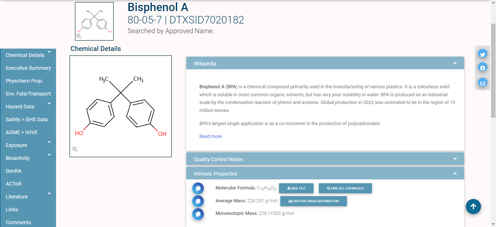
The different domains of data available for this chemical are shown by the tabs on the left side of the page: for example, “Physchem Prop.” (physico-chemical properties), “Env. Fate/Transport” (environmental fate and transport data), and “Hazard Data” (in vivo hazard and toxicity data), among others.
Batch Search
In batch search, the user enters a list of search inputs, separated by newlines, into a batch-search box on https://comptox.epa.gov/dashboard/batch-search . The user selects the type(s) of inputs by selecting one or more checkboxes – these may include chemical identifiers, monoisotopic masses, or molecular formulas. Then, the user selects “Display All Chemicals” to display the list of substances matching the batch-search inputs, or “Choose Export Options” to choose options for exporting the batch-search results as a spreadsheet. The exported spreadsheet may include data from most of the domains available on an individual substance’s CCD page.
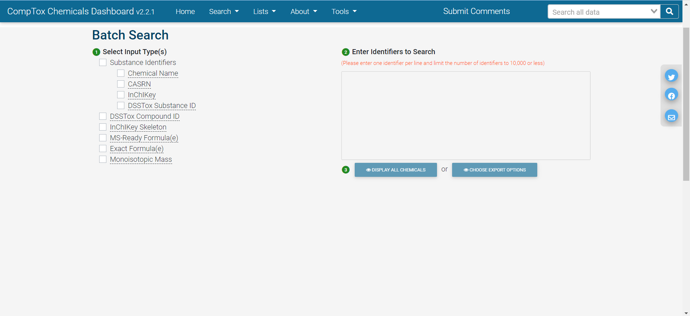
The user can download the selected information in various formats, such as Excel (.xlsx), comma-separated values (.csv), or different types of chemical table files (.e.g, MOL).
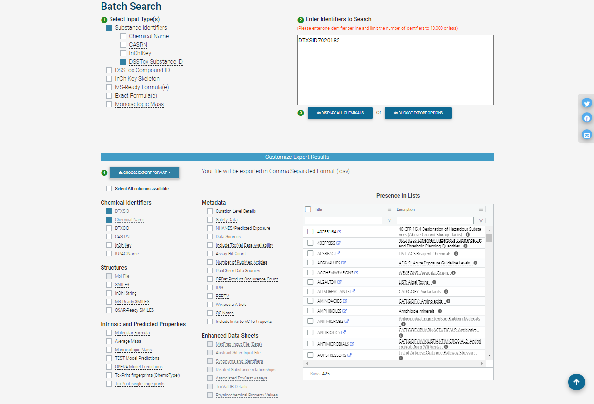
The web interface for batch search only allows input of 10,000 identifiers at a time. If a user needs to retrieve information for more than 10,000 chemicals, they will need to separate their identifiers into multiple batches and search each one separately.
Challenges of Web-based Dashboard Search
Practicing researchers typically end up with a Dashboard workflow that looks something like this:
- Start with a dataset that includes your chemical identifiers of interest. These may include chemical names, Chemical Abstract Service Registry Numbers (CASRNs), Distributed Searchable Structure-Toxicity Database (DSSTox) identifiers, or InChIKeys.
- Export the chemical identifiers to a spreadsheet. Often, this is done by importing the data into an environment such as R or Python, in order to do some data wrangling (e.g., to select only the unique substance identfiers; to clean up improperly-formatted CASRNs; etc.). Then, the identifiers are saved in a spreadsheet (an Excel, .csv, or .txt file), one chemical identifier per row.
- Copy and paste the chemical identifiers from the spreadsheet into the CCD Batch Search box. If there are more than 10,000 total chemical identifiers, divide them into batches of 10,000 or less, and search each batch separately.
- Choose your desired export options on the CCD Batch Search page.
- Download the exported spreadsheet of CCD data. By default, the downloaded spreadsheet will be given a file name that includes the timestamp of the download.
- Repeat steps 3-5 for each batch of 10,000 identifiers produced in step 2.
- Import the downloaded spreadsheet(s) of CCD data into the analysis tool you are using (e.g. R or Python).
- Merge the table(s) of downloaded CCD data with your original dataset of interest.
- Proceed with research-related data analysis using the chemical data downloaded from the CCD (e.g., statistical modeling, visualization, etc.)
Because each of these workflow steps requires manual interaction with the search and download process, the risk of human error inevitably creeps in. Here are a few real-world possibilities (the authors can neither confirm nor deny that they have personally committed any of these errors):
- Researchers could copy/paste the wrong identifiers into the CCD batch search, especially if they have more than 10,000 identifiers and have to divide them into batches.
- Chemical identifiers could be corrupted during the process of exporting to a spreadsheet. For example, if a researcher opens and resaves a CSV file using Microsoft Excel, any information that appears to be in date-like format will be automatically converted to a date (unless the researcher has the most recently-updated version of Excel and has selected the option in Settings that will stop Excel from auto-detecting dates). This behavior has long been identified as a problem in genomics, where gene names can appear date-like to Excel (Abeysooriya et al. 2021). It also affects cheminformatics, where chemical identifiers can appear date-like to Excel. For example, the valid CASRN “1990-07-4” would automatically be converted to “07/04/1990” (if Excel is set to use MM/DD/YYYY date formats). CCD batch search cannot recognize “07/04/1990” as a valid chemical identifier and will be unable to return any chemical data.
- Researchers could accidentally rename a downloaded CCD data file to overwrite a previous download (for example, when searching multiple batches of identifiers).
- Researchers could mistakenly import the wrong CCD download file back into their analysis environment (for example, when searching multiple batches of identifiers).
Moreover, the manual stages of this kind of workflow are also non-transparent and not easily reproducible.
CCTE’s CTX Application Programming Interfaces (APIs) for Automated Batch Search of the CCD
Recently, the Center for Computational Toxicology and Exposure (CCTE) developed a set of Application Programming Interfaces (APIs) that allows programmatic access to the CCD, bypassing the manual steps of the web-based batch search workflow. The Computational Toxicology and Exposure (CTX) APIs effectively automate the process of accessing and downloading data from the web pages that make up the CCD.
The CTX APIs are publicly available at no cost to the user. However, in order to use the CTX APIs, you must have an API key. The API key uniquely identifies you to the CTX servers and verifies that you have permission to access the database. Getting an API key is free, but requires contacting the API support team at ccte_api@epa.gov.
For more information on the data accessible through the CTX APIs and related tools, please visit the US EPA page on Computational Toxicology and Exposure Online Resources. The CTX APIs are one of many resources developed within this research realm and make available many of the data resources beyond the CCD.
The APIs are organized into four sets of “endpoints” (chemical data domains): Chemical, Hazard, Bioactivity, and Exposure. Pictured below is what the Chemical section looks like and can be found at CTX API Chemical Endpoints.
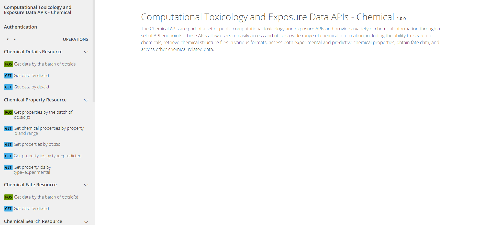
The APIs can be explored through the pictured web interface at https://api-ccte.epa.gov/docs/chemical.html .
CTX API Authentication
Authentication is the first tab on the left. Authentication is required to use the APIs. To authenticate yourself in the API web interface, input your unique API key.
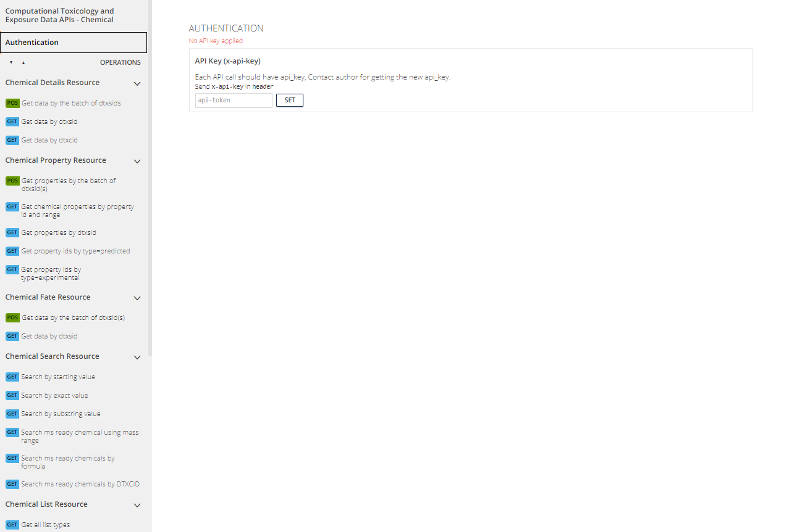
CTX API Endpoints
On the left of the API web interface, there are several different tabs, one for each endpoint in the Chemical domain. The endpoints are organized by the type of information provided. For instance, the Chemical Details Resource endpoint provides basic chemical information; the Chemical Property Resource endpoint provides more comprehensive physico-chemical property information; the Chemical Fate Resource endpoint provides chemical fate and transport information; and so on.
Constructing CTX API Requests
As mentioned above, APIs effectively automate the process of accessing and downloading data from the web pages that make up the CCD. APIs do this by automatically constructing requests using the Hypertext Transfer Protocol (HTTP) that enables communication between clients (e.g. your computer) and servers (e.g. the CCD).
In the CTX API web interface, the colored boxes next to each endpoint indicate the type of the associated HTTP method: either a GET request (“GET”, blue) or a a POST request (“POS”, green). GET is used to request data from a specific web resource (e.g. a specific URL); POST is used to send data to a server to create or update a web resource. For the CTX APIs, POST requests are used to perform multiple (batch) searches in a single API call; GET requests are used for non-batch searches. You do not need to understand the details of POST and GET requests in order to use the API.
Click on the second item under Chemical Details Resource, the tab labeled Get data by dtxsid. The following page will appear.
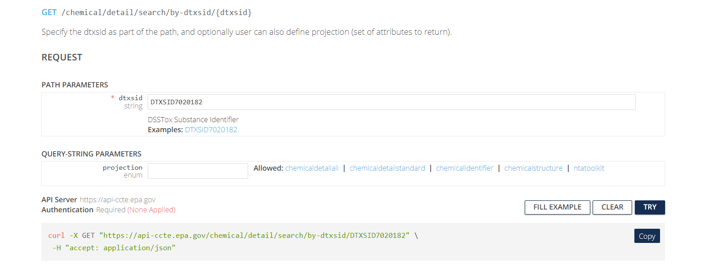
This page has two subheadings: “Path Parameters” and “Query-String Parameters”. “Path Parameters” contains user-specified parameters that are required in order to tell the API what URL (web address) to access. In this case, the required parameter is a string for the DTXSID identifying the chemical to be searched.
“Query-String Parameters” contain user-specific parameters (usually optional) that tell the API what specific type(s) of information to download from the specified URL. In this case, the optional parameter is a projection parameter, a string that can take one of five values (chemicaldetailall, chemicaldetailstandard, chemicalidentifier, chemicalstructure, ntatoolkit). Depending on the value of this string, the API can return different sets of information about the chemical. If the projection parameter is left blank, then a default set of chemical information is returned.
The default return format is displayed below and includes a variety of fields with data types represented.
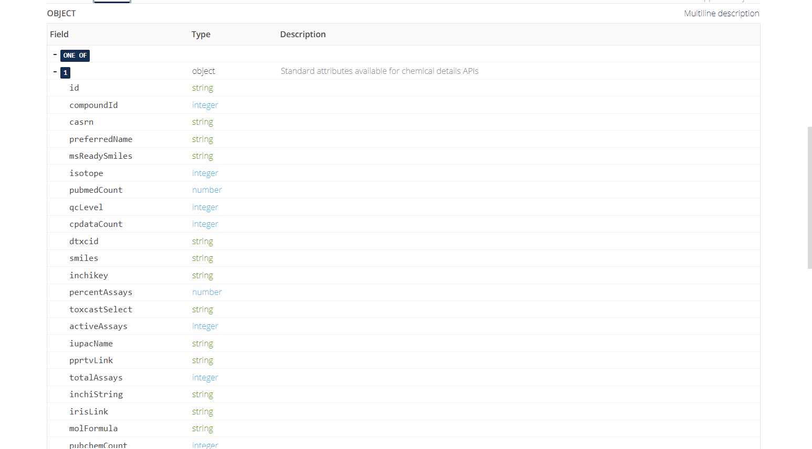
We show what reRturned data from searching Bisphenol A looks like using this endpoint with the chemicaldetailstandard value for projection selected.
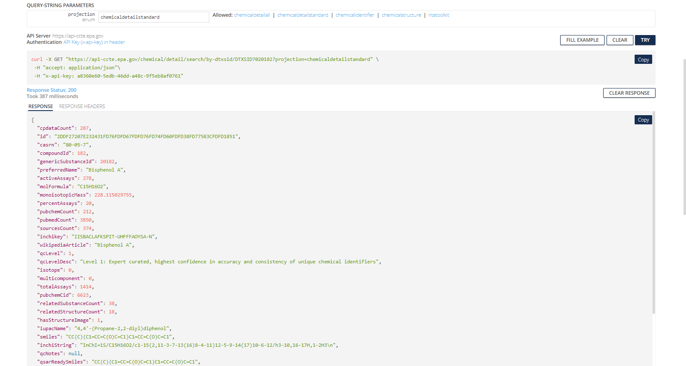
Formatting an http request is not necessarily intuitive nor worth the time for someone not already familiar with the process, so these endpoints may provide a resource that for many would require a significant investment in time and energy to learn how to use. However, there is a solution to this in the form of the R package ctxR.
ctxR was developed to streamline the process of accessing the information available through the CTX APIs without requiring prior knowledge of how to use APIs. The ctxR package is available in stable form on CRAN and a development version may be found at the USEPA ctxR GitHub repository. As an example, we demonstrate the ease with which one may retrieve the information given by this endpoint for Bisphenol A using the ctxR approach and contrast it with the approach using the CCD website or CTX Chemical API Endpoint website.
Setting, using, and storing the API key
We store the API key required to access the APIs. To do this for the current session, run the first command. If you want to store your key across multiple sessions, run the second command.
# This stores the key in the current session
register_ctx_api_key(key = '<YOUR API KEY>')
# This stores the key across multiple sessions and only needs to be run once.
# If the key changes, rerun this with the new key.
register_ctx_api_key(key = '<YOUR API KEY>', write = TRUE)To check that your key has successfully been stored for the session, run the following command.
Retrieving chemical details
Now, we demonstrate how to retrieve the information for BPA given by the Chemical Detail Resource endpoint under the chemicaldetailstandard value for projection. Note, this projection value is the default value for the function get_chemical_details().
BPA_chemical_detail <- get_chemical_details(DTXSID = 'DTXSID7020182')
dim(BPA_chemical_detail)
#> [1] 1 37
class(BPA_chemical_detail)
#> [1] "data.table" "data.frame"
names(BPA_chemical_detail)
#> [1] "id" "cpdataCount" "inchikey"
#> [4] "wikipediaArticle" "monoisotopicMass" "percentAssays"
#> [7] "pubchemCount" "pubmedCount" "sourcesCount"
#> [10] "qcLevel" "qcLevelDesc" "isotope"
#> [13] "multicomponent" "totalAssays" "pubchemCid"
#> [16] "relatedSubstanceCount" "relatedStructureCount" "casrn"
#> [19] "compoundId" "genericSubstanceId" "preferredName"
#> [22] "activeAssays" "molFormula" "hasStructureImage"
#> [25] "iupacName" "smiles" "inchiString"
#> [28] "qcNotes" "qsarReadySmiles" "msReadySmiles"
#> [31] "irisLink" "pprtvLink" "descriptorStringTsv"
#> [34] "isMarkush" "dtxsid" "dtxcid"
#> [37] "toxcastSelect"Comparing Physico-chemical Properties between Two Important Environmental Contaminant Lists
We study two different data sets contained in the CCD and observe how they relate and how they differ. The two data sets that we will explore are a water contaminant priority list and an air toxics list.
The fourth Drinking Water Contaminant Candidate List (CCL4) is a set of chemicals that “…are not subject to any proposed or promulgated national primary drinking water regulations, but are known or anticipated to occur in public water systems….” Moreover, this list “…was announced on November 17, 2016. The CCL 4 includes 97 chemicals or chemical groups and 12 microbial contaminants….” The National-Scale Air Toxics Assessments (NATA) is “… EPA’s ongoing comprehensive evaluation of air toxics in the United States… a state-of-the-science screening tool for State/Local/Tribal agencies to prioritize pollutants, emission sources and locations of interest for further study in order to gain a better understanding of risks… use general information about sources to develop estimates of risks which are more likely to overestimate impacts than underestimate them….”
These lists can be found in the CCD at CCL4 with additional information at CCL4 information and NATADB with additional information at NATA information. The quotes from the previous paragraph were excerpted from list detail descriptions found using the CCD links.
We explore details about these two lists of chemicals before diving into analyzing the data contained in each list.
options(width = 100)
ccl4_information <- get_public_chemical_list_by_name('CCL4')
print(ccl4_information, trunc.cols = TRUE)
#> id listName label type
#> 1 443 CCL4 WATER|EPA: Chemical Contaminants - CCL 4 federal
#> shortDescription
#> 1 The Contaminant Candidate List (CCL) is a list of contaminants that are known or anticipated to occur in public water systems. Version 4 is known as CCL 4.
#> longDescription
#> 1 The Contaminant Candidate List (CCL) is a list of contaminants that, at the time of publication, are not subject to any proposed or promulgated national primary drinking water regulations, but are known or anticipated to occur in public water systems. Contaminants listed on the CCL may require future regulation under the Safe Drinking Water Act (SDWA). EPA announced the <a href='https://www.epa.gov/ccl/contaminant-candidate-list-4-ccl-4-0' target='_blank'>fourth Drinking Water Contaminant Candidate List (CCL 4)</a> on November 17, 2016. The CCL 4 includes 97 chemicals or chemical groups and 12 microbial contaminants. The group of cyanotoxins on CCL 4 includes, but is not limited to: anatoxin-a, cylindrospermopsin, microcystins, and saxitoxin. The CCL Chemical Candidate Lists are versioned iteratively and this description navigates between the various versions of the lists. The list of substances displayed below represents only the chemical CCL 4 contaminants. For the versioned lists, please use the hyperlinked lists below.<br/><br/> \r\n\r\n<a href='https://comptox.epa.gov/dashboard/chemical_lists/CCL5' target='_blank'>CCL5 - November 2022</a> <br/><br/>\r\n<a href='https://comptox.epa.gov/dashboard/chemical_lists/CCL4' target='_blank'>CCL4 - November 2016</a> \r\n This list<br/><br/>\r\n<a href='https://comptox.epa.gov/dashboard/chemical_lists/CCL3' target='_blank'>CCL3 - October 2009</a> <br/><br/>\r\n<a href='https://comptox.epa.gov/dashboard/chemical_lists/CCL2' target='_blank'>CCL2 - February 2005</a><br/><br/>\r\n<a href='https://comptox.epa.gov/dashboard/chemical_lists/CCL1' target='_blank'>CCL1 - March 1998</a><br/><br/>
#> chemicalCount updatedAt
#> 1 100 2022-10-26T21:14:27Z
natadb_information <- get_public_chemical_list_by_name('NATADB')
print(natadb_information, trunc.cols = TRUE)
#> id listName label type
#> 1 454 NATADB EPA: National-Scale Air Toxics Assessment (NATA) federal
#> shortDescription
#> 1 The National-Scale Air Toxics Assessment (NATA) is EPA's ongoing comprehensive evaluation of air toxics in the United States.
#> longDescription
#> 1 The National-Scale Air Toxics Assessment (NATA) is EPA's ongoing comprehensive evaluation of air toxics in the United States. EPA developed the NATA as a state-of-the-science screening tool for State/Local/Tribal Agencies to prioritize pollutants, emission sources and locations of interest for further study in order to gain a better understanding of risks. NATA assessments do not incorporate refined information about emission sources but, rather, use general information about sources to develop estimates of risks which are more likely to overestimate impacts than underestimate them.\r\n\r\nNATA provides estimates of the risk of cancer and other serious health effects from breathing (inhaling) air toxics in order to inform both national and more localized efforts to identify and prioritize air toxics, emission source types and locations which are of greatest potential concern in terms of contributing to population risk. This in turn helps air pollution experts focus limited analytical resources on areas and or populations where the potential for health risks are highest. Assessments include estimates of cancer and non-cancer health effects based on chronic exposure from outdoor sources, including assessments of non-cancer health effects for Diesel Particulate Matter (PM). Assessments provide a snapshot of the outdoor air quality and the risks to human health that would result if air toxic emissions levels remained unchanged.
#> chemicalCount updatedAt
#> 1 163 2018-11-16T21:42:01ZNow we pull the actual chemicals contained in the lists using the APIs.
ccl4 <- get_chemicals_in_list('ccl4')
ccl4 <- data.table::as.data.table(ccl4)
natadb <- get_chemicals_in_list('NATADB')
natadb <- data.table::as.data.table(natadb)We examine the dimensions of the data, the column names, and display a single row for illustrative purposes.
dim(ccl4)
#> [1] 100 37
dim(natadb)
#> [1] 163 37
colnames(ccl4)
#> [1] "id" "cpdataCount" "inchikey" "wikipediaArticle"
#> [5] "monoisotopicMass" "percentAssays" "pubchemCount" "pubmedCount"
#> [9] "sourcesCount" "qcLevel" "qcLevelDesc" "isotope"
#> [13] "multicomponent" "totalAssays" "pubchemCid" "relatedSubstanceCount"
#> [17] "relatedStructureCount" "casrn" "compoundId" "genericSubstanceId"
#> [21] "preferredName" "activeAssays" "molFormula" "hasStructureImage"
#> [25] "iupacName" "smiles" "inchiString" "qcNotes"
#> [29] "qsarReadySmiles" "msReadySmiles" "irisLink" "pprtvLink"
#> [33] "descriptorStringTsv" "isMarkush" "dtxsid" "dtxcid"
#> [37] "toxcastSelect"
head(ccl4, 1)
#> id cpdataCount inchikey wikipediaArticle monoisotopicMass percentAssays pubchemCount
#> <char> <int> <char> <char> <num> <num> <int>
#> 1: 898650 NA <NA> <NA> NA NA NA
#> 30 variables not shown: [pubmedCount <num>, sourcesCount <int>, qcLevel <int>, qcLevelDesc <char>, isotope <int>, multicomponent <int>, totalAssays <int>, pubchemCid <int>, relatedSubstanceCount <int>, relatedStructureCount <int>, ...]Accessing the Physico-chemical Property Data
Once we have the chemicals in each list, we access their physico-chemical properties. We will use the batch search forms of the function get_chem_info(), to which we supply a list of DTXSIDs.
ccl4$dtxsid
#> [1] "DTXSID001024118" "DTXSID0020153" "DTXSID0020446" "DTXSID0020573" "DTXSID0020600"
#> [6] "DTXSID0020814" "DTXSID0021464" "DTXSID0021541" "DTXSID0021917" "DTXSID0024052"
#> [11] "DTXSID0024341" "DTXSID0032578" "DTXSID1020437" "DTXSID1021407" "DTXSID1021409"
#> [16] "DTXSID1021740" "DTXSID1021798" "DTXSID1024174" "DTXSID1024207" "DTXSID1024338"
#> [21] "DTXSID1026164" "DTXSID1031040" "DTXSID1037484" "DTXSID1037486" "DTXSID1037567"
#> [26] "DTXSID2020684" "DTXSID2021028" "DTXSID2021317" "DTXSID2021731" "DTXSID2022333"
#> [31] "DTXSID2024169" "DTXSID2031083" "DTXSID2037506" "DTXSID2040282" "DTXSID2052156"
#> [36] "DTXSID3020203" "DTXSID3020702" "DTXSID3020833" "DTXSID3020964" "DTXSID3021857"
#> [41] "DTXSID3024366" "DTXSID3024869" "DTXSID3031864" "DTXSID3032464" "DTXSID3034458"
#> [46] "DTXSID3042219" "DTXSID3073137" "DTXSID3074313" "DTXSID4020533" "DTXSID4021503"
#> [51] "DTXSID4022361" "DTXSID4022367" "DTXSID4022448" "DTXSID4022991" "DTXSID4032611"
#> [56] "DTXSID4034948" "DTXSID5020023" "DTXSID5020576" "DTXSID5020601" "DTXSID5021207"
#> [61] "DTXSID5024182" "DTXSID5039224" "DTXSID50867064" "DTXSID6020301" "DTXSID6020856"
#> [66] "DTXSID6021030" "DTXSID6021032" "DTXSID6022422" "DTXSID6024177" "DTXSID6037483"
#> [71] "DTXSID6037485" "DTXSID6037568" "DTXSID7020005" "DTXSID7020215" "DTXSID7020637"
#> [76] "DTXSID7021029" "DTXSID7024241" "DTXSID7047433" "DTXSID8020044" "DTXSID8020090"
#> [81] "DTXSID8020597" "DTXSID8020832" "DTXSID8021062" "DTXSID8022292" "DTXSID8022377"
#> [86] "DTXSID8023846" "DTXSID8023848" "DTXSID8025541" "DTXSID8031865" "DTXSID8052483"
#> [91] "DTXSID9020243" "DTXSID9021390" "DTXSID9021427" "DTXSID9022366" "DTXSID9023380"
#> [96] "DTXSID9023914" "DTXSID9024142" "DTXSID9032113" "DTXSID9032119" "DTXSID9032329"
natadb$dtxsid
#> [1] "DTXSID0020153" "DTXSID0020448" "DTXSID0020523" "DTXSID0020529" "DTXSID0020600"
#> [6] "DTXSID0020868" "DTXSID0021381" "DTXSID0021383" "DTXSID0021541" "DTXSID0021834"
#> [11] "DTXSID0021917" "DTXSID0021965" "DTXSID0024187" "DTXSID0024260" "DTXSID0039227"
#> [16] "DTXSID0039229" "DTXSID00872421" "DTXSID1020148" "DTXSID1020273" "DTXSID1020302"
#> [21] "DTXSID1020306" "DTXSID1020431" "DTXSID1020437" "DTXSID1020512" "DTXSID1020516"
#> [26] "DTXSID1020566" "DTXSID1021374" "DTXSID1021798" "DTXSID1021827" "DTXSID1022057"
#> [31] "DTXSID1023786" "DTXSID1024045" "DTXSID1024382" "DTXSID1026164" "DTXSID1049641"
#> [36] "DTXSID10872417" "DTXSID2020137" "DTXSID2020262" "DTXSID2020507" "DTXSID2020682"
#> [41] "DTXSID2020688" "DTXSID2020711" "DTXSID2020844" "DTXSID2021105" "DTXSID2021157"
#> [46] "DTXSID2021159" "DTXSID2021284" "DTXSID2021286" "DTXSID2021319" "DTXSID2021446"
#> [51] "DTXSID2021658" "DTXSID2021731" "DTXSID2021781" "DTXSID2021993" "DTXSID3020203"
#> [56] "DTXSID3020257" "DTXSID3020413" "DTXSID3020415" "DTXSID3020596" "DTXSID3020679"
#> [61] "DTXSID3020702" "DTXSID3020833" "DTXSID3020964" "DTXSID3021431" "DTXSID3021932"
#> [66] "DTXSID3022455" "DTXSID3024366" "DTXSID3025091" "DTXSID3039242" "DTXSID30872414"
#> [71] "DTXSID30872419" "DTXSID4020161" "DTXSID4020298" "DTXSID4020402" "DTXSID4020533"
#> [76] "DTXSID4020583" "DTXSID4020874" "DTXSID4020901" "DTXSID4021006" "DTXSID4021056"
#> [81] "DTXSID4021395" "DTXSID4024143" "DTXSID4024359" "DTXSID4039231" "DTXSID40872425"
#> [86] "DTXSID5020023" "DTXSID5020027" "DTXSID5020029" "DTXSID5020071" "DTXSID5020316"
#> [91] "DTXSID5020449" "DTXSID5020491" "DTXSID5020601" "DTXSID5020607" "DTXSID5020865"
#> [96] "DTXSID5021124" "DTXSID5021207" "DTXSID5021380" "DTXSID5021386" "DTXSID5021889"
#> [101] "DTXSID5024055" "DTXSID5024059" "DTXSID5024267" "DTXSID5039224" "DTXSID6020145"
#> [106] "DTXSID6020307" "DTXSID6020353" "DTXSID6020432" "DTXSID6020438" "DTXSID6020515"
#> [111] "DTXSID6020569" "DTXSID6020981" "DTXSID6021828" "DTXSID6022422" "DTXSID6023947"
#> [116] "DTXSID6023949" "DTXSID7020005" "DTXSID7020009" "DTXSID7020267" "DTXSID7020637"
#> [121] "DTXSID7020683" "DTXSID7020687" "DTXSID7020689" "DTXSID7020710" "DTXSID7020716"
#> [126] "DTXSID7021029" "DTXSID7021100" "DTXSID7021106" "DTXSID7021318" "DTXSID7021360"
#> [131] "DTXSID7021368" "DTXSID7021948" "DTXSID7023984" "DTXSID7024166" "DTXSID7024370"
#> [136] "DTXSID7024532" "DTXSID7025180" "DTXSID7026156" "DTXSID8020090" "DTXSID8020173"
#> [141] "DTXSID8020250" "DTXSID8020597" "DTXSID8020599" "DTXSID8020759" "DTXSID8020832"
#> [146] "DTXSID8020913" "DTXSID8021195" "DTXSID8021197" "DTXSID8021432" "DTXSID8021434"
#> [151] "DTXSID8021438" "DTXSID8024286" "DTXSID8042476" "DTXSID9020168" "DTXSID9020243"
#> [156] "DTXSID9020247" "DTXSID9020293" "DTXSID9020299" "DTXSID9020827" "DTXSID9021138"
#> [161] "DTXSID9021261" "DTXSID9041522" "DTXSID90872415"
ccl4_phys_chem <- get_chem_info_batch(ccl4$dtxsid)
natadb_phys_chem <- get_chem_info_batch(natadb$dtxsid)Observe that this returns a single data.table for each query, and the data.table contains the physico-chemical properties available from the CompTox Chemicals Dashboard for each chemical in the query. Note, a warning message was triggered, Warning: Setting type to ''!, which indicates the the parameter type was not given a value. A default value is set within the function and more information can be found in the associated documentation. We examine the set of physico-chemical properties for the first chemical in CCL4.
Before any deeper analysis, let’s take a look at the dimensions of the data and the column names.
dim(ccl4_phys_chem)
#> [1] 12723 53
colnames(ccl4_phys_chem)
#> [1] "id" "dtxsid"
#> [3] "dtxcid" "smiles"
#> [5] "canonQsarSmiles" "genericSubstanceUpdatedAt"
#> [7] "propName" "propCategory"
#> [9] "propDescription" "modelName"
#> [11] "modelId" "sourceName"
#> [13] "sourceDescription" "propValueExperimental"
#> [15] "propValueExperimentalString" "propValue"
#> [17] "propUnit" "propValueString"
#> [19] "propValueError" "adMethod"
#> [21] "adValue" "adConclusion"
#> [23] "adReasoning" "adMethodGlobal"
#> [25] "adValueGlobal" "adConclusionGlobal"
#> [27] "adReasoningGlobal" "hasQmrf"
#> [29] "qmrfUrl" "propType"
#> [31] "lscitation" "propValueText"
#> [33] "expDetailsPh" "directUrl"
#> [35] "publicSourceUrl" "propValueId"
#> [37] "briefCitation" "propValueOriginal"
#> [39] "expDetailsTemperatureC" "expDetailsPressureMmhg"
#> [41] "publicSourceName" "publicSourceOriginalUrl"
#> [43] "expDetailsSpeciesLatin" "expDetailsResponseSite"
#> [45] "expDetailsSpeciesCommon" "publicSourceDescription"
#> [47] "expDetailsSpeciesSupercategory" "publicSourceOriginalDescription"
#> [49] "publicSourceOriginalName" "lsDoi"
#> [51] "lsName" "dataset"
#> [53] "lsCitation"Next, we display the unique values for the columns propertyID and propType.
ccl4_phys_chem[, unique(propName)]
#> [1] "Androgen Receptor Agonist" "Androgen Receptor Binding"
#> [3] "Atmos. Hydroxylation Rate" "Boiling Point"
#> [5] "Density" "Estrogen Receptor Agonist"
#> [7] "Estrogen Receptor Antagonist" "Estrogen Receptor Binding"
#> [9] "Flash Point" "Henry's Law Constant"
#> [11] "LogKow: Octanol-Water" "Melting Point"
#> [13] "Vapor Pressure" "Water Solubility"
#> [15] "48 Hour Daphnia Magna LC50" "48 Hour Tetrahymena Pyriformis IGC50"
#> [17] "96 Hour Fathead Minnow LC50" "pKa Acidic Apparent"
#> [19] "Ames Mutagenicity" "Androgen Receptor Antagonist"
#> [21] "pKa Basic Apparent" "Bioconcentration Factor"
#> [23] "Biodeg. Half-Life" "Caco-2 Permeability (Papp)"
#> [25] "Developmental Toxicity" "Dielectric Constant"
#> [27] "Fish Biotrans. Half-Life (Km)" "Fraction Unbound in Human Plasma"
#> [29] "In Vitro Intrinsic Hepatic Clearance" "Index of Refraction"
#> [31] "Liquid Chromatography Retention Time" "LogD5.5"
#> [33] "LogD7.4" "LogKoa: Octanol-Air"
#> [35] "Molar Refractivity" "Molar Volume"
#> [37] "Oral Rat LD50" "Polarizability"
#> [39] "Ready Binary Biodegradability" "Soil Adsorp. Coeff. (Koc)"
#> [41] "Surface Tension" "Thermal Conductivity"
#> [43] "Viscosity" "Bioaccumulation Factor"
ccl4_phys_chem[, unique(propType)]
#> [1] "experimental" "predicted"Let’s explore this further by examining the mean of the “boiling-point” and “melting-point” data.
ccl4_phys_chem[propName == 'Boiling Point', .(Mean = mean(propValue, na.rm = TRUE))]
#> Mean
#> <num>
#> 1: 236.5582
ccl4_phys_chem[propName == 'Boiling Point', .(Mean = mean(propValue, na.rm = TRUE)),
by = .(propType)]
#> propType Mean
#> <char> <num>
#> 1: experimental 232.7907
#> 2: predicted 242.6148
ccl4_phys_chem[propName == 'Melting Point', .(Mean = mean(propValue, na.rm = TRUE))]
#> Mean
#> <num>
#> 1: 50.09753
ccl4_phys_chem[propName == 'Melting Point', .(Mean = mean(propValue, na.rm = TRUE)),
by = .(propType)]
#> propType Mean
#> <char> <num>
#> 1: experimental 50.48745
#> 2: predicted 47.72193These results tell us about some of the reported physico-chemical properties of the data sets.
Answer to Environmental Health Question 1
With this, we can answer Environmental Health Question 1: After automatically pulling the fourth Drinking Water Contaminant Candidate List from the CompTox Chemicals Dashboard, list the properties and property types present in the data. What are the mean values for a specific property when grouped by property type and when ungrouped?
Answer: The mean “Boiling Point” is 237.9223 degrees Celsius for CCL4, with mean values of 249.5600 and 232.7907 for experimental and predicted, respectively. The mean “Melting Point” is 50.29227 degrees Celsius for CCL4, with mean values of 47.95455 and 50.48745 for experimental and predicted, respectively.
To explore all the values of the physico-chemical properties and calculate their means, we can do the following procedure. First we look at all the physico-chemical properties individually, then group them by each property (“Boiling Point”, “Melting Point”, etc…), and then additionally group those by property type (“experimental” vs “predicted”). In the grouping, we look at the columns propValue, unit, propName and propType. We also demonstrate how take the mean of the values for each grouping. We examine the chemical with DTXSID “DTXSID0020153” from CCL4.
head(ccl4_phys_chem[dtxsid == 'DTXSID0020153', ])
#> id dtxsid dtxcid smiles canonQsarSmiles genericSubstanceUpdatedAt
#> <int> <char> <char> <char> <char> <char>
#> 1: 3608 DTXSID0020153 DTXCID00153 ClCC1=CC=CC=C1 <NA> <NA>
#> 2: 3609 DTXSID0020153 DTXCID00153 ClCC1=CC=CC=C1 <NA> <NA>
#> 3: 3610 DTXSID0020153 DTXCID00153 ClCC1=CC=CC=C1 <NA> <NA>
#> 4: 3611 DTXSID0020153 DTXCID00153 ClCC1=CC=CC=C1 <NA> <NA>
#> 5: 3612 DTXSID0020153 DTXCID00153 ClCC1=CC=CC=C1 <NA> <NA>
#> 6: 3613 DTXSID0020153 DTXCID00153 ClCC1=CC=CC=C1 <NA> <NA>
#> 47 variables not shown: [propName <char>, propCategory <char>, propDescription <char>, modelName <char>, modelId <int>, sourceName <char>, sourceDescription <char>, propValueExperimental <num>, propValueExperimentalString <char>, propValue <num>, ...]
ccl4_phys_chem[dtxsid == 'DTXSID0020153', .(propType, propValue, propUnit),
by = .(propName)]
#> propName propType propValue propUnit
#> <char> <char> <num> <char>
#> 1: Androgen Receptor Agonist experimental 0.000000e+00 Binary 0/1
#> 2: Androgen Receptor Agonist predicted 0.000000e+00 Binary 0/1
#> 3: Androgen Receptor Binding experimental 0.000000e+00 Binary 0/1
#> 4: Androgen Receptor Binding predicted 0.000000e+00 Binary 0/1
#> 5: Atmos. Hydroxylation Rate experimental 2.900000e-12 cm^3/molecule*sec
#> ---
#> 162: Soil Adsorp. Coeff. (Koc) predicted 7.585776e+01 L/kg
#> 163: Surface Tension predicted 3.385300e+01 dyn/cm
#> 164: Surface Tension predicted 3.466817e+01 dyn/cm
#> 165: Thermal Conductivity predicted 1.312880e+02 mW/(m*K)
#> 166: Viscosity predicted 1.402960e+00 cP
ccl4_phys_chem[dtxsid == 'DTXSID0020153', .(propValue, propUnit),
by = .(propName, propType)]
#> propName propType propValue propUnit
#> <char> <char> <num> <char>
#> 1: Androgen Receptor Agonist experimental 0.000000e+00 Binary 0/1
#> 2: Androgen Receptor Binding experimental 0.000000e+00 Binary 0/1
#> 3: Atmos. Hydroxylation Rate experimental 2.900000e-12 cm^3/molecule*sec
#> 4: Boiling Point experimental 1.794000e+02 °C
#> 5: Boiling Point experimental 1.790000e+02 °C
#> ---
#> 162: Vapor Pressure predicted 1.999403e+00 mmHg
#> 163: Viscosity predicted 1.402960e+00 cP
#> 164: Water Solubility predicted 4.786301e-03 mol/L
#> 165: Water Solubility predicted 1.000000e-03 mol/L
#> 166: Water Solubility predicted 3.005050e-03 mol/L
ccl4_phys_chem[dtxsid == 'DTXSID0020153', .(Mean_value = sapply(.SD, function(t){mean(t, na.rm = TRUE)})),
by = .(propName, propUnit), .SDcols = c("propValue")]
#> propName propUnit Mean_value
#> <char> <char> <num>
#> 1: Androgen Receptor Agonist Binary 0/1 0.000000e+00
#> 2: Androgen Receptor Binding Binary 0/1 0.000000e+00
#> 3: Atmos. Hydroxylation Rate cm^3/molecule*sec 2.892016e-12
#> 4: Boiling Point °C 1.785782e+02
#> 5: Density g/cm^3 1.098284e+00
#> 6: Estrogen Receptor Agonist Binary 0/1 0.000000e+00
#> 7: Estrogen Receptor Antagon Binary 0/1 0.000000e+00
#> 8: Estrogen Receptor Binding Binary 0/1 0.000000e+00
#> 9: Flash Point °C 6.801012e+01
#> 10: Henry's Law Constant atm-m3/mole 7.608625e-04
#> 11: LogKow: Octanol-Water Log10 unitless 2.326000e+00
#> 12: Melting Point °C -4.131931e+01
#> 13: Vapor Pressure mmHg 1.279139e+00
#> 14: Water Solubility mol/L 4.432003e-01
#> 15: 48 Hour Daphnia Magna LC5 mol/L 5.709196e-05
#> 16: 48 Hour Tetrahymena Pyrif mol/L 5.776492e-04
#> 17: 96 Hour Fathead Minnow LC mol/L 1.034124e-04
#> 18: pKa Acidic Apparent Log10 unitless NaN
#> 19: Ames Mutagenicity Binary 0/1 4.686022e-01
#> 20: Androgen Receptor Antagon Binary 0/1 0.000000e+00
#> 21: pKa Basic Apparent Log10 unitless NaN
#> 22: Bioconcentration Factor L/kg 6.182632e+01
#> 23: Biodeg. Half-Life days 4.897788e+00
#> 24: Caco-2 Permeability (Papp cm/sec 5.011872e-05
#> 25: Developmental Toxicity Binary 0/1 3.351469e-01
#> 26: Dielectric Constant Dimensionless NaN
#> 27: Fish Biotrans. Half-Life days 1.318257e-01
#> 28: Fraction Unbound in Human Dimensionless 2.000000e-01
#> 29: In Vitro Intrinsic Hepati uL/min/million hepatocyte 2.713000e+01
#> 30: Index of Refraction Dimensionless 1.527000e+00
#> 31: Liquid Chromatography Ret minutes 8.700000e+00
#> 32: LogD5.5 Log10 unitless 2.469000e+00
#> 33: LogD7.4 Log10 unitless 2.469000e+00
#> 34: LogKoa: Octanol-Air Log10 unitless 4.160000e+00
#> 35: Molar Refractivity cm^3/mol 3.601800e+01
#> 36: Molar Volume cm^3/mol 1.171290e+02
#> 37: Oral Rat LD50 mg/kg 8.040000e+02
#> 38: Oral Rat LD50 mol/kg 1.534708e-02
#> 39: Polarizability Å^3 1.427900e+01
#> 40: Ready Binary Biodegradabi Binary 0/1 0.000000e+00
#> 41: Soil Adsorp. Coeff. (Koc) L/kg 7.585776e+01
#> 42: Surface Tension dyn/cm 3.426058e+01
#> 43: Thermal Conductivity mW/(m*K) 1.312880e+02
#> 44: Viscosity cP 1.402960e+00
#> propName propUnit Mean_value
#> <char> <char> <num>
ccl4_phys_chem[dtxsid == 'DTXSID0020153', .(Mean_value = sapply(.SD, function(t){mean(t, na.rm = TRUE)})),
by = .(propName, propUnit, propType),
.SDcols = c("propValue")][order(propName)]
#> propName propUnit propType Mean_value
#> <char> <char> <char> <num>
#> 1: 48 Hour Daphnia Magna LC5 mol/L predicted 5.709196e-05
#> 2: 48 Hour Tetrahymena Pyrif mol/L predicted 5.776492e-04
#> 3: 96 Hour Fathead Minnow LC mol/L predicted 1.034124e-04
#> 4: Ames Mutagenicity Binary 0/1 predicted 4.686022e-01
#> 5: Androgen Receptor Agonist Binary 0/1 experimental 0.000000e+00
#> 6: Androgen Receptor Agonist Binary 0/1 predicted 0.000000e+00
#> 7: Androgen Receptor Antagon Binary 0/1 predicted 0.000000e+00
#> 8: Androgen Receptor Binding Binary 0/1 experimental 0.000000e+00
#> 9: Androgen Receptor Binding Binary 0/1 predicted 0.000000e+00
#> 10: Atmos. Hydroxylation Rate cm^3/molecule*sec experimental 2.900000e-12
#> 11: Atmos. Hydroxylation Rate cm^3/molecule*sec predicted 2.884032e-12
#> 12: Bioconcentration Factor L/kg predicted 6.182632e+01
#> 13: Biodeg. Half-Life days predicted 4.897788e+00
#> 14: Boiling Point °C experimental 1.784519e+02
#> 15: Boiling Point °C predicted 1.789574e+02
#> 16: Caco-2 Permeability (Papp cm/sec predicted 5.011872e-05
#> 17: Density g/cm^3 experimental 1.100044e+00
#> 18: Density g/cm^3 predicted 1.090362e+00
#> 19: Developmental Toxicity Binary 0/1 predicted 3.351469e-01
#> 20: Dielectric Constant Dimensionless predicted NaN
#> 21: Estrogen Receptor Agonist Binary 0/1 experimental 0.000000e+00
#> 22: Estrogen Receptor Agonist Binary 0/1 predicted 0.000000e+00
#> 23: Estrogen Receptor Antagon Binary 0/1 experimental 0.000000e+00
#> 24: Estrogen Receptor Antagon Binary 0/1 predicted 0.000000e+00
#> 25: Estrogen Receptor Binding Binary 0/1 experimental 0.000000e+00
#> 26: Estrogen Receptor Binding Binary 0/1 predicted 0.000000e+00
#> 27: Fish Biotrans. Half-Life days predicted 1.318257e-01
#> 28: Flash Point °C experimental 6.738433e+01
#> 29: Flash Point °C predicted 7.364224e+01
#> 30: Fraction Unbound in Human Dimensionless predicted 2.000000e-01
#> 31: Henry's Law Constant atm-m3/mole experimental 4.870692e-04
#> 32: Henry's Law Constant atm-m3/mole predicted 2.951209e-03
#> 33: In Vitro Intrinsic Hepati uL/min/million hepatocyte predicted 2.713000e+01
#> 34: Index of Refraction Dimensionless predicted 1.527000e+00
#> 35: Liquid Chromatography Ret minutes predicted 8.700000e+00
#> 36: LogD5.5 Log10 unitless predicted 2.469000e+00
#> 37: LogD7.4 Log10 unitless predicted 2.469000e+00
#> 38: LogKoa: Octanol-Air Log10 unitless predicted 4.160000e+00
#> 39: LogKow: Octanol-Water Log10 unitless experimental 2.300000e+00
#> 40: LogKow: Octanol-Water Log10 unitless predicted 2.469000e+00
#> 41: Melting Point °C experimental -4.202915e+01
#> 42: Melting Point °C predicted -3.528563e+01
#> 43: Molar Refractivity cm^3/mol predicted 3.601800e+01
#> 44: Molar Volume cm^3/mol predicted 1.171290e+02
#> 45: Oral Rat LD50 mg/kg predicted 8.040000e+02
#> 46: Oral Rat LD50 mol/kg predicted 1.534708e-02
#> 47: Polarizability Å^3 predicted 1.427900e+01
#> 48: Ready Binary Biodegradabi Binary 0/1 predicted 0.000000e+00
#> 49: Soil Adsorp. Coeff. (Koc) L/kg predicted 7.585776e+01
#> 50: Surface Tension dyn/cm predicted 3.426058e+01
#> 51: Thermal Conductivity mW/(m*K) predicted 1.312880e+02
#> 52: Vapor Pressure mmHg experimental 1.227658e+00
#> 53: Vapor Pressure mmHg predicted 1.502224e+00
#> 54: Viscosity cP predicted 1.402960e+00
#> 55: Water Solubility mol/L experimental 5.312543e-01
#> 56: Water Solubility mol/L predicted 2.930450e-03
#> 57: pKa Acidic Apparent Log10 unitless predicted NaN
#> 58: pKa Basic Apparent Log10 unitless predicted NaN
#> propName propUnit propType Mean_value
#> <char> <char> <char> <num>Analyzing and Visualizing Physico-chemical Properties from Two Environmental Contaminant Lists
We consider exploring the differences in mean predicted and experimental values for a variety of physico-chemical properties in an effort to understand better the CCL4 and NATADB lists. In particular, we examine “Vapor Pressure”, “Henry’s Law Constant”, and “Boiling Point” and plot the means by chemical for these using boxplots. We then compare the values by grouping by both data set and propType value.
We first examine the vapor pressures for all the chemicals in each list. We then graph these, grouped by propType and pooled together in separate plots. For this we will use boxplots.
Group first by DTXSID.
ccl4_vapor_all <- ccl4_phys_chem[propName %in% 'Vapor Pressure',
.(mean_vapor_pressure = sapply(.SD, function(t) {mean(t, na.rm = TRUE)})),
.SDcols = c('propValue'), by = .(dtxsid)]
natadb_vapor_all <- natadb_phys_chem[propName %in% 'Vapor Pressure',
.(mean_vapor_pressure = sapply(.SD, function(t) {mean(t, na.rm = TRUE)})),
.SDcols = c('propValue'), by = .(dtxsid)]Then group by DTXSID and then by property type.
ccl4_vapor_grouped <- ccl4_phys_chem[propName %in% 'Vapor Pressure',
.(mean_vapor_pressure = sapply(.SD, function(t) {mean(t, na.rm = TRUE)})),
.SDcols = c('propValue'),
by = .(dtxsid, propType)]
natadb_vapor_grouped <- natadb_phys_chem[propName %in% 'Vapor Pressure',
.(mean_vapor_pressure =
sapply(.SD, function(t) {mean(t, na.rm = TRUE)})),
.SDcols = c('propValue'),
by = .(dtxsid, propType)]Then examine the summary statistics of the data.
summary(ccl4_vapor_all)
#> dtxsid mean_vapor_pressure
#> Length:99 Min. : 0.000
#> Class :character 1st Qu.: 0.000
#> Mode :character Median : 0.002
#> Mean : 776.103
#> 3rd Qu.: 3.543
#> Max. :52909.957
#> NA's :5
summary(ccl4_vapor_grouped)
#> dtxsid propType mean_vapor_pressure
#> Length:174 Length:174 Min. : 0.000
#> Class :character Class :character 1st Qu.: 0.000
#> Mode :character Mode :character Median : 0.007
#> Mean : 627.754
#> 3rd Qu.: 5.534
#> Max. :65677.692
#> NA's :7
summary(natadb_vapor_all)
#> dtxsid mean_vapor_pressure
#> Length:154 Min. : 0.000
#> Class :character 1st Qu.: 0.013
#> Mode :character Median : 1.266
#> Mean : 982.258
#> 3rd Qu.: 96.119
#> Max. :52909.957
summary(natadb_vapor_grouped)
#> dtxsid propType mean_vapor_pressure
#> Length:304 Length:304 Min. : 0.000
#> Class :character Class :character 1st Qu.: 0.010
#> Mode :character Mode :character Median : 1.428
#> Mean : 880.178
#> 3rd Qu.: 102.436
#> Max. :65677.692
#> NA's :3With such a large range of values covering several orders of magnitude, we log transform the data. Since some of these value are non-positive, some transformations may result in non-numeric values. These will be removed when plotting. We expect these values to be positive in general so we go ahead with these transformations.
ccl4_vapor_all[, log_transform_mean_vapor_pressure := log(mean_vapor_pressure)]
#> dtxsid mean_vapor_pressure log_transform_mean_vapor_pressure
#> <char> <num> <num>
#> 1: DTXSID0020153 1.279139e+00 0.2461870
#> 2: DTXSID0020446 4.888110e-07 -14.5312900
#> 3: DTXSID0020573 5.092785e-09 -19.0954409
#> 4: DTXSID0020600 1.186021e+03 7.0783591
#> 5: DTXSID0020814 1.711619e-08 -17.8832408
#> 6: DTXSID0021464 4.763659e-02 -3.0441542
#> 7: DTXSID0021541 3.828232e+03 8.2501584
#> 8: DTXSID0021917 1.453692e+02 4.9792767
#> 9: DTXSID0024052 3.204027e-07 -14.9536872
#> 10: DTXSID0024341 1.420000e-01 -1.9519282
#> 11: DTXSID0032578 3.425596e-05 -10.2816499
#> 12: DTXSID1020437 2.122070e+02 5.3575622
#> 13: DTXSID1021407 5.833407e-04 -7.4467391
#> 14: DTXSID1021409 2.482333e-07 -15.2088967
#> 15: DTXSID1021740 7.265071e+00 1.9830780
#> 16: DTXSID1021798 7.254009e-02 -2.6236159
#> 17: DTXSID1024174 5.105006e-06 -12.1852890
#> 18: DTXSID1024207 NaN NaN
#> 19: DTXSID1024338 7.011771e-08 -16.4730904
#> 20: DTXSID1026164 2.884914e-01 -1.2430901
#> 21: DTXSID1031040 0.000000e+00 -Inf
#> 22: DTXSID1037484 4.123047e-07 -14.7015033
#> 23: DTXSID1037486 4.205959e-07 -14.6815934
#> 24: DTXSID1037567 4.677351e-08 -16.8779487
#> 25: DTXSID2020684 3.389838e-03 -5.6869732
#> 26: DTXSID2021028 2.143330e+00 0.7623605
#> 27: DTXSID2021317 1.307746e+01 2.5708904
#> 28: DTXSID2021731 1.368308e+02 4.9187452
#> 29: DTXSID2022333 1.709680e+00 0.5363061
#> 30: DTXSID2024169 NaN NaN
#> 31: DTXSID2031083 2.238721e-09 -19.9173611
#> 32: DTXSID2037506 6.420747e-06 -11.9559762
#> 33: DTXSID2040282 NaN NaN
#> 34: DTXSID2052156 3.879275e-09 -19.3676176
#> 35: DTXSID3020203 1.909251e+03 7.5544661
#> 36: DTXSID3020702 1.336021e+01 2.5922806
#> 37: DTXSID3020833 2.429432e+02 5.4928278
#> 38: DTXSID3020964 2.273984e-01 -1.4810519
#> 39: DTXSID3021857 5.754399e-03 -5.1577906
#> 40: DTXSID3024366 5.624145e+01 4.0296540
#> 41: DTXSID3024869 1.010761e-01 -2.2918817
#> 42: DTXSID3031864 5.671483e-03 -5.1723046
#> 43: DTXSID3032464 3.574461e-06 -12.5416962
#> 44: DTXSID3034458 2.089322e-07 -15.3812560
#> 45: DTXSID3042219 3.729167e+00 1.3161848
#> 46: DTXSID3073137 NaN NaN
#> 47: DTXSID3074313 1.475665e-11 -24.9393272
#> 48: DTXSID4020533 3.658063e+01 3.5995189
#> 49: DTXSID4021503 1.427827e+02 4.9613237
#> 50: DTXSID4022361 1.778746e-06 -13.2396019
#> 51: DTXSID4022367 1.644399e-08 -17.9233055
#> 52: DTXSID4022448 2.404770e-05 -10.6354712
#> 53: DTXSID4022991 1.455054e-10 -22.6508076
#> 54: DTXSID4032611 4.605653e-04 -7.6830559
#> 55: DTXSID4034948 2.599705e-08 -17.4652829
#> 56: DTXSID5020023 2.440246e+02 5.4972691
#> 57: DTXSID5020576 5.737862e-09 -18.9761791
#> 58: DTXSID5020601 3.407444e+00 1.2259624
#> 59: DTXSID5021207 4.907877e+02 6.1960116
#> 60: DTXSID5024182 7.934111e+00 2.0711713
#> 61: DTXSID5039224 8.223407e+02 6.7121548
#> 62: DTXSID50867064 1.295857e-03 -6.6485828
#> 63: DTXSID6020301 7.081280e+03 8.8652099
#> 64: DTXSID6020856 3.036665e-01 -1.1918253
#> 65: DTXSID6021030 4.710846e-05 -9.9630580
#> 66: DTXSID6021032 6.854189e-01 -0.3777251
#> 67: DTXSID6022422 6.257758e-04 -7.3765184
#> 68: DTXSID6024177 2.643413e-02 -3.6330993
#> 69: DTXSID6037483 4.897788e-08 -16.8318970
#> 70: DTXSID6037485 5.011872e-08 -16.8088712
#> 71: DTXSID6037568 2.877539e-07 -15.0611603
#> 72: DTXSID7020005 1.315560e-01 -2.0283227
#> 73: DTXSID7020215 2.480000e-03 -5.9994967
#> 74: DTXSID7020637 5.290996e+04 10.8763468
#> 75: DTXSID7021029 3.588699e+00 1.2777897
#> 76: DTXSID7024241 1.420085e-06 -13.4647937
#> 77: DTXSID7047433 1.072846e-08 -18.3503658
#> 78: DTXSID8020044 2.340254e+01 3.1528447
#> 79: DTXSID8020090 5.271520e-01 -0.6402664
#> 80: DTXSID8020597 1.054588e-01 -2.2494352
#> 81: DTXSID8020832 3.420715e+03 8.1376050
#> 82: DTXSID8021062 9.393437e-02 -2.3651590
#> 83: DTXSID8022292 2.143640e-08 -17.6581752
#> 84: DTXSID8022377 1.015732e-08 -18.4050714
#> 85: DTXSID8023846 5.049610e-04 -7.5910293
#> 86: DTXSID8023848 8.880285e-06 -11.6316769
#> 87: DTXSID8025541 2.234971e-05 -10.7086972
#> 88: DTXSID8031865 5.400037e-01 -0.6161793
#> 89: DTXSID8052483 0.000000e+00 -Inf
#> 90: DTXSID9020243 6.783637e-05 -9.5984120
#> 91: DTXSID9021390 3.589595e+00 1.2780394
#> 92: DTXSID9021427 2.835285e-01 -1.2604426
#> 93: DTXSID9022366 1.179709e-09 -20.5579985
#> 94: DTXSID9023380 8.711781e-08 -16.2560045
#> 95: DTXSID9023914 1.706367e-04 -8.6759737
#> 96: DTXSID9024142 3.274791e-09 -19.5370119
#> 97: DTXSID9032113 1.914294e-08 -17.7713317
#> 98: DTXSID9032119 NaN NaN
#> 99: DTXSID9032329 7.722021e-07 -14.0740196
#> dtxsid mean_vapor_pressure log_transform_mean_vapor_pressure
#> <char> <num> <num>
ccl4_vapor_grouped[, log_transform_mean_vapor_pressure :=
log(mean_vapor_pressure)]
#> dtxsid propType mean_vapor_pressure log_transform_mean_vapor_pressure
#> <char> <char> <num> <num>
#> 1: DTXSID0020153 experimental 1.227658e+00 0.2051079
#> 2: DTXSID0020153 predicted 1.502224e+00 0.4069466
#> 3: DTXSID0020446 experimental 1.878700e-07 -15.4875156
#> 4: DTXSID0020446 predicted 1.592261e-06 -13.3503554
#> 5: DTXSID0020573 experimental 2.825234e-11 -24.2898450
#> ---
#> 170: DTXSID9032113 experimental 1.301896e-08 -18.1568589
#> 171: DTXSID9032113 predicted 3.547356e-08 -17.1544782
#> 172: DTXSID9032119 predicted NaN NaN
#> 173: DTXSID9032329 experimental 8.494045e-07 -13.9787303
#> 174: DTXSID9032329 predicted 6.692655e-07 -14.2170850
natadb_vapor_all[, log_transform_mean_vapor_pressure :=
log(mean_vapor_pressure)]
#> dtxsid mean_vapor_pressure log_transform_mean_vapor_pressure
#> <char> <num> <num>
#> 1: DTXSID0020153 1.279139e+00 0.246187
#> 2: DTXSID0020448 5.521720e+01 4.011275
#> 3: DTXSID0020523 2.456230e-04 -8.311713
#> 4: DTXSID0020529 1.254357e-01 -2.075962
#> 5: DTXSID0020600 1.186021e+03 7.078359
#> ---
#> 150: DTXSID9020299 1.527801e-06 -13.391681
#> 151: DTXSID9020827 2.844713e-06 -12.770048
#> 152: DTXSID9021138 3.490882e-03 -5.657601
#> 153: DTXSID9021261 7.500620e-04 -7.195355
#> 154: DTXSID9041522 6.434033e-05 -9.651324
natadb_vapor_grouped[, log_transform_mean_vapor_pressure :=
log(mean_vapor_pressure)]
#> dtxsid propType mean_vapor_pressure log_transform_mean_vapor_pressure
#> <char> <char> <num> <num>
#> 1: DTXSID0020153 experimental 1.227658e+00 0.2051079
#> 2: DTXSID0020153 predicted 1.502224e+00 0.4069466
#> 3: DTXSID0020448 experimental 5.663676e+01 4.0366582
#> 4: DTXSID0020448 predicted 4.764624e+01 3.8638038
#> 5: DTXSID0020523 experimental 2.446884e-04 -8.3155250
#> ---
#> 300: DTXSID9021138 experimental 3.359335e-03 -5.6960121
#> 301: DTXSID9021138 predicted 3.622429e-03 -5.6206104
#> 302: DTXSID9021261 experimental 7.500620e-04 -7.1953547
#> 303: DTXSID9021261 predicted NaN NaN
#> 304: DTXSID9041522 predicted 6.434033e-05 -9.6513239Now we plot the log transformed data.
First plot the CCL4 data.
ggplot(ccl4_vapor_all, aes(log_transform_mean_vapor_pressure)) +
geom_boxplot() +
coord_flip()
#> Warning: Removed 7 rows containing non-finite outside the scale range (`stat_boxplot()`).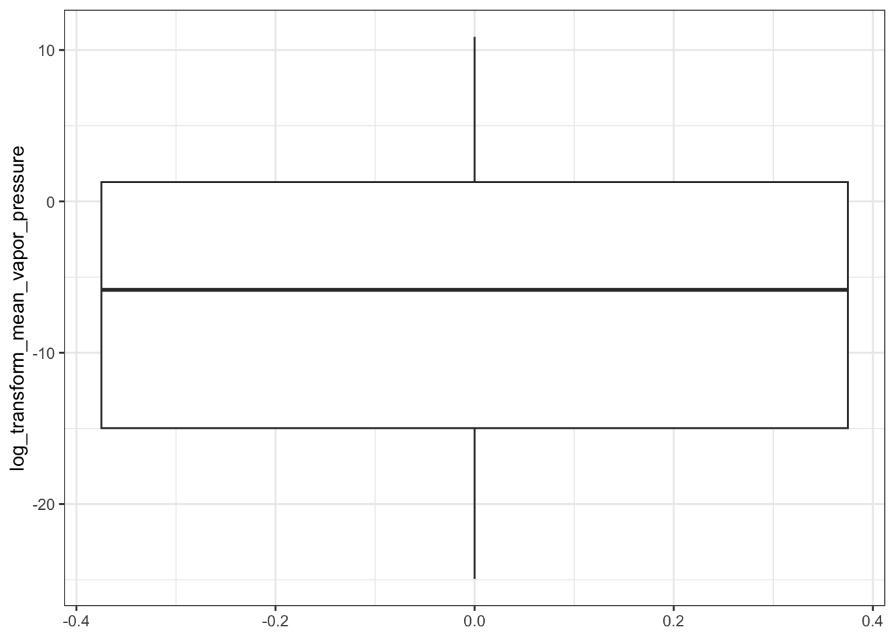
ggplot(ccl4_vapor_grouped, aes(propType, log_transform_mean_vapor_pressure)) +
geom_boxplot()
#> Warning: Removed 9 rows containing non-finite outside the scale range (`stat_boxplot()`).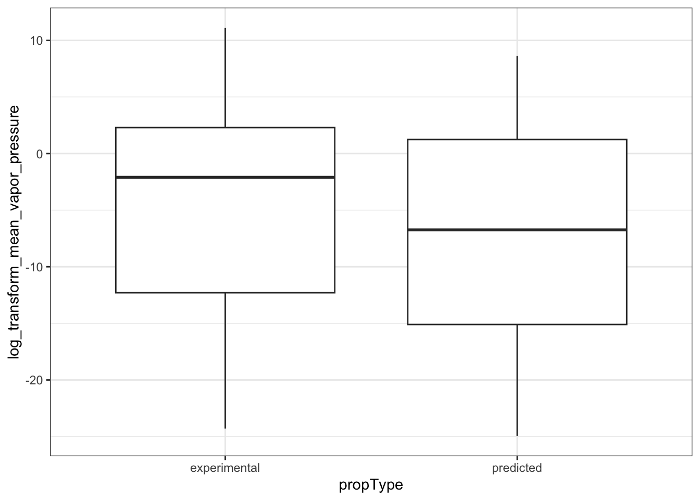
Then plot the NATA data.
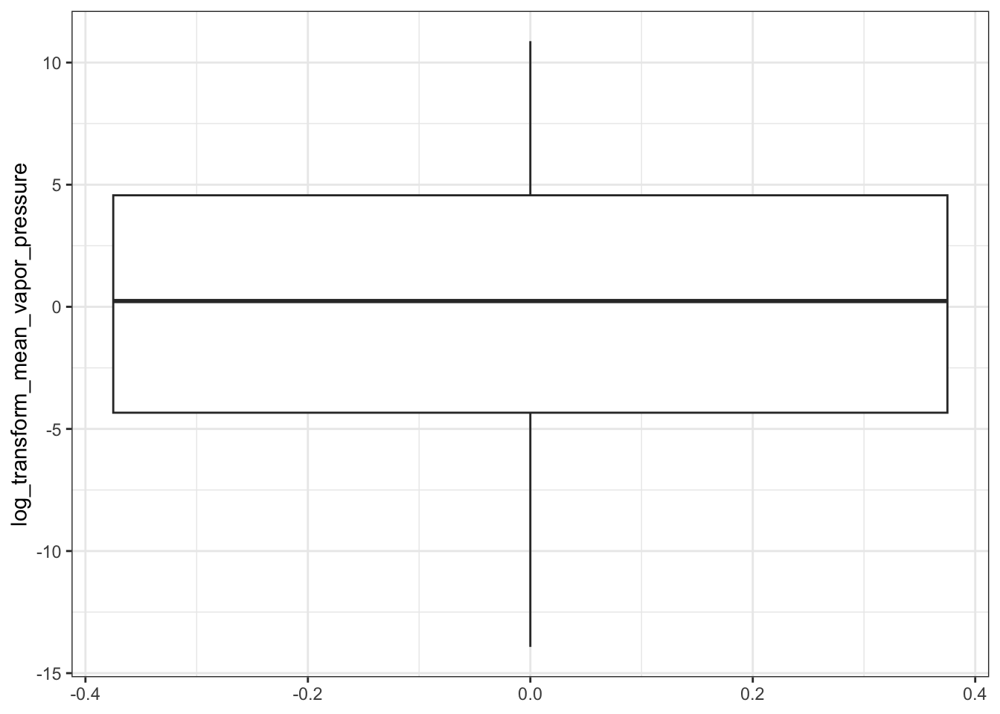
ggplot(natadb_vapor_grouped, aes(propType, log_transform_mean_vapor_pressure)) +
geom_boxplot()
#> Warning: Removed 3 rows containing non-finite outside the scale range (`stat_boxplot()`).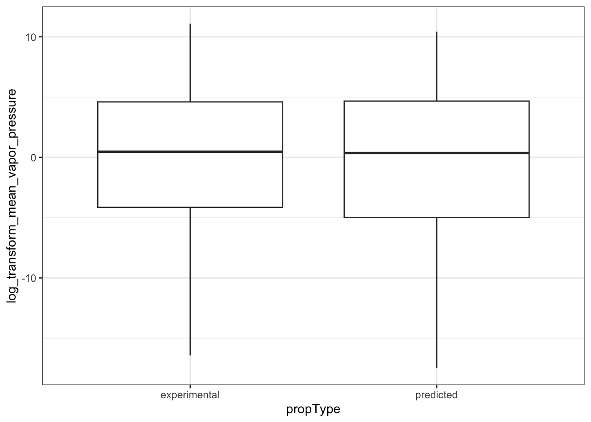
Finally, we compare both sets simultaneously. We add in a column to each data.table denoting to which data set the rows correspond and then combine the rows from both data sets together using the function rbind().
ccl4_vapor_grouped[, set := 'CCL4']
#> dtxsid propType mean_vapor_pressure log_transform_mean_vapor_pressure set
#> <char> <char> <num> <num> <char>
#> 1: DTXSID0020153 experimental 1.227658e+00 0.2051079 CCL4
#> 2: DTXSID0020153 predicted 1.502224e+00 0.4069466 CCL4
#> 3: DTXSID0020446 experimental 1.878700e-07 -15.4875156 CCL4
#> 4: DTXSID0020446 predicted 1.592261e-06 -13.3503554 CCL4
#> 5: DTXSID0020573 experimental 2.825234e-11 -24.2898450 CCL4
#> ---
#> 170: DTXSID9032113 experimental 1.301896e-08 -18.1568589 CCL4
#> 171: DTXSID9032113 predicted 3.547356e-08 -17.1544782 CCL4
#> 172: DTXSID9032119 predicted NaN NaN CCL4
#> 173: DTXSID9032329 experimental 8.494045e-07 -13.9787303 CCL4
#> 174: DTXSID9032329 predicted 6.692655e-07 -14.2170850 CCL4
natadb_vapor_grouped[, set := 'NATADB']
#> dtxsid propType mean_vapor_pressure log_transform_mean_vapor_pressure set
#> <char> <char> <num> <num> <char>
#> 1: DTXSID0020153 experimental 1.227658e+00 0.2051079 NATADB
#> 2: DTXSID0020153 predicted 1.502224e+00 0.4069466 NATADB
#> 3: DTXSID0020448 experimental 5.663676e+01 4.0366582 NATADB
#> 4: DTXSID0020448 predicted 4.764624e+01 3.8638038 NATADB
#> 5: DTXSID0020523 experimental 2.446884e-04 -8.3155250 NATADB
#> ---
#> 300: DTXSID9021138 experimental 3.359335e-03 -5.6960121 NATADB
#> 301: DTXSID9021138 predicted 3.622429e-03 -5.6206104 NATADB
#> 302: DTXSID9021261 experimental 7.500620e-04 -7.1953547 NATADB
#> 303: DTXSID9021261 predicted NaN NaN NATADB
#> 304: DTXSID9041522 predicted 6.434033e-05 -9.6513239 NATADB
all_vapor_grouped <- rbind(ccl4_vapor_grouped, natadb_vapor_grouped)Now we plot the combined data. First we color the boxplots based on the property type, with mean log transformed vapor pressure plotted for each data set and property type.
vapor_box <- ggplot(all_vapor_grouped,
aes(set, log_transform_mean_vapor_pressure)) +
geom_boxplot(aes(color = propType))
vapor_box
#> Warning: Removed 12 rows containing non-finite outside the scale range (`stat_boxplot()`).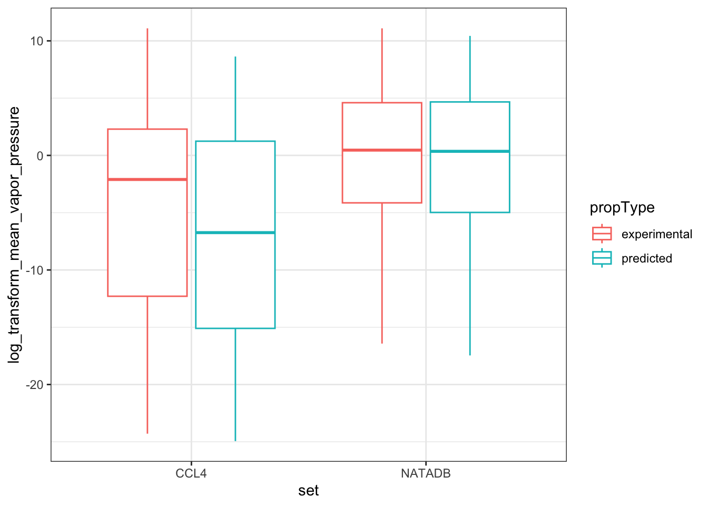
Next we color the boxplots based on the data set.
vapor <- ggplot(all_vapor_grouped, aes(log_transform_mean_vapor_pressure)) +
geom_boxplot((aes(color = set))) +
coord_flip()
vapor
#> Warning: Removed 12 rows containing non-finite outside the scale range (`stat_boxplot()`).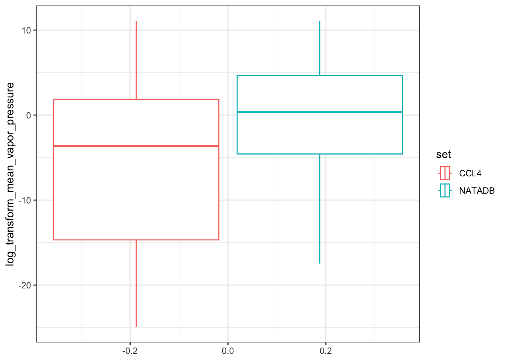
In the plots above, when we graph the data separated both by data set and property type as well as just by data set, we observe the general trend that the NATADB chemicals have a higher mean vapor pressure than the CCL4 chemicals.
We also explore Henry’s Law constant and boiling point in a similar fashion.
Group by DTXSID.
ccl4_hlc_all <- ccl4_phys_chem[propName %in% "Henry's Law Constant",
.(mean_hlc = sapply(.SD, function(t) {mean(t, na.rm = TRUE)})),
.SDcols = c('propValue'), by = .(dtxsid)]
natadb_hlc_all <- natadb_phys_chem[propName %in% "Henry's Law Constant",
.(mean_hlc = sapply(.SD, function(t) {mean(t, na.rm = TRUE)})),
.SDcols = c('propValue'), by = .(dtxsid)]Group by DTXSID and property type.
ccl4_hlc_grouped <- ccl4_phys_chem[propName %in% "Henry's Law Constant",
.(mean_hlc = sapply(.SD, function(t) {mean(t, na.rm = TRUE)})),
.SDcols = c('propValue'),
by = .(dtxsid, propType)]
natadb_hlc_grouped <- natadb_phys_chem[propName %in% "Henry's Law Constant",
.(mean_hlc = sapply(.SD, function(t) {mean(t, na.rm = TRUE)})),
.SDcols = c('propValue'),
by = .(dtxsid, propType)]Examine summary statistics.
summary(ccl4_hlc_all)
#> dtxsid mean_hlc
#> Length:90 Min. :0.000e+00
#> Class :character 1st Qu.:1.000e-08
#> Mode :character Median :1.100e-06
#> Mean :2.102e-02
#> 3rd Qu.:9.665e-05
#> Max. :1.501e+00
summary(ccl4_hlc_grouped)
#> dtxsid propType mean_hlc
#> Length:157 Length:157 Min. :0.000e+00
#> Class :character Class :character 1st Qu.:1.000e-08
#> Mode :character Mode :character Median :1.460e-06
#> Mean :1.667e-02
#> 3rd Qu.:1.291e-04
#> Max. :1.547e+00
#> NA's :2
summary(natadb_hlc_all)
#> dtxsid mean_hlc
#> Length:152 Min. : 0.0000
#> Class :character 1st Qu.: 0.0000
#> Mode :character Median : 0.0001
#> Mean : 25.1947
#> 3rd Qu.: 0.0024
#> Max. :3824.2932
summary(natadb_hlc_grouped)
#> dtxsid propType mean_hlc
#> Length:274 Length:274 Min. : 0.0000
#> Class :character Class :character 1st Qu.: 0.0000
#> Mode :character Mode :character Median : 0.0001
#> Mean : 14.8546
#> 3rd Qu.: 0.0024
#> Max. :4063.3114Again, we log transform the data as it covers several orders of magnitude. We expect these values to be positive in general so we go ahead with these transformations.
ccl4_hlc_all[, log_transform_mean_hlc := log(mean_hlc)]
#> dtxsid mean_hlc log_transform_mean_hlc
#> <char> <num> <num>
#> 1: DTXSID0020153 7.608625e-04 -7.1810579
#> 2: DTXSID0020446 5.917914e-08 -16.6426967
#> 3: DTXSID0020573 3.715352e-06 -12.5030371
#> 4: DTXSID0020600 1.493028e-04 -8.8095341
#> 5: DTXSID0020814 2.041738e-07 -15.4042943
#> 6: DTXSID0021464 1.678272e-08 -17.9029160
#> 7: DTXSID0021541 9.965029e-03 -4.6086735
#> 8: DTXSID0021917 1.501363e+00 0.4063731
#> 9: DTXSID0024052 9.335794e-11 -23.0945802
#> 10: DTXSID0032578 5.708485e-07 -14.3761419
#> 11: DTXSID1020437 5.910373e-03 -5.1310463
#> 12: DTXSID1021407 9.105946e-07 -13.9091681
#> 13: DTXSID1021409 4.290971e-07 -14.6615827
#> 14: DTXSID1021740 1.284597e-05 -11.2624803
#> 15: DTXSID1021798 2.071620e-06 -13.0871795
#> 16: DTXSID1024174 1.509734e-06 -13.4035773
#> 17: DTXSID1024338 3.665514e-09 -19.4242972
#> 18: DTXSID1026164 1.978642e-06 -13.1330997
#> 19: DTXSID1037484 1.202264e-09 -20.5390590
#> 20: DTXSID1037486 1.174898e-09 -20.5620849
#> 21: DTXSID1037567 4.365158e-10 -21.5521965
#> 22: DTXSID2020684 8.526210e-06 -11.6723656
#> 23: DTXSID2021028 1.677186e-04 -8.6932227
#> 24: DTXSID2021317 2.391691e-03 -6.0357547
#> 25: DTXSID2021731 1.585469e-05 -11.0520451
#> 26: DTXSID2022333 1.488889e-02 -4.2071400
#> 27: DTXSID2031083 5.623413e-11 -23.6014972
#> 28: DTXSID2037506 3.176631e-09 -19.5674445
#> 29: DTXSID2052156 3.801894e-10 -21.6903516
#> 30: DTXSID3020203 2.795640e-01 -1.2745241
#> 31: DTXSID3020702 6.168270e-07 -14.2986772
#> 32: DTXSID3020833 6.305823e-04 -7.3688669
#> 33: DTXSID3020964 4.483844e-05 -10.0124448
#> 34: DTXSID3021857 2.089296e-03 -6.1709280
#> 35: DTXSID3024366 1.476024e-04 -8.8209882
#> 36: DTXSID3024869 6.240907e-07 -14.2869701
#> 37: DTXSID3031864 1.819701e-11 -24.7297639
#> 38: DTXSID3032464 2.241663e-06 -13.0082925
#> 39: DTXSID3034458 8.128305e-09 -18.6279134
#> 40: DTXSID3042219 1.016034e-02 -4.5892630
#> 41: DTXSID3074313 2.041738e-11 -24.6146346
#> 42: DTXSID4020533 5.273916e-06 -12.1527374
#> 43: DTXSID4021503 1.902843e-03 -6.2644060
#> 44: DTXSID4022361 3.267786e-08 -17.2365681
#> 45: DTXSID4022367 1.047129e-09 -20.6772141
#> 46: DTXSID4022448 2.132508e-08 -17.6633821
#> 47: DTXSID4022991 1.230269e-11 -25.1212034
#> 48: DTXSID4032611 3.812004e-06 -12.4773554
#> 49: DTXSID4034948 5.061593e-09 -19.1015846
#> 50: DTXSID5020023 1.844509e-04 -8.5981272
#> 51: DTXSID5020576 9.332543e-08 -16.1871732
#> 52: DTXSID5020601 2.032776e-07 -15.4086934
#> 53: DTXSID5021207 8.762638e-05 -9.3424285
#> 54: DTXSID5024182 7.477348e-03 -4.8958771
#> 55: DTXSID5039224 7.530076e-05 -9.4940203
#> 56: DTXSID50867064 1.174898e-08 -18.2594998
#> 57: DTXSID6020301 3.266831e-02 -3.4213498
#> 58: DTXSID6020856 4.568074e-04 -7.6912486
#> 59: DTXSID6021030 7.565670e-04 -7.1867194
#> 60: DTXSID6021032 8.403150e-05 -9.3843188
#> 61: DTXSID6022422 5.360194e-08 -16.7416806
#> 62: DTXSID6024177 1.285277e-07 -15.8671213
#> 63: DTXSID6037483 5.495409e-10 -21.3219380
#> 64: DTXSID6037485 5.623413e-10 -21.2989121
#> 65: DTXSID6037568 8.317638e-09 -18.6048876
#> 66: DTXSID7020005 2.450917e-08 -17.5242187
#> 67: DTXSID7020637 4.882250e-07 -14.5324894
#> 68: DTXSID7021029 1.281830e-05 -11.2646365
#> 69: DTXSID7024241 1.297787e-06 -13.5548503
#> 70: DTXSID7047433 6.760830e-08 -16.5095351
#> 71: DTXSID8020044 4.981622e-06 -12.2097550
#> 72: DTXSID8020090 7.725040e-03 -4.8632882
#> 73: DTXSID8020597 2.350772e-07 -15.2633520
#> 74: DTXSID8020832 1.144615e-02 -4.4701020
#> 75: DTXSID8021062 3.866425e-06 -12.4631803
#> 76: DTXSID8022292 1.451240e-06 -13.4430924
#> 77: DTXSID8022377 3.715352e-06 -12.5030371
#> 78: DTXSID8023846 1.632925e-09 -20.2328929
#> 79: DTXSID8023848 1.032272e-08 -18.3889189
#> 80: DTXSID8025541 4.168694e-07 -14.6904929
#> 81: DTXSID8031865 9.965663e-05 -9.2137800
#> 82: DTXSID9020243 1.907474e-06 -13.1697307
#> 83: DTXSID9021390 3.108242e-04 -8.0762831
#> 84: DTXSID9021427 2.270435e-07 -15.2981240
#> 85: DTXSID9022366 5.128614e-09 -19.0884304
#> 86: DTXSID9023380 4.168694e-09 -19.2956631
#> 87: DTXSID9023914 5.003672e-11 -23.7182639
#> 88: DTXSID9024142 1.345777e-06 -13.5185387
#> 89: DTXSID9032113 7.734149e-08 -16.3750352
#> 90: DTXSID9032329 5.382367e-07 -14.4349674
#> dtxsid mean_hlc log_transform_mean_hlc
#> <char> <num> <num>
ccl4_hlc_grouped[, log_transform_mean_hlc := log(mean_hlc)]
#> dtxsid propType mean_hlc log_transform_mean_hlc
#> <char> <char> <num> <num>
#> 1: DTXSID0020153 experimental 4.870692e-04 -7.627104
#> 2: DTXSID0020153 predicted 2.951209e-03 -5.825540
#> 3: DTXSID0020446 experimental 7.359553e-08 -16.424682
#> 4: DTXSID0020446 predicted 1.513561e-09 -20.308801
#> 5: DTXSID0020573 predicted 3.715352e-06 -12.503037
#> ---
#> 153: DTXSID9024142 predicted 2.691535e-06 -12.825399
#> 154: DTXSID9032113 experimental 1.121455e-10 -22.911224
#> 155: DTXSID9032113 predicted 3.090295e-07 -14.989829
#> 156: DTXSID9032329 experimental 1.490847e-08 -18.021336
#> 157: DTXSID9032329 predicted 1.584893e-06 -13.354994
natadb_hlc_all[, log_transform_mean_hlc := log(mean_hlc)]
#> dtxsid mean_hlc log_transform_mean_hlc
#> <char> <num> <num>
#> 1: DTXSID0020153 7.608625e-04 -7.181058
#> 2: DTXSID0020448 2.710185e-03 -5.910739
#> 3: DTXSID0020523 1.068282e-07 -16.052044
#> 4: DTXSID0020529 2.793630e-07 -15.090754
#> 5: DTXSID0020600 1.493028e-04 -8.809534
#> ---
#> 148: DTXSID9020293 2.951209e-06 -12.733296
#> 149: DTXSID9020299 9.828547e-08 -16.135390
#> 150: DTXSID9020827 1.813010e-06 -13.220522
#> 151: DTXSID9021138 5.623413e-08 -16.693742
#> 152: DTXSID9041522 8.912509e-06 -11.628055
natadb_hlc_grouped[, log_transform_mean_hlc := log(mean_hlc)]
#> dtxsid propType mean_hlc log_transform_mean_hlc
#> <char> <char> <num> <num>
#> 1: DTXSID0020153 experimental 4.870692e-04 -7.627104
#> 2: DTXSID0020153 predicted 2.951209e-03 -5.825540
#> 3: DTXSID0020448 experimental 2.707002e-03 -5.911913
#> 4: DTXSID0020448 predicted 2.818383e-03 -5.871592
#> 5: DTXSID0020523 experimental 1.107746e-07 -16.015769
#> ---
#> 270: DTXSID9020299 predicted 4.897788e-10 -21.437067
#> 271: DTXSID9020827 experimental 2.134778e-06 -13.057148
#> 272: DTXSID9020827 predicted 2.041738e-07 -15.404294
#> 273: DTXSID9021138 predicted 5.623413e-08 -16.693742
#> 274: DTXSID9041522 predicted 8.912509e-06 -11.628055We compare both sets simultaneously. We add in a column to each data.table denoting to which set the rows correspond and then rbind() the rows together.
Label and combine data.
ccl4_hlc_grouped[, set := 'CCL4']
#> dtxsid propType mean_hlc log_transform_mean_hlc set
#> <char> <char> <num> <num> <char>
#> 1: DTXSID0020153 experimental 4.870692e-04 -7.627104 CCL4
#> 2: DTXSID0020153 predicted 2.951209e-03 -5.825540 CCL4
#> 3: DTXSID0020446 experimental 7.359553e-08 -16.424682 CCL4
#> 4: DTXSID0020446 predicted 1.513561e-09 -20.308801 CCL4
#> 5: DTXSID0020573 predicted 3.715352e-06 -12.503037 CCL4
#> ---
#> 153: DTXSID9024142 predicted 2.691535e-06 -12.825399 CCL4
#> 154: DTXSID9032113 experimental 1.121455e-10 -22.911224 CCL4
#> 155: DTXSID9032113 predicted 3.090295e-07 -14.989829 CCL4
#> 156: DTXSID9032329 experimental 1.490847e-08 -18.021336 CCL4
#> 157: DTXSID9032329 predicted 1.584893e-06 -13.354994 CCL4
natadb_hlc_grouped[, set := 'NATADB']
#> dtxsid propType mean_hlc log_transform_mean_hlc set
#> <char> <char> <num> <num> <char>
#> 1: DTXSID0020153 experimental 4.870692e-04 -7.627104 NATADB
#> 2: DTXSID0020153 predicted 2.951209e-03 -5.825540 NATADB
#> 3: DTXSID0020448 experimental 2.707002e-03 -5.911913 NATADB
#> 4: DTXSID0020448 predicted 2.818383e-03 -5.871592 NATADB
#> 5: DTXSID0020523 experimental 1.107746e-07 -16.015769 NATADB
#> ---
#> 270: DTXSID9020299 predicted 4.897788e-10 -21.437067 NATADB
#> 271: DTXSID9020827 experimental 2.134778e-06 -13.057148 NATADB
#> 272: DTXSID9020827 predicted 2.041738e-07 -15.404294 NATADB
#> 273: DTXSID9021138 predicted 5.623413e-08 -16.693742 NATADB
#> 274: DTXSID9041522 predicted 8.912509e-06 -11.628055 NATADB
all_hlc_grouped <- rbind(ccl4_hlc_grouped, natadb_hlc_grouped)Plot data. Some rows are removed due to transformations above that result in non-valid values.
hlc_box <- ggplot(all_hlc_grouped, aes(set, log_transform_mean_hlc)) +
geom_boxplot(aes(color = propType))
hlc_box
#> Warning: Removed 2 rows containing non-finite outside the scale range (`stat_boxplot()`).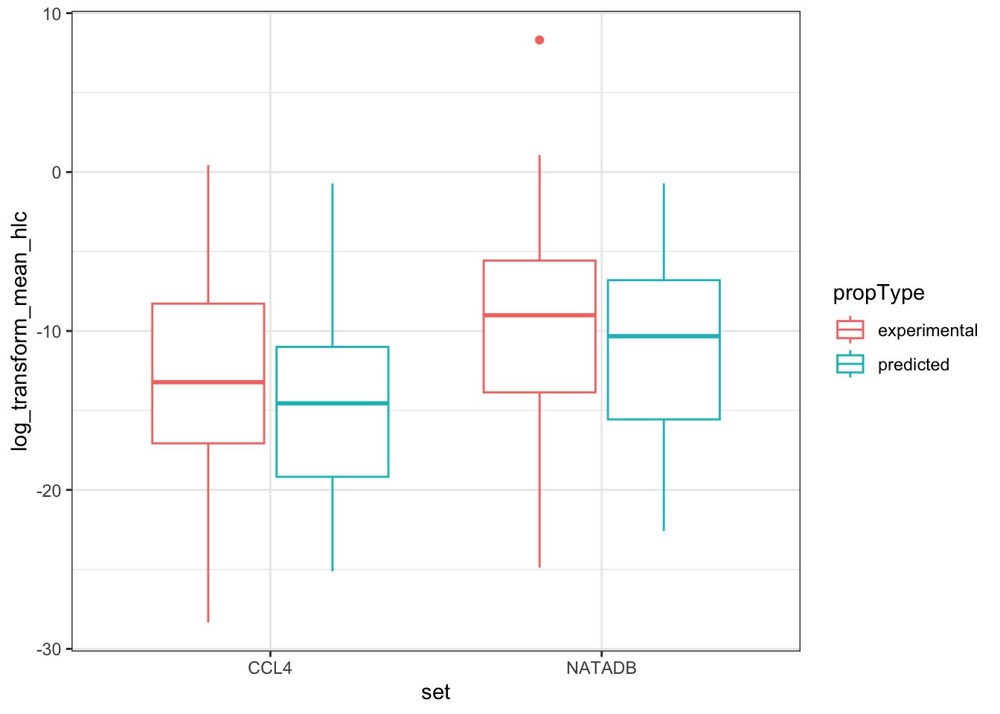
hlc <- ggplot(all_hlc_grouped, aes(log_transform_mean_hlc)) +
geom_boxplot(aes(color = set)) +
coord_flip()
hlc
#> Warning: Removed 2 rows containing non-finite outside the scale range (`stat_boxplot()`).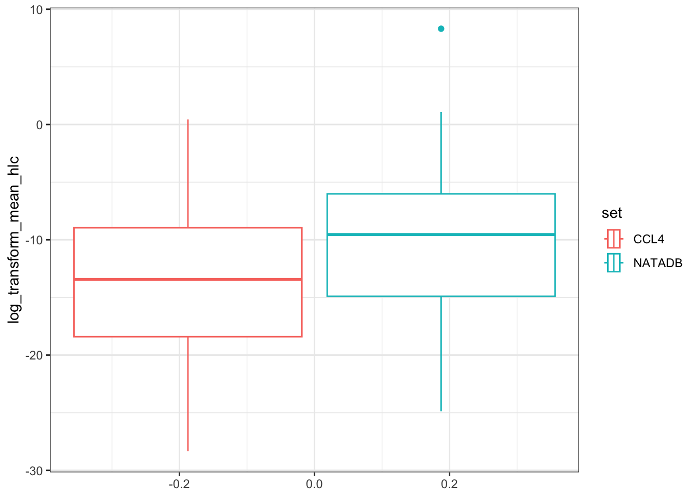
Again, we observe that in both grouping by propType and aggregating all results together by data set, that the chemicals in NATADB have a generally higher mean Henry’s Law Constant value than those in CCL4.
Finally, we consider boiling point.
Group by DTXSID.
ccl4_boiling_all <- ccl4_phys_chem[propName %in% 'Boiling Point',
.(mean_boiling_point = sapply(.SD, function(t) {mean(t, na.rm = TRUE)})),
.SDcols = c('propValue'), by = .(dtxsid)]
natadb_boiling_all <- natadb_phys_chem[propName %in% 'Boiling Point',
.(mean_boiling_point =
sapply(.SD, function(t) {mean(t, na.rm = TRUE)})),
.SDcols = c('propValue'), by = .(dtxsid)]Group by DTXSID and property type.
ccl4_boiling_grouped <- ccl4_phys_chem[propName %in% 'Boiling Point',
.(mean_boiling_point =
sapply(.SD, function(t) {mean(t, na.rm = TRUE)})),
.SDcols = c('propValue'),
by = .(dtxsid, propType)]
natadb_boiling_grouped <- natadb_phys_chem[propName %in% 'Boiling Point',
.(mean_boiling_point =
sapply(.SD, function(t) {mean(t, na.rm = TRUE)})),
.SDcols = c('propValue'),
by = .(dtxsid, propType)]Calculate summary statistics.
summary(ccl4_boiling_all)
#> dtxsid mean_boiling_point
#> Length:99 Min. : -37.75
#> Class :character 1st Qu.: 173.91
#> Mode :character Median : 268.00
#> Mean : 372.73
#> 3rd Qu.: 378.49
#> Max. :4745.20
#> NA's :2
summary(ccl4_boiling_grouped)
#> dtxsid propType mean_boiling_point
#> Length:158 Length:158 Min. : -40.71
#> Class :character Class :character 1st Qu.: 117.84
#> Mode :character Mode :character Median : 210.00
#> Mean : 298.89
#> 3rd Qu.: 348.13
#> Max. :4745.20
#> NA's :7
summary(natadb_boiling_all)
#> dtxsid mean_boiling_point
#> Length:155 Min. :-87.60
#> Class :character 1st Qu.: 79.91
#> Mode :character Median :181.46
#> Mean :178.28
#> 3rd Qu.:266.80
#> Max. :685.00
summary(natadb_boiling_grouped)
#> dtxsid propType mean_boiling_point
#> Length:298 Length:298 Min. :-87.64
#> Class :character Class :character 1st Qu.: 76.61
#> Mode :character Mode :character Median :177.59
#> Mean :171.41
#> 3rd Qu.:255.68
#> Max. :685.00
#> NA's :3Since some of the boiling point values have negative values, we cannot log transform these values. If we try, as you will see below, there will be warnings of NaNs produced.
ccl4_boiling_all[, log_transform := log(mean_boiling_point)]
#> Warning in log(mean_boiling_point): NaNs produced
#> dtxsid mean_boiling_point log_transform
#> <char> <num> <num>
#> 1: DTXSID0020153 178.578246 5.185027
#> 2: DTXSID0020446 309.446204 5.734784
#> 3: DTXSID0020573 402.793157 5.998423
#> 4: DTXSID0020600 12.425270 2.519732
#> 5: DTXSID0020814 394.526706 5.977687
#> 6: DTXSID0021464 177.000000 5.176150
#> 7: DTXSID0021541 -21.764660 NaN
#> 8: DTXSID0021917 69.123815 4.235899
#> 9: DTXSID0024052 386.788500 5.957878
#> 10: DTXSID0024341 193.018519 5.262786
#> 11: DTXSID0032578 382.420000 5.946519
#> 12: DTXSID1020437 57.462613 4.051135
#> 13: DTXSID1021407 247.544453 5.511590
#> 14: DTXSID1021409 428.540000 6.060384
#> 15: DTXSID1021740 117.737019 4.768453
#> 16: DTXSID1021798 237.494012 5.470142
#> 17: DTXSID1024174 320.600667 5.770196
#> 18: DTXSID1024207 4745.200000 8.464889
#> 19: DTXSID1024338 265.000000 5.579730
#> 20: DTXSID1026164 202.214627 5.309330
#> 21: DTXSID1031040 2870.000000 7.962067
#> 22: DTXSID1037484 359.716089 5.885315
#> 23: DTXSID1037486 360.471401 5.887413
#> 24: DTXSID1037567 359.067259 5.883510
#> 25: DTXSID2020684 272.058098 5.606016
#> 26: DTXSID2021028 177.407265 5.178448
#> 27: DTXSID2021317 130.561056 4.871841
#> 28: DTXSID2021731 68.940190 4.233239
#> 29: DTXSID2022333 173.914044 5.158561
#> 30: DTXSID2024169 1962.111111 7.581776
#> 31: DTXSID2031083 265.000000 5.579730
#> 32: DTXSID2037506 322.058999 5.774735
#> 33: DTXSID2040282 NaN NaN
#> 34: DTXSID2052156 413.356503 6.024310
#> 35: DTXSID3020203 -2.284146 NaN
#> 36: DTXSID3020702 115.631944 4.750412
#> 37: DTXSID3020833 56.744806 4.038564
#> 38: DTXSID3020964 210.912673 5.351444
#> 39: DTXSID3021857 281.000000 5.638355
#> 40: DTXSID3024366 88.996924 4.488602
#> 41: DTXSID3024869 207.710000 5.336143
#> 42: DTXSID3031864 242.988116 5.493013
#> 43: DTXSID3032464 382.914500 5.947812
#> 44: DTXSID3034458 404.806000 6.003408
#> 45: DTXSID3042219 160.235980 5.076648
#> 46: DTXSID3073137 NaN NaN
#> 47: DTXSID3074313 423.281500 6.048037
#> 48: DTXSID4020533 101.194672 4.617046
#> 49: DTXSID4021503 67.649123 4.214334
#> 50: DTXSID4022361 362.481861 5.892974
#> 51: DTXSID4022367 384.354700 5.951566
#> 52: DTXSID4022448 343.803404 5.840070
#> 53: DTXSID4022991 588.505984 6.377587
#> 54: DTXSID4032611 280.169000 5.635393
#> 55: DTXSID4034948 329.000000 5.796058
#> 56: DTXSID5020023 52.663575 3.963924
#> 57: DTXSID5020576 410.106570 6.016417
#> 58: DTXSID5020601 303.273281 5.714634
#> 59: DTXSID5021207 36.671712 3.602006
#> 60: DTXSID5024182 124.424454 4.823699
#> 61: DTXSID5039224 21.121067 3.050271
#> 62: DTXSID50867064 263.260860 5.573145
#> 63: DTXSID6020301 -37.747068 NaN
#> 64: DTXSID6020856 201.604415 5.306307
#> 65: DTXSID6021030 230.209089 5.438988
#> 66: DTXSID6021032 207.304345 5.334188
#> 67: DTXSID6022422 396.072602 5.981598
#> 68: DTXSID6024177 223.850000 5.410976
#> 69: DTXSID6037483 348.558155 5.853805
#> 70: DTXSID6037485 347.701654 5.851345
#> 71: DTXSID6037568 362.244245 5.892319
#> 72: DTXSID7020005 213.701630 5.364581
#> 73: DTXSID7020215 268.000000 5.590987
#> 74: DTXSID7020637 -10.271938 NaN
#> 75: DTXSID7021029 153.627548 5.034531
#> 76: DTXSID7024241 365.692761 5.901794
#> 77: DTXSID7047433 391.174129 5.969153
#> 78: DTXSID8020044 95.670634 4.560911
#> 79: DTXSID8020090 184.656010 5.218495
#> 80: DTXSID8020597 192.848532 5.261905
#> 81: DTXSID8020832 4.547273 1.514528
#> 82: DTXSID8021062 212.429837 5.358612
#> 83: DTXSID8022292 369.819083 5.913014
#> 84: DTXSID8022377 399.240876 5.989565
#> 85: DTXSID8023846 287.000000 5.659482
#> 86: DTXSID8023848 300.446797 5.705271
#> 87: DTXSID8025541 339.798000 5.828351
#> 88: DTXSID8031865 190.626163 5.250314
#> 89: DTXSID8052483 2700.000000 7.901007
#> 90: DTXSID9020243 308.081500 5.730364
#> 91: DTXSID9021390 155.399500 5.045999
#> 92: DTXSID9021427 182.970974 5.209328
#> 93: DTXSID9022366 414.696312 6.027546
#> 94: DTXSID9023380 378.489580 5.936189
#> 95: DTXSID9023914 359.534841 5.884811
#> 96: DTXSID9024142 427.009000 6.056805
#> 97: DTXSID9032113 381.238490 5.943425
#> 98: DTXSID9032119 1089.950000 6.993887
#> 99: DTXSID9032329 436.091500 6.077852
#> dtxsid mean_boiling_point log_transform
#> <char> <num> <num>
ccl4_boiling_grouped[, log_transform := log(mean_boiling_point)]
#> Warning in log(mean_boiling_point): NaNs produced
#> dtxsid propType mean_boiling_point log_transform
#> <char> <char> <num> <num>
#> 1: DTXSID0020153 experimental 178.4519 5.184319
#> 2: DTXSID0020153 predicted 178.9574 5.187148
#> 3: DTXSID0020446 experimental 270.5000 5.600272
#> 4: DTXSID0020446 predicted 335.4103 5.815355
#> 5: DTXSID0020573 experimental 413.4500 6.024537
#> ---
#> 154: DTXSID9024142 predicted 501.5135 6.217631
#> 155: DTXSID9032113 predicted 381.2385 5.943425
#> 156: DTXSID9032119 experimental 1089.9500 6.993887
#> 157: DTXSID9032119 predicted NaN NaN
#> 158: DTXSID9032329 predicted 436.0915 6.077852
natadb_boiling_all[, log_transform := log(mean_boiling_point)]
#> Warning in log(mean_boiling_point): NaNs produced
#> dtxsid mean_boiling_point log_transform
#> <char> <num> <num>
#> 1: DTXSID0020153 178.57825 5.185027
#> 2: DTXSID0020448 96.11380 4.565533
#> 3: DTXSID0020523 329.20847 5.796691
#> 4: DTXSID0020529 300.77573 5.706365
#> 5: DTXSID0020600 12.42527 2.519732
#> ---
#> 151: DTXSID9020299 393.19798 5.974313
#> 152: DTXSID9020827 371.68218 5.918039
#> 153: DTXSID9021138 267.65926 5.589715
#> 154: DTXSID9021261 685.00000 6.529419
#> 155: DTXSID9041522 337.07591 5.820308
natadb_boiling_grouped[, log_transform := log(mean_boiling_point)]
#> Warning in log(mean_boiling_point): NaNs produced
#> dtxsid propType mean_boiling_point log_transform
#> <char> <char> <num> <num>
#> 1: DTXSID0020153 experimental 178.45185 5.184319
#> 2: DTXSID0020153 predicted 178.95743 5.187148
#> 3: DTXSID0020448 experimental 96.07302 4.565108
#> 4: DTXSID0020448 predicted 96.30413 4.567511
#> 5: DTXSID0020523 predicted 329.20847 5.796691
#> ---
#> 294: DTXSID9021138 predicted 266.71606 5.586185
#> 295: DTXSID9021261 experimental 685.00000 6.529419
#> 296: DTXSID9021261 predicted NaN NaN
#> 297: DTXSID9041522 experimental 340.00000 5.828946
#> 298: DTXSID9041522 predicted 332.20241 5.805744We compare both sets simultaneously. We add in a column to each data.table denoting to which set the rows correspond and then rbind() the rows together. We use the values as is rather than transforming them.
Label and combine data.
ccl4_boiling_grouped[, set := 'CCL4']
#> dtxsid propType mean_boiling_point log_transform set
#> <char> <char> <num> <num> <char>
#> 1: DTXSID0020153 experimental 178.4519 5.184319 CCL4
#> 2: DTXSID0020153 predicted 178.9574 5.187148 CCL4
#> 3: DTXSID0020446 experimental 270.5000 5.600272 CCL4
#> 4: DTXSID0020446 predicted 335.4103 5.815355 CCL4
#> 5: DTXSID0020573 experimental 413.4500 6.024537 CCL4
#> ---
#> 154: DTXSID9024142 predicted 501.5135 6.217631 CCL4
#> 155: DTXSID9032113 predicted 381.2385 5.943425 CCL4
#> 156: DTXSID9032119 experimental 1089.9500 6.993887 CCL4
#> 157: DTXSID9032119 predicted NaN NaN CCL4
#> 158: DTXSID9032329 predicted 436.0915 6.077852 CCL4
natadb_boiling_grouped[, set := 'NATADB']
#> dtxsid propType mean_boiling_point log_transform set
#> <char> <char> <num> <num> <char>
#> 1: DTXSID0020153 experimental 178.45185 5.184319 NATADB
#> 2: DTXSID0020153 predicted 178.95743 5.187148 NATADB
#> 3: DTXSID0020448 experimental 96.07302 4.565108 NATADB
#> 4: DTXSID0020448 predicted 96.30413 4.567511 NATADB
#> 5: DTXSID0020523 predicted 329.20847 5.796691 NATADB
#> ---
#> 294: DTXSID9021138 predicted 266.71606 5.586185 NATADB
#> 295: DTXSID9021261 experimental 685.00000 6.529419 NATADB
#> 296: DTXSID9021261 predicted NaN NaN NATADB
#> 297: DTXSID9041522 experimental 340.00000 5.828946 NATADB
#> 298: DTXSID9041522 predicted 332.20241 5.805744 NATADB
all_boiling_grouped <- rbind(ccl4_boiling_grouped, natadb_boiling_grouped)Plot the data.
boiling_box <- ggplot(all_boiling_grouped, aes(set, mean_boiling_point)) +
geom_boxplot(aes(color = propType))
boiling_box
#> Warning: Removed 10 rows containing non-finite outside the scale range (`stat_boxplot()`).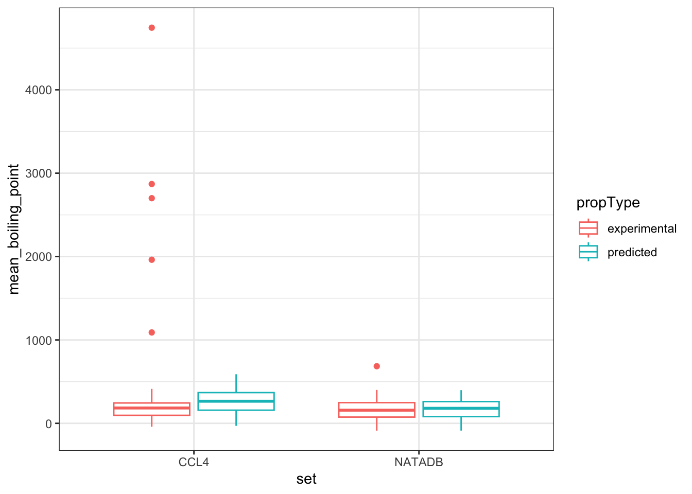
boiling <- ggplot(all_boiling_grouped, aes(mean_boiling_point)) +
geom_boxplot(aes(color = set)) +
coord_flip()
boiling
#> Warning: Removed 10 rows containing non-finite outside the scale range (`stat_boxplot()`).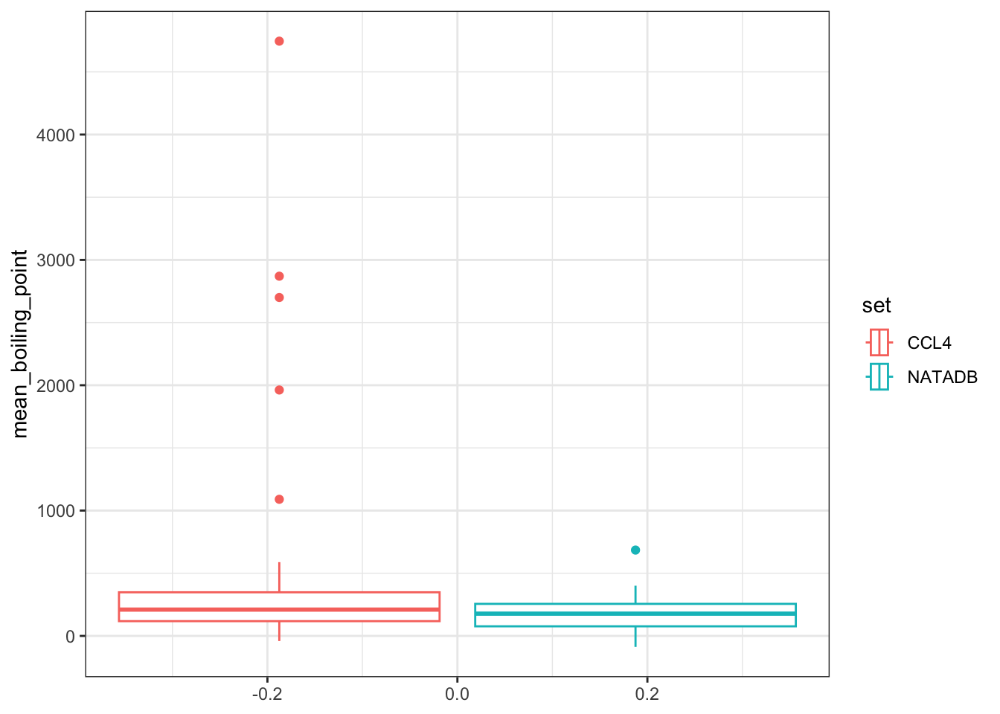
A visual inspection of this set of graphs is not as clear as in the previous cases. Note that the experimental values for each data set tend to be higher than the predicted. The mean of CCL4, by predicted and experimental appears to be greater than the corresponding means for NATADB, as does the overall mean, but the interquartile ranges of these different groupings yield slightly different results. This gives us a sense that the picture for boiling point is not as clear cut between experimental and predicted for these two data sets as it was in the previous cases of physico-chemical properties we investigated.
Answer to Environmental Health Question 2
Through inspecting the last several plots, we can answer Environmental Health Question 2: The physico-chemical property data are reported with both experimental and predicted values present for many chemicals. Are there differences between the mean predicted and experimental results for a variety of physico-chemical properties?
Answer: There are indeed differences between the mean values of various physico-chemical properties when grouped by predicted or experimental. In the case of “Vapor Pressure”, the means of experimental values tend to be a little lower than predicted, though they are much closer in the case of NATADB than CCL4. The trend of lower predicted means compared to experimental means is more clearly demonstrated for “Henry’s Law Constant” values in both data sets. In the case of “Boiling Point”, the experimental values are greater than the predicted values, though this is much more pronounced in CCL4 while the set of means for NATADB are again fairly close.
Hazard Data: Genotoxicity
Now, having examined some of the distributions of the physico-chemical properties of the two lists, aggregated between predicted and experimental, we move towards learning more about these chemicals beyond physico-chemical properties. Specifically, we will examine their genotoxicity.
Using the standard CompTox Chemicals Dashboard approach to access genotoxicity, one would again navigate to the individual chemical page
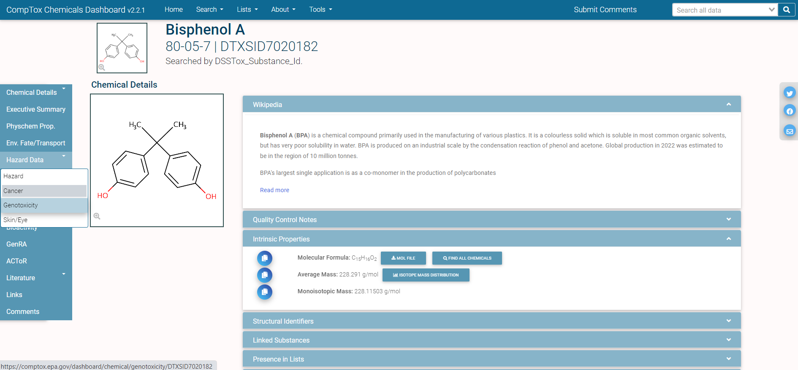
Once one navigates to the genotoxicity tab highlighted in the previous page, the following is displayed as seen here:
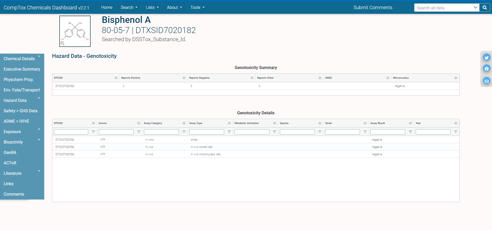
This page includes two sets of information, the first of which provides a summary of available genotoxicity data while the second provides the individual reports and samples of such data.
We again use the CTX APIs to streamline the process of retrieving this information in a programmatic fashion. To this end, we will use the genotoxicity endpoints found within the Hazard endpoints of the CTX APIs. Pictured below is the particular set of genotoxicity resources available in the Hazard endpoints of the CTX APIs.
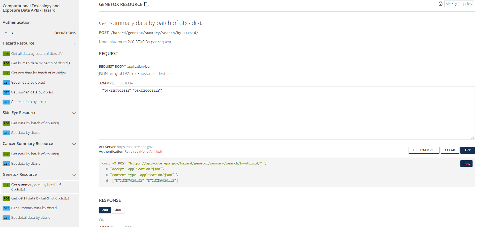
There are both summary and detail resources, reflecting the information one can find on the CompTox Chemicals Dashboard Genotoxicity page for a given chemical.
To access the genetox endpoint, we will use the function get_genetox_summary(). Since we have a list of chemicals, rather than searching individually for each chemical, we use the batch search version of the function, named get_genetox_summary_batch(). We will examine this and then access the details.
Grab the data using the APIs.
ccl4_genotox <- get_genetox_summary_batch(DTXSID = ccl4$dtxsid)
natadb_genetox <- get_genetox_summary_batch(DTXSID = natadb$dtxsid)Examine the dimensions.
Examine the column names and data from the first six chemicals with genetox data from CCL4.
colnames(ccl4_genotox)
#> [1] "id" "dtxsid" "reportsPositive" "reportsNegative" "reportsOther"
#> [6] "ames" "micronucleus" "clowderDocId" "genetoxCall" "genetoxSummaryId"
head(ccl4_genotox)
#> id dtxsid reportsPositive reportsNegative reportsOther ames micronucleus
#> <int> <char> <int> <int> <int> <char> <char>
#> 1: 92 DTXSID0020153 20 5 1 positive positive
#> 2: 4399 DTXSID0020446 0 8 0 negative negative
#> 3: 930 DTXSID0020573 3 9 0 negative negative
#> 4: 93 DTXSID0020600 20 0 1 positive positive
#> 5: 2079 DTXSID0020814 1 0 0 <NA> <NA>
#> 6: 320 DTXSID0021464 8 6 0 positive positive
#> 3 variables not shown: [clowderDocId <char>, genetoxCall <char>, genetoxSummaryId <int>]The information returned is of the first variety highlighted in the image above, that is, the summary data on the available genotoxicity data for each chemical.
Observe that we have information on 71 chemicals from the CCL4 data and 153 from the NATA data. We note the chemicals not included in the results and then dig into the returned results.
ccl4[!(dtxsid %in% ccl4_genotox$dtxsid),
.(dtxsid, casrn, preferredName, molFormula)]
#> dtxsid casrn preferredName molFormula
#> <char> <char> <char> <char>
#> 1: DTXSID001024118 77238-39-2 Microcystin <NA>
#> 2: DTXSID0024052 55290-64-7 Dimethipin C6H10O4S2
#> 3: DTXSID0032578 59669-26-0 Thiodicarb C10H18N4O4S3
#> 4: DTXSID1037484 194992-44-4 Acetochlor OA C14H19NO4
#> 5: DTXSID1037486 171262-17-2 2-[(2,6-Diethylphenyl)(me C14H19NO4
#> 6: DTXSID1037567 171118-09-5 Metolachlor ESA C15H23NO5S
#> 7: DTXSID2022333 135-98-8 sec-Butylbenzene C10H14
#> 8: DTXSID2031083 143545-90-8 Cylindrospermopsin C15H21N5O7S
#> 9: DTXSID2037506 16655-82-6 3-Hydroxycarbofuran C12H15NO4
#> 10: DTXSID2052156 517-09-9 Equilenin C18H18O2
#> 11: DTXSID3021857 25154-52-3 Nonylphenol C15H24O
#> 12: DTXSID3034458 99129-21-2 Clethodim C17H26ClNO3S
#> 13: DTXSID3042219 103-65-1 Propylbenzene C9H12
#> 14: DTXSID3073137 14866-68-3 Chlorate ClO3
#> 15: DTXSID3074313 35523-89-8 Saxitoxin C10H17N7O4
#> 16: DTXSID4022448 51218-45-2 Metolachlor C15H22ClNO2
#> 17: DTXSID4032611 13194-48-4 Ethoprop C8H19O2PS2
#> 18: DTXSID4034948 112410-23-8 Tebufenozide C22H28N2O2
#> 19: DTXSID50867064 64285-06-9 Anatoxin a C10H15NO
#> 20: DTXSID6024177 10265-92-6 Methamidophos C2H8NO2PS
#> 21: DTXSID6037483 187022-11-3 Acetochlor ESA C14H21NO5S
#> 22: DTXSID6037485 142363-53-9 Alachlor ESA C14H21NO5S
#> 23: DTXSID6037568 152019-73-3 Metolachlor OA C15H21NO4
#> 24: DTXSID7024241 42874-03-3 Oxyfluorfen C15H11ClF3NO4
#> 25: DTXSID7047433 474-86-2 Equilin C18H20O2
#> 26: DTXSID8022377 57-91-0 17alpha-Estradiol C18H24O2
#> 27: DTXSID8052483 7440-56-4 Germanium Ge
#> 28: DTXSID9032113 107534-96-3 Tebuconazole C16H22ClN3O
#> 29: DTXSID9032329 741-58-2 Bensulide C14H24NO4PS3
#> dtxsid casrn preferredName molFormula
#> <char> <char> <char> <char>
natadb[!(dtxsid %in% natadb_genetox$dtxsid),
.(dtxsid, casrn, preferredName, molFormula)]
#> dtxsid casrn preferredName molFormula
#> <char> <char> <char> <char>
#> 1: DTXSID00872421 NOCAS_872421 Lead & Lead Compounds <NA>
#> 2: DTXSID1020273 7782-50-5 Chlorine Cl2
#> 3: DTXSID10872417 NOCAS_872417 Cadmium & Cadmium Compoun <NA>
#> 4: DTXSID30872414 NOCAS_872414 Antimony & Antimony Compo <NA>
#> 5: DTXSID30872419 NOCAS_872419 Cobalt & Cobalt Compounds <NA>
#> 6: DTXSID40872425 NOCAS_872425 Nickel & Nickel Compounds <NA>
#> 7: DTXSID5024267 1336-36-3 Polychlorinated biphenyls C12
#> 8: DTXSID7020687 608-73-1 1,2,3,4,5,6-Hexachlorocyc C6H6Cl6
#> 9: DTXSID7023984 NOCAS_23984 Coke oven emissions <NA>
#> 10: DTXSID90872415 NOCAS_872415 Arsenic & Arsenic Compoun <NA>Now, we access the genotoxicity details of the chemicals in each data set using the function get_genetox_details_batch(). We explore the dimensions of the returned queries, the column names, and the first few lines of the data.
Grab the data from the CTX APIs.
ccl4_genetox_details <- get_genetox_details_batch(DTXSID = ccl4$dtxsid)
natadb_genetox_details <- get_genetox_details_batch(DTXSID = natadb$dtxsid)Examine the dimensions.
Look at the column names and the first six rows of the data from the CCL4 chemicals.
colnames(ccl4_genetox_details)
#> [1] "id" "source" "year" "dtxsid"
#> [5] "strain" "species" "assayCategory" "assayType"
#> [9] "metabolicActivation" "assayResult"
head(ccl4_genetox_details)
#> id source year dtxsid strain species
#> <int> <char> <int> <char> <char> <char>
#> 1: NA Kirkland_2005_2011 NA DTXSID0020153 <NA> Not specified
#> 2: NA CSCL_ISHL NA DTXSID0020153 <NA> Not specified
#> 3: NA TOXNET NA DTXSID0020153 <NA> Salmonella Typhimurium
#> 4: NA TOXNET NA DTXSID0020153 H17 vs M45 Bacillus subtilis
#> 5: NA TOXNET NA DTXSID0020153 polA (W3119 vs P3478) Escherichia coli
#> 6: NA TOXNET NA DTXSID0020153 polA (W3110 vs P3478) Escherichia coli
#> 4 variables not shown: [assayCategory <char>, assayType <char>, metabolicActivation <char>, assayResult <char>]We examine the information returned for the first chemical in each set of results, which is DTXSID0020153. Notice that the information is identical in each case as this information is chemical specific and not data set specific.
Look at the dimensions first.
dim(ccl4_genetox_details[dtxsid %in% 'DTXSID0020153', ])
#> [1] 26 10
dim(natadb_genetox_details[dtxsid %in% 'DTXSID0020153', ])
#> [1] 26 10Now examine the first few rows.
head(ccl4_genetox_details[dtxsid %in% 'DTXSID0020153', ])
#> id source year dtxsid strain species
#> <int> <char> <int> <char> <char> <char>
#> 1: NA Kirkland_2005_2011 NA DTXSID0020153 <NA> Not specified
#> 2: NA CSCL_ISHL NA DTXSID0020153 <NA> Not specified
#> 3: NA TOXNET NA DTXSID0020153 <NA> Salmonella Typhimurium
#> 4: NA TOXNET NA DTXSID0020153 H17 vs M45 Bacillus subtilis
#> 5: NA TOXNET NA DTXSID0020153 polA (W3119 vs P3478) Escherichia coli
#> 6: NA TOXNET NA DTXSID0020153 polA (W3110 vs P3478) Escherichia coli
#> 4 variables not shown: [assayCategory <char>, assayType <char>, metabolicActivation <char>, assayResult <char>]Observe that the data is the same for each data set when restricting to the same chemical. This is because the information we are retrieving is specific to the chemical and not dependent on the chemical lists to which the chemical may belong.
We now explore the assays present for chemicals in each data set. We first determine the unique values of the assayCategory column and then group by these values and determine the number of unique assays for each assayCategory value.
Determine the unique assay categories.
ccl4_genetox_details[, unique(assayCategory)]
#> [1] "in vitro" "in vivo" "ND"
natadb_genetox_details[, unique(assayCategory)]
#> [1] "in vivo" "in vitro" "ND"Determine the unique assays for each data set and list them.
ccl4_genetox_details[, unique(assayType)]
#> [1] "InVivoMN"
#> [2] "Forward and reverse gene mutation, host-mediated assay"
#> [3] "Rec-assay, spot test, DNA effects (bacterial DNA repair)"
#> [4] "Rec-assay, DNA effects (bacterial DNA repair)"
#> [5] "Unscheduled DNA synthesis (UDS) in vitro, DNA effects"
#> [6] "Mitotic recombination or gene conversion"
#> [7] "In vivo carcinogenicity studies"
#> [8] "Histidine reverse gene mutation, Ames assay"
#> [9] "micronucleus assay"
#> [10] "bacterial reverse mutation assay"
#> [11] "Micronucleus test, chromosome aberrations"
#> [12] "Sister-chromatid exchange (SCE) in vitro"
#> [13] "Overall"
#> [14] "Ames"
#> [15] "InVitroMLA"
#> [16] "Cell transformation, clonal assay"
#> [17] "InVitroMN"
#> [18] "InVitroCA"
#> [19] "mammalian cell gene mutation assay"
#> [20] "in vitro mammalian chromosome aberration test"
#> [21] "Sperm morphology"
#> [22] "in vivo micronucleus (mouse)"
#> [23] "in vivo micronucleus (rat)"
#> [24] "DNA damage and repair assay, unscheduled DNA synthesis in mammalian cells in vitro"
#> [25] "Reverse gene mutation"
#> [26] "InVivoCA"
#> [27] "transgenic"
#> [28] "Sister-chromatid exchange (SCE) in vivo"
#> [29] "Forward gene mutation at the HPRT locus"
#> [30] "Unscheduled DNA synthesis (UDS) in vivo; DNA effects"
#> [31] "Heritable translocation test, chromosome aberrations"
#> [32] "Sex-linked recessive lethal gene mutation"
#> [33] "Chromosome aberrations"
#> [34] "Dominant lethal test"
#> [35] "InVivoUDS"
#> [36] "chromosome aberration assay"
#> [37] "mammalian germ cell cytogenetic assay"
#> [38] "rodent dominant lethal assay"
#> [39] "sister chromatid exchange assay in mammalian cells"
#> [40] "bacterial forward mutation assay"
#> [41] "DNA Binding"
#> [42] "unscheduled DNA synthesis"
#> [43] "Cytogenetics Other"
#> [44] "In Vitro Micronucleus"
#> [45] "Bacterial Mutagenesis"
#> [46] "bacterial gene mutation assay"
#> [47] "in vitro mammalian cell micronucleus test"
#> [48] "Chromosome aberrations in vivo"
#> [49] "Aneuploidy, chromosome aberrations"
#> [50] "Cell transformation, viral enhanced"
#> [51] "sister chromatid exchange assay"
#> [52] "InVivoDNADamage"
#> [53] "Specific locus test, gene mutation"
#> [54] "Forward gene mutation at the thymidine kinase (TK) locus; chromosome aberrations"
#> [55] "Spot test, gene mutation"
#> [56] "Forward gene mutation"
#> [57] "Chromosome aberrations in vitro"
#> [58] "Forward gene mutation at the HPRT or ouabain locus"
#> [59] "In Vivo Non-mammalian Mutagenesis"
#> [60] "In Vivo Micronucleus"
#> [61] "mouse spot test"
#> [62] "yeast cytogenetic assay"
#> [63] "transgenic rodent mutagenicity assay"
#> [64] "Micronucleus and sister chromatid exchange"
#> [65] "in vivo comet (rat)"
#> [66] "in vivo comet (mouse)"
#> [67] "in vitro mammalian cell transformation assay"
#> [68] "Cell transformation"
#> [69] "Tryptophan reverse gene mutation"
#> [70] "Gene mutation"
#> [71] "DNA Covalent Binding"
#> [72] "DNA Damage/Repair"
#> [73] "In Vitro Chromosome Aberration"
#> [74] "Mutation"
#> [75] "In Vivo Mammalian Mutagenesis"
#> [76] "Cell Transformation"
#> [77] "in vitro chromosomal aberration study in mammalian cells"
#> [78] "Mutation Other"
#> [79] "In Vivo Chromosome Aberration"
#> [80] "In vitro mammalian chromosomal aberration test"
#> [81] "Forward and reverse gene mutation, body fluid assay"
#> [82] "Forward and reverse gene mutation, chromosome aberrations, mitotic recombination and gene conversion, DNA effects, host-mediated assay"
#> [83] "Chromosomal aberration assay"
#> [84] "Mitotic recombination"
#> [85] "Aneuploidy, sex chromosome gain, chromosome aberrations"
#> [86] "Aneuploidy, whole sex chromosome loss, chromosome aberrations"
#> [87] "fluctuation test"
natadb_genetox_details[, unique(assayType)]
#> [1] "micronucleus assay"
#> [2] "Sister-chromatid exchange (SCE) in vitro"
#> [3] "Micronucleus test, chromosome aberrations"
#> [4] "Rec-assay, DNA effects (bacterial DNA repair)"
#> [5] "Unscheduled DNA synthesis (UDS) in vitro, DNA effects"
#> [6] "Mitotic recombination or gene conversion"
#> [7] "In vivo carcinogenicity studies"
#> [8] "Rec-assay, spot test, DNA effects (bacterial DNA repair)"
#> [9] "Histidine reverse gene mutation, Ames assay"
#> [10] "Forward and reverse gene mutation, host-mediated assay"
#> [11] "InVivoMN"
#> [12] "bacterial reverse mutation assay"
#> [13] "Cell transformation, clonal assay"
#> [14] "InVitroCA"
#> [15] "InVitroMN"
#> [16] "InVitroMLA"
#> [17] "Ames"
#> [18] "Overall"
#> [19] "DNA damage and repair assay, unscheduled DNA synthesis in mammalian cells in vitro"
#> [20] "rodent dominant lethal assay"
#> [21] "InVivoUDS"
#> [22] "Reverse gene mutation"
#> [23] "Chromosome aberrations"
#> [24] "Sex-linked recessive lethal gene mutation"
#> [25] "Heritable translocation test, chromosome aberrations"
#> [26] "Sister-chromatid exchange (SCE) in vivo"
#> [27] "Unscheduled DNA synthesis (UDS) in vivo; DNA effects"
#> [28] "Forward gene mutation at the HPRT locus"
#> [29] "InVivoCA"
#> [30] "transgenic"
#> [31] "Dominant lethal test"
#> [32] "Mutation"
#> [33] "In Vivo Non-mammalian Mutagenesis"
#> [34] "InVivoDNADamage"
#> [35] "in vitro mammalian chromosome aberration test"
#> [36] "In Vivo Chromosome Aberration"
#> [37] "Bacterial Mutagenesis"
#> [38] "Cell transformation, viral enhanced"
#> [39] "Cytogenetics Other"
#> [40] "DNA Damage/Repair"
#> [41] "In Vivo Mammalian Mutagenesis"
#> [42] "In Vivo Micronucleus"
#> [43] "In Vitro Chromosome Aberration"
#> [44] "In Vitro Micronucleus"
#> [45] "mammalian cell gene mutation assay"
#> [46] "Sperm morphology"
#> [47] "in vivo micronucleus (mouse)"
#> [48] "Gene mutation"
#> [49] "Spot test, gene mutation"
#> [50] "Forward and reverse gene mutation, mitotic recombination and gene conversion, host-mediated assay"
#> [51] "sister chromatid exchange assay in mammalian cells"
#> [52] "unscheduled DNA synthesis"
#> [53] "DNA Binding"
#> [54] "bacterial forward mutation assay"
#> [55] "bacteriophage induction in E. coli, gene mutation, UDS in mammalian cells, sex-linked recessive lethal mutations in Drosophila"
#> [56] "DNA damage, gene mutation, reverse mutation, gene conversion, DNA repair, chromosomal aberration, chromatid exchange, UDS"
#> [57] "Forward gene mutation at the thymidine kinase (TK) locus; chromosome aberrations"
#> [58] "chromosome aberration study in mammalian cells"
#> [59] "in vitro mammalian cell transformation assay"
#> [60] "Cell transformation"
#> [61] "Forward gene mutation at the HPRT or ouabain locus"
#> [62] "Forward and reverse gene mutation, body fluid assay"
#> [63] "Drosophila SLRL assay"
#> [64] "chromosome aberration assay"
#> [65] "Salmonella and Escherichia strains: bacterial reverse mutation assay (e.g. Ames test) ; Bacillus strains: recombination assay"
#> [66] "Cytogenetic assay in bone marrow cells"
#> [67] "Forward gene mutation"
#> [68] "Chromosome aberrations in vivo"
#> [69] "Chromosome aberrations in vitro"
#> [70] "in vivo comet (mouse)"
#> [71] "in vitro mammalian cell gene mutation tests using the thymidine kinase gene"
#> [72] "in vivo comet (rat)"
#> [73] "in vivo micronucleus (rat)"
#> [74] "Aneuploidy, whole sex chromosome loss, chromosome aberrations"
#> [75] "mouse spot test"
#> [76] "sister chromatid exchange assay"
#> [77] "mammalian erythrocyte micronucleus test"
#> [78] "Mouse Lymphoma Forward Mutation Assay"
#> [79] "Tryptophan reverse gene mutation"
#> [80] "bacterial gene mutation assay"
#> [81] "yeast forward mutation and mitotic gene conversion assays in Schizosaccharomyces pombe (P1 strain) and Saccharomyces cerevisiae (D4 strain)"
#> [82] "Micronucleus test in vitro, chromosome aberrations"
#> [83] "heritable translocation assay"
#> [84] "mitotic recombination assay with Saccharomyces cerevisiae"
#> [85] "Aneuploidy, chromosome aberrations"
#> [86] "in vitro mammalian cell micronucleus test"
#> [87] "cell transformation"
#> [88] "somatic mutation and recombination test in Drosophila"
#> [89] "yeast cytogenetic assay"
#> [90] "transgenic rodent mutagenicity assay"
#> [91] "Micronucleus and sister chromatid exchange"
#> [92] "in vitro mammalian cell gene mutation test using the Hprt and xprt genes"
#> [93] "bone marrow chromosome aberration assay and mammalian germ cell cytogenetic assay"
#> [94] "bacterial mutation"
#> [95] "bacterial reverse mutation assay (Salmonella typhimurium and Escherichia coli)"
#> [96] "Aneuploidy, partial sex chromosome loss, chromosome aberrations"
#> [97] "Chromosome aberrations, in vivo"
#> [98] "in vitro chromosome aberration study"
#> [99] "Cell transformation, focus assay"
#> [100] "Forward and reverse gene mutation, mitotic recombination and gene conversion, DNA effects, host-mediated assay"
#> [101] "gene mutation assay in fungi"
#> [102] "DNA adduct formation"
#> [103] "DNA Covalent Binding"
#> [104] "Cell Transformation"
#> [105] "mammalian comet assay"
#> [106] "Aneuploidy, sex chromosome gain, chromosome aberrations"
#> [107] "mammalian germ cell cytogenetic assay"
#> [108] "Forward and reverse gene mutation, chromosome aberrations, mitotic recombination and gene conversion, DNA effects, host-mediated assay"
#> [109] "E. coli K-12 DNA repair host-mediated assay"
#> [110] "Chromosomal aberration assay"
#> [111] "forward mutation"
#> [112] "mammalian cell gene mutation test"
#> [113] "Mitotic recombination"Determine the number of assays per unique assayCategory value.
ccl4_genetox_details[, .(Assays = length(unique(assayType))),
by = .(assayCategory)]
#> assayCategory Assays
#> <char> <int>
#> 1: in vitro 62
#> 2: in vivo 23
#> 3: ND 2
natadb_genetox_details[, .(Assays = length(unique(assayType))),
by = .(assayCategory)]
#> assayCategory Assays
#> <char> <int>
#> 1: in vivo 29
#> 2: in vitro 82
#> 3: ND 2We can analyze these results more closely, counting the number of assay results and grouping by assayCategory, and assayType. We also examine the different numbers of assayCategory and assayTypes values used.
ccl4_genetox_details[, .N, by = .(assayCategory, assayType, assayResult)]
#> assayCategory assayType assayResult N
#> <char> <char> <char> <int>
#> 1: in vitro InVivoMN negative 10
#> 2: in vitro Forward and reverse gene negative 4
#> 3: in vitro Rec-assay, spot test, DNA positive 2
#> 4: in vitro Rec-assay, DNA effects (b positive 9
#> 5: in vivo Unscheduled DNA synthesis positive 4
#> ---
#> 144: in vitro Mitotic recombination positive 1
#> 145: in vitro in vitro mammalian cell t positive 1
#> 146: in vitro Aneuploidy, sex chromosom negative 1
#> 147: in vitro Aneuploidy, whole sex chr positive 1
#> 148: in vitro fluctuation test negative 1
ccl4_genetox_details[, .N, by = .(assayCategory)]
#> assayCategory N
#> <char> <int>
#> 1: in vitro 728
#> 2: in vivo 211
#> 3: ND 15We look at the assayType values and numbers of each for the three different assayCategory values.
ccl4_genetox_details[assayCategory == 'in vitro', .N, by = .(assayType)]
#> assayType N
#> <char> <int>
#> 1: InVivoMN 28
#> 2: Forward and reverse gene 7
#> 3: Rec-assay, spot test, DNA 2
#> 4: Rec-assay, DNA effects (b 15
#> 5: Mitotic recombination or 20
#> 6: Histidine reverse gene mu 19
#> 7: bacterial reverse mutatio 108
#> 8: Micronucleus test, chromo 8
#> 9: Sister-chromatid exchange 42
#> 10: Ames 82
#> 11: InVitroMLA 24
#> 12: Cell transformation, clon 8
#> 13: InVitroMN 6
#> 14: InVitroCA 31
#> 15: mammalian cell gene mutat 36
#> 16: in vitro mammalian chromo 21
#> 17: DNA damage and repair ass 15
#> 18: Reverse gene mutation 9
#> 19: Sister-chromatid exchange 14
#> 20: Forward gene mutation at 6
#> 21: Heritable translocation t 5
#> 22: Sex-linked recessive leth 9
#> 23: Chromosome aberrations 2
#> 24: chromosome aberration ass 14
#> 25: sister chromatid exchange 10
#> 26: bacterial forward mutatio 1
#> 27: Cytogenetics Other 31
#> 28: In Vitro Micronucleus 3
#> 29: Bacterial Mutagenesis 35
#> 30: bacterial gene mutation a 6
#> 31: in vitro mammalian cell m 5
#> 32: Aneuploidy, chromosome ab 5
#> 33: Cell transformation, vira 12
#> 34: sister chromatid exchange 3
#> 35: Specific locus test, gene 1
#> 36: Forward gene mutation at 2
#> 37: Spot test, gene mutation 1
#> 38: Forward gene mutation 5
#> 39: Chromosome aberrations in 2
#> 40: Forward gene mutation at 6
#> 41: In Vivo Non-mammalian Mut 7
#> 42: mouse spot test 2
#> 43: yeast cytogenetic assay 1
#> 44: transgenic rodent mutagen 1
#> 45: in vitro mammalian cell t 2
#> 46: Cell transformation 5
#> 47: Tryptophan reverse gene m 8
#> 48: Gene mutation 2
#> 49: DNA Damage/Repair 9
#> 50: In Vitro Chromosome Aberr 10
#> 51: Mutation 4
#> 52: Cell Transformation 2
#> 53: in vitro chromosomal aber 1
#> 54: Mutation Other 4
#> 55: In vitro mammalian chromo 2
#> 56: Forward and reverse gene 2
#> 57: Forward and reverse gene 1
#> 58: Chromosomal aberration as 2
#> 59: Mitotic recombination 1
#> 60: Aneuploidy, sex chromosom 1
#> 61: Aneuploidy, whole sex chr 1
#> 62: fluctuation test 1
#> assayType N
#> <char> <int>
ccl4_genetox_details[assayCategory == 'ND', .N, by = .(assayType)]
#> assayType N
#> <char> <int>
#> 1: Overall 5
#> 2: transgenic 10
ccl4_genetox_details[assayCategory == 'in vivo', .N, by = .(assayType)]
#> assayType N
#> <char> <int>
#> 1: Unscheduled DNA synthesis 9
#> 2: In vivo carcinogenicity s 23
#> 3: micronucleus assay 45
#> 4: Sperm morphology 9
#> 5: in vivo micronucleus (mou 19
#> 6: in vivo micronucleus (rat 9
#> 7: InVivoCA 14
#> 8: Unscheduled DNA synthesis 3
#> 9: Dominant lethal test 5
#> 10: InVivoUDS 11
#> 11: mammalian germ cell cytog 1
#> 12: rodent dominant lethal as 16
#> 13: DNA Binding 1
#> 14: unscheduled DNA synthesis 6
#> 15: Chromosome aberrations in 2
#> 16: InVivoDNADamage 7
#> 17: In Vivo Micronucleus 1
#> 18: Micronucleus and sister c 2
#> 19: in vivo comet (rat) 3
#> 20: in vivo comet (mouse) 1
#> 21: DNA Covalent Binding 16
#> 22: In Vivo Mammalian Mutagen 7
#> 23: In Vivo Chromosome Aberra 1
#> assayType N
#> <char> <int>Now we repeat this for NATADB.
natadb_genetox_details[, .N, by = .(assayCategory, assayType, assayResult)]
#> assayCategory assayType assayResult N
#> <char> <char> <char> <int>
#> 1: in vivo micronucleus assay equivocal 4
#> 2: in vitro Sister-chromatid exchange positive 87
#> 3: in vitro Micronucleus test, chromo negative 5
#> 4: in vitro Rec-assay, DNA effects (b positive 28
#> 5: in vivo Unscheduled DNA synthesis positive 14
#> ---
#> 191: in vitro Heritable translocation t negative 2
#> 192: in vivo mammalian comet assay equivocal 1
#> 193: in vitro mammalian cell gene mutat positive 1
#> 194: in vitro in vitro mammalian cell t positive 1
#> 195: in vitro Mitotic recombination positive 1
natadb_genetox_details[, .N, by = .(assayCategory)]
#> assayCategory N
#> <char> <int>
#> 1: in vivo 516
#> 2: in vitro 1995
#> 3: ND 34Examine the number of rows for each assayType value by each assaycategory value.
natadb_genetox_details[assayCategory == 'in vitro', .N, by = .(assayType)]
#> assayType N
#> <char> <int>
#> 1: Sister-chromatid exchange 99
#> 2: Micronucleus test, chromo 33
#> 3: Rec-assay, DNA effects (b 34
#> 4: Mitotic recombination or 62
#> 5: Rec-assay, spot test, DNA 6
#> 6: Histidine reverse gene mu 55
#> 7: Forward and reverse gene 17
#> 8: InVivoMN 89
#> 9: bacterial reverse mutatio 303
#> 10: Cell transformation, clon 14
#> 11: InVitroCA 98
#> 12: InVitroMN 20
#> 13: InVitroMLA 85
#> 14: Ames 238
#> 15: DNA damage and repair ass 40
#> 16: Reverse gene mutation 30
#> 17: Chromosome aberrations 3
#> 18: Sex-linked recessive leth 26
#> 19: Heritable translocation t 10
#> 20: Sister-chromatid exchange 31
#> 21: Forward gene mutation at 13
#> 22: Mutation 7
#> 23: In Vivo Non-mammalian Mut 7
#> 24: in vitro mammalian chromo 86
#> 25: Bacterial Mutagenesis 49
#> 26: Cell transformation, vira 46
#> 27: Cytogenetics Other 48
#> 28: DNA Damage/Repair 34
#> 29: In Vitro Chromosome Aberr 7
#> 30: In Vitro Micronucleus 7
#> 31: mammalian cell gene mutat 102
#> 32: Gene mutation 8
#> 33: Spot test, gene mutation 4
#> 34: Forward and reverse gene 4
#> 35: sister chromatid exchange 48
#> 36: bacterial forward mutatio 4
#> 37: bacteriophage induction i 1
#> 38: DNA damage, gene mutation 1
#> 39: Forward gene mutation at 6
#> 40: chromosome aberration stu 1
#> 41: in vitro mammalian cell t 2
#> 42: Cell transformation 11
#> 43: Forward gene mutation at 10
#> 44: Forward and reverse gene 7
#> 45: Drosophila SLRL assay 20
#> 46: chromosome aberration ass 27
#> 47: Salmonella and Escherichi 1
#> 48: Cytogenetic assay in bone 1
#> 49: Forward gene mutation 18
#> 50: Chromosome aberrations in 7
#> 51: in vitro mammalian cell g 2
#> 52: Aneuploidy, whole sex chr 4
#> 53: mouse spot test 8
#> 54: sister chromatid exchange 7
#> 55: Mouse Lymphoma Forward Mu 1
#> 56: Tryptophan reverse gene m 18
#> 57: bacterial gene mutation a 10
#> 58: yeast forward mutation an 2
#> 59: Micronucleus test in vitr 2
#> 60: mitotic recombination ass 6
#> 61: Aneuploidy, chromosome ab 8
#> 62: in vitro mammalian cell m 13
#> 63: cell transformation 2
#> 64: somatic mutation and reco 3
#> 65: yeast cytogenetic assay 2
#> 66: transgenic rodent mutagen 2
#> 67: in vitro mammalian cell g 2
#> 68: bacterial mutation 1
#> 69: bacterial reverse mutatio 1
#> 70: Aneuploidy, partial sex c 2
#> 71: in vitro chromosome aberr 1
#> 72: Cell transformation, focu 2
#> 73: Forward and reverse gene 1
#> 74: gene mutation assay in fu 6
#> 75: Cell Transformation 1
#> 76: Aneuploidy, sex chromosom 1
#> 77: Forward and reverse gene 1
#> 78: E. coli K-12 DNA repair h 1
#> 79: Chromosomal aberration as 2
#> 80: forward mutation 1
#> 81: mammalian cell gene mutat 1
#> 82: Mitotic recombination 1
#> assayType N
#> <char> <int>
natadb_genetox_details[assayCategory == 'ND', .N, by = .(assayType)]
#> assayType N
#> <char> <int>
#> 1: Overall 16
#> 2: transgenic 18
natadb_genetox_details[assayCategory == 'in vivo', .N, by = .(assayType)]
#> assayType N
#> <char> <int>
#> 1: micronucleus assay 109
#> 2: Unscheduled DNA synthesis 27
#> 3: In vivo carcinogenicity s 66
#> 4: rodent dominant lethal as 33
#> 5: InVivoUDS 33
#> 6: Unscheduled DNA synthesis 5
#> 7: InVivoCA 37
#> 8: Dominant lethal test 14
#> 9: InVivoDNADamage 23
#> 10: In Vivo Chromosome Aberra 6
#> 11: In Vivo Mammalian Mutagen 8
#> 12: In Vivo Micronucleus 13
#> 13: Sperm morphology 25
#> 14: in vivo micronucleus (mou 51
#> 15: unscheduled DNA synthesis 19
#> 16: DNA Binding 1
#> 17: Chromosome aberrations in 9
#> 18: in vivo comet (mouse) 4
#> 19: in vivo comet (rat) 3
#> 20: in vivo micronucleus (rat 9
#> 21: mammalian erythrocyte mic 2
#> 22: heritable translocation a 2
#> 23: Micronucleus and sister c 2
#> 24: bone marrow chromosome ab 2
#> 25: Chromosome aberrations, i 2
#> 26: DNA adduct formation 1
#> 27: DNA Covalent Binding 2
#> 28: mammalian comet assay 7
#> 29: mammalian germ cell cytog 1
#> assayType N
#> <char> <int>Answer to Environmental Health Question 3
From these initial explorations of the data, we can answer Environmental Health Question 3: After pulling the genotoxicity data for the different environmental contaminant data sets, list the assays associated with the chemicals in each data set. How many unique assays are there in each data set? What are the different assay categories and how many unique assays for each assay category are there?
Answer: There are 87 unique assays for CCl4 and 113 unique assays for NATADB. The different assay categories are “in vitro”, “ND”, and “in vivo”, with 62 unique “in vitro” assays for CCl4 and 82 for NATADB, 2 unique “ND” assays for CCL4 and 2 for NATADB, and 23 unique “in vivo” assays for CCL4 and 29 for NATADB.
Next, we dig into the results of the assays. One may be interested in looking at the number of chemicals for which an assay resulted in a positive or negative result for instance. We group by assayResult and determine the number of unique dtxsid values associated with each assayResult value.
ccl4_genetox_details[, .(DTXSIDs = length(unique(dtxsid))), by = .(assayResult)]
#> assayResult DTXSIDs
#> <char> <int>
#> 1: negative 63
#> 2: positive 53
#> 3: equivocal 14
natadb_genetox_details[, .(DTXSIDs = length(unique(dtxsid))),
by = .(assayResult)]
#> assayResult DTXSIDs
#> <char> <int>
#> 1: equivocal 47
#> 2: positive 129
#> 3: negative 139Answer to Environmental Health Question 4
With this data we may now answer Environmental Health Question 4: The genotoxicity data contains information on which assays have been conducted for different chemicals and the results of those assays. How many chemicals in each data set have a ‘positive’, ‘negative’, and ‘equivocal’ value for the assay result?
Answer: For CCL4, there are 63 unique chemicals that have a negative assay result, 53 that have a positive result, and 14 that have an equivocal result. For NATADB, there are 139 unique chemicals that have a negative assay result, 129 that have a positive result, and 47 that have an equivocal result. Observe that since there are 71 unique dtxsid values with assay results in CCL4 and 153 in NATADB, there are several chemicals that have multiple assay results.
We now determine the chemicals from each data set that are known to have genotoxic effects. For this, we look to see which chemicals produce at least one positive response in the assayResult column.
ccl4_genetox_details[, .(is_positive = any(assayResult == 'positive')),
by = .(dtxsid)][is_positive == TRUE, dtxsid]
#> [1] "DTXSID0020153" "DTXSID0020573" "DTXSID0020600" "DTXSID0020814" "DTXSID0021464" "DTXSID0021541"
#> [7] "DTXSID0024341" "DTXSID1021407" "DTXSID1021740" "DTXSID1021798" "DTXSID1024338" "DTXSID1026164"
#> [13] "DTXSID1031040" "DTXSID2021028" "DTXSID2021317" "DTXSID2021731" "DTXSID3020203" "DTXSID3020702"
#> [19] "DTXSID3020833" "DTXSID3024869" "DTXSID3031864" "DTXSID4020533" "DTXSID4021503" "DTXSID4022361"
#> [25] "DTXSID4022367" "DTXSID5020023" "DTXSID5020576" "DTXSID5020601" "DTXSID5021207" "DTXSID5024182"
#> [31] "DTXSID5039224" "DTXSID6020301" "DTXSID6021030" "DTXSID6021032" "DTXSID6022422" "DTXSID7020005"
#> [37] "DTXSID7020215" "DTXSID7020637" "DTXSID7021029" "DTXSID8020044" "DTXSID8020090" "DTXSID8020832"
#> [43] "DTXSID8021062" "DTXSID8023846" "DTXSID8023848" "DTXSID8025541" "DTXSID8031865" "DTXSID9020243"
#> [49] "DTXSID9021390" "DTXSID9021427" "DTXSID9022366" "DTXSID9023380" "DTXSID9023914"
natadb_genetox_details[, .(is_positive = any(assayResult == 'positive')),
by = .(dtxsid)][is_positive == TRUE, dtxsid]
#> [1] "DTXSID0020153" "DTXSID0020448" "DTXSID0020529" "DTXSID0020600" "DTXSID0020868"
#> [6] "DTXSID0021381" "DTXSID0021383" "DTXSID0021541" "DTXSID0021834" "DTXSID0021965"
#> [11] "DTXSID0024187" "DTXSID0039227" "DTXSID0039229" "DTXSID1020148" "DTXSID1020302"
#> [16] "DTXSID1020306" "DTXSID1020431" "DTXSID1020512" "DTXSID1020516" "DTXSID1020566"
#> [21] "DTXSID1021374" "DTXSID1021798" "DTXSID1021827" "DTXSID1022057" "DTXSID1023786"
#> [26] "DTXSID1024045" "DTXSID1026164" "DTXSID1049641" "DTXSID2020137" "DTXSID2020262"
#> [31] "DTXSID2020507" "DTXSID2020682" "DTXSID2020844" "DTXSID2021284" "DTXSID2021286"
#> [36] "DTXSID2021319" "DTXSID2021658" "DTXSID2021731" "DTXSID2021781" "DTXSID3020203"
#> [41] "DTXSID3020257" "DTXSID3020413" "DTXSID3020415" "DTXSID3020596" "DTXSID3020679"
#> [46] "DTXSID3020702" "DTXSID3020833" "DTXSID3021431" "DTXSID3025091" "DTXSID3039242"
#> [51] "DTXSID4020161" "DTXSID4020298" "DTXSID4020402" "DTXSID4020533" "DTXSID4020583"
#> [56] "DTXSID4020874" "DTXSID4020901" "DTXSID4021006" "DTXSID4021056" "DTXSID4021395"
#> [61] "DTXSID4039231" "DTXSID5020023" "DTXSID5020027" "DTXSID5020029" "DTXSID5020071"
#> [66] "DTXSID5020316" "DTXSID5020449" "DTXSID5020491" "DTXSID5020601" "DTXSID5020607"
#> [71] "DTXSID5020865" "DTXSID5021124" "DTXSID5021207" "DTXSID5021380" "DTXSID5021386"
#> [76] "DTXSID5024055" "DTXSID5024059" "DTXSID5039224" "DTXSID6020145" "DTXSID6020307"
#> [81] "DTXSID6020353" "DTXSID6020432" "DTXSID6020438" "DTXSID6020515" "DTXSID6020569"
#> [86] "DTXSID6020981" "DTXSID6021828" "DTXSID6022422" "DTXSID6023947" "DTXSID6023949"
#> [91] "DTXSID7020005" "DTXSID7020009" "DTXSID7020267" "DTXSID7020637" "DTXSID7020689"
#> [96] "DTXSID7020710" "DTXSID7020716" "DTXSID7021029" "DTXSID7021100" "DTXSID7021106"
#> [101] "DTXSID7021318" "DTXSID7021360" "DTXSID7021368" "DTXSID7021948" "DTXSID7024166"
#> [106] "DTXSID7024370" "DTXSID7024532" "DTXSID7025180" "DTXSID7026156" "DTXSID8020090"
#> [111] "DTXSID8020173" "DTXSID8020250" "DTXSID8020599" "DTXSID8020759" "DTXSID8020832"
#> [116] "DTXSID8021195" "DTXSID8021197" "DTXSID8021432" "DTXSID8021434" "DTXSID8021438"
#> [121] "DTXSID8024286" "DTXSID9020168" "DTXSID9020243" "DTXSID9020247" "DTXSID9020293"
#> [126] "DTXSID9020827" "DTXSID9021138" "DTXSID9021261" "DTXSID9041522"With so much genotoxicity data, let us explore this data for one chemical more deeply to get a sense of the assays and results present for it. We will explore the chemical with DTXSID0020153. We will look at the assays, the number of each type of result, and which correspond to “positive” results. To determine this, we group by assayResult and calculate .N for each group. We also isolate which were positive and output a data.table with the number of each type.
ccl4_genetox_details[dtxsid == 'DTXSID0020153', .(Number = .N),
by = .(assayResult)]
#> assayResult Number
#> <char> <int>
#> 1: negative 5
#> 2: positive 20
#> 3: equivocal 1
ccl4_genetox_details[dtxsid == 'DTXSID0020153' & assayResult == 'positive',
.(Number_of_assays = .N), by = .(assayType)][order(-Number_of_assays),]
#> assayType Number_of_assays
#> <char> <int>
#> 1: Rec-assay, DNA effects (b 2
#> 2: bacterial reverse mutatio 2
#> 3: Sister-chromatid exchange 2
#> 4: Ames 2
#> 5: InVitroMLA 2
#> 6: InVitroCA 2
#> 7: Rec-assay, spot test, DNA 1
#> 8: Unscheduled DNA synthesis 1
#> 9: Mitotic recombination or 1
#> 10: In vivo carcinogenicity s 1
#> 11: Histidine reverse gene mu 1
#> 12: Overall 1
#> 13: Cell transformation, clon 1
#> 14: InVitroMN 1Answer to Environmental Health Question 5
With these data.tables, we may answer Environmental Health Question 5: Based on the genotoxicity data reported for the chemical with DTXSID identifier DTXSID0020153, how many assays resulted in a positive/equivocal/negative value? Which of the assays were positive and how many of each were there for the most reported assays?
Answer: There were five assays that produced a negative result, 20 that produced a positive result, and one that produced an equivocal result. Of the 20 positive assays, “InVitroCA”, “InVitroMLA”, “Ames”, “Sister-chromatid exchange (SCE) in vitro”, bacterial reverse mutation assay” and “Rec-assay, DNA effects (bacterial DNA repair)” were the most numerous, with two each.
Hazard Resource
Finally, we examine the hazard data associated with the chemicals in each data set. For each chemical, there will be potentially hundreds of rows of hazard data, so the returned results will be much larger than in most other API endpoints.
ccl4_hazard <- get_hazard_by_dtxsid_batch(DTXSID = ccl4$dtxsid)
natadb_hazard <- get_hazard_by_dtxsid_batch(DTXSID = natadb$dtxsid)We do some preliminary exploration of the data. First we determine the dimensions of the data sets.
Next we record the column names and display the first six results in the CCL4 hazard data.
colnames(ccl4_hazard)
#> [1] "id" "source" "year"
#> [4] "dtxsid" "exposureRoute" "toxvalNumeric"
#> [7] "toxvalNumericQualifier" "toxvalUnits" "studyType"
#> [10] "studyDurationClass" "studyDuractionValue" "studyDurationUnits"
#> [13] "strain" "sex" "population"
#> [16] "exposureMethod" "exposureForm" "media"
#> [19] "lifestage" "generation" "criticalEffect"
#> [22] "detailText" "supercategory" "speciesCommon"
#> [25] "humanEcoNt" "priorityId" "subsource"
#> [28] "sourceUrl" "subsourceUrl" "riskAssessmentClass"
#> [31] "toxvalType" "toxvalSubtype" "casrn"
#> [34] "name" "toxvalTypeDefinition" "toxvalTypeSuperCategory"
#> [37] "qualifier" "humanEco" "studyDurationValue"
#> [40] "latinName" "speciesSupercategory" "toxicologicalEffect"
#> [43] "experimentalRecord" "studyGroup" "longRef"
#> [46] "doi" "title" "author"
#> [49] "guideline" "quality" "qcCategory"
#> [52] "sourceHash" "externalSourceId" "externalSourceIdDesc"
#> [55] "storedSourceRecord" "toxvalTypeOriginal" "toxvalSubtypeOriginal"
#> [58] "toxvalNumericOriginal" "toxvalUnitsOriginal" "studyTypeOriginal"
#> [61] "studyDurationClassOriginal" "studyDurationValueOriginal" "studyDurationUnitsOriginal"
#> [64] "speciesOriginal" "strainOriginal" "sexOriginal"
#> [67] "generationOriginal" "lifestageOriginal" "exposureRouteOriginal"
#> [70] "exposureMethodOriginal" "exposureFormOriginal" "mediaOriginal"
#> [73] "toxicologicalEffectOriginal" "originalYear"
head(ccl4_hazard)
#> id source year dtxsid exposureRoute toxvalNumeric toxvalNumericQualifier
#> <int> <char> <char> <char> <char> <num> <char>
#> 1: 43660 Cal OEHHA 2023 DTXSID001024118 oral 0.00003 <NA>
#> 2: 43659 Cal OEHHA 2023 DTXSID001024118 oral 0.00003 <NA>
#> 3: 43662 Cal OEHHA 2023 DTXSID001024118 oral 0.00300 <NA>
#> 4: 43661 Cal OEHHA 2023 DTXSID001024118 oral 0.00300 <NA>
#> 5: 239448 RSL - DTXSID0020153 multiple 1.10000 <NA>
#> 6: 239447 RSL - DTXSID0020153 multiple 1.10000 <NA>
#> 67 variables not shown: [toxvalUnits <char>, studyType <char>, studyDurationClass <char>, studyDuractionValue <num>, studyDurationUnits <char>, strain <char>, sex <char>, population <char>, exposureMethod <char>, exposureForm <char>, ...]We determine the number of unique values in the criticalEffect, toxvalTypeSuperCategory, and toxvalType columns for each data set.
The number of unique values for criticalEffect.
length(ccl4_hazard[, unique(criticalEffect)])
#> [1] 1
length(natadb_hazard[, unique(criticalEffect)])
#> [1] 1The number of unique values of toxvalTypeSuperCategory.
length(ccl4_hazard[, unique(toxvalTypeSuperCategory)])
#> [1] 5
length(natadb_hazard[, unique(toxvalTypeSuperCategory)])
#> [1] 5The number of unique values for toxvalType.
length(ccl4_hazard[, unique(toxvalType)])
#> [1] 131
length(natadb_hazard[, unique(toxvalType)])
#> [1] 158Now we look at the number of entries per toxvalTypeSuperCategory.
ccl4_hazard[, .N, by = .(toxvalTypeSuperCategory)]
#> toxvalTypeSuperCategory N
#> <char> <int>
#> 1: Media Exposure Guidelines 2209
#> 2: Toxicity Value 1236
#> 3: Mortality Response Summar 550
#> 4: Dose Response Summary Val 7489
#> 5: Acute Exposure Guidelines 733
natadb_hazard[, .N, by = .(toxvalTypeSuperCategory)]
#> toxvalTypeSuperCategory N
#> <char> <int>
#> 1: Media Exposure Guidelines 5607
#> 2: Mortality Response Summar 991
#> 3: Toxicity Value 3516
#> 4: Dose Response Summary Val 8045
#> 5: Acute Exposure Guidelines 2380With over 7,000 results for the toxvalTypeSuperCategory value “Dose Response Summary Value” for each data set, we dig into this further.
We determine the number of rows grouped by toxvalType that have the “Dose Response Summary Value” toxvalTypeSuperCategory value, and display this descending.
ccl4_hazard[toxvalTypeSuperCategory %in% 'Dose Response Summary Value', .N,
by = .(toxvalType)][order(-N),]
#> toxvalType N
#> <char> <int>
#> 1: NOEL 1830
#> 2: LOEL 1580
#> 3: NOAEL 1175
#> 4: LEL 935
#> 5: LOAEL 930
#> 6: NEL 469
#> 7: BMDL (05) 96
#> 8: NOAEC 71
#> 9: LOAEL (HEC) 48
#> 10: LOAEC 43
#> 11: NOAEL (HEC) 40
#> 12: NOAEL (ADJ) 35
#> 13: LOAEL (ADJ) 32
#> 14: BMDL (10) 24
#> 15: NOEL (TAD) 22
#> 16: BMCL (HEC) 20
#> 17: NOEC 18
#> 18: LOEL (TAD) 16
#> 19: LOEC 15
#> 20: BMCL (10) 14
#> 21: BMDL (1SD) 14
#> 22: BMCL (10 HEC) 12
#> 23: NOAEL (HED) 6
#> 24: BMCL (ADJ) 4
#> 25: BMC (10) 4
#> 26: FEL 4
#> 27: BMDL (5RD HED) 4
#> 28: BMCL (05 RD) 2
#> 29: BMCL 2
#> 30: BMC 2
#> 31: AEL 2
#> 32: BMCL (1SD) 2
#> 33: FEL (ADJ) 2
#> 34: FEL (HEC) 2
#> 35: BMD (2.5) 2
#> 36: BMDL 2
#> 37: LOAEL (HED) 2
#> 38: BMDL (0.5SD HED) 2
#> 39: BMDL (ADJ) 2
#> 40: BMDL (05 HED) 2
#> 41: BMDL (HED) 2
#> toxvalType N
#> <char> <int>
natadb_hazard[toxvalTypeSuperCategory %in% 'Dose Response Summary Value', .N,
by = .(toxvalType)][order(-N),]
#> toxvalType N
#> <char> <int>
#> 1: NOEL 1660
#> 2: NOAEL 1611
#> 3: LOEL 1570
#> 4: LOAEL 1141
#> 5: LEL 581
#> 6: NOAEC 317
#> 7: NEL 219
#> 8: LOAEL (HEC) 126
#> 9: NOAEL (HEC) 114
#> 10: LOAEL (ADJ) 86
#> 11: LOAEC 80
#> 12: NOAEL (ADJ) 80
#> 13: BMDL (10) 69
#> 14: BMDL (1SD) 40
#> 15: NOEC 37
#> 16: BMCL (10) 36
#> 17: BMCL (10 HEC) 36
#> 18: BMCL (HEC) 30
#> 19: BMD (50) 16
#> 20: LOEC 14
#> 21: BMDL 12
#> 22: BMDL (HEC) 10
#> 23: BMC (10) 10
#> 24: BMDL (HED) 8
#> 25: BMCL (10 ADJ) 8
#> 26: BMCL (1SD) 8
#> 27: BMDL (05) 8
#> 28: BMDL (10 HED) 8
#> 29: BMDL (01) 6
#> 30: LOAEL (99 HED) 6
#> 31: BMDL (10 ADJ) 6
#> 32: BMCL (1 SD HEC) 6
#> 33: BMC (10 HEC) 6
#> 34: FEL 6
#> 35: NOAEL (HED) 6
#> 36: BMDL (05 HED) 4
#> 37: BMDL (01 HED99) 4
#> 38: BMC 4
#> 39: BMCL 4
#> 40: BMCL (ADJ) 4
#> 41: BMDL (10 HEC) 4
#> 42: BMD (2.5) 4
#> 43: LOAEL (HED) 4
#> 44: FEL (HEC) 4
#> 45: FEL (ADJ) 4
#> 46: BMCL (0.25 SD) 4
#> 47: BMD 4
#> 48: BMCL (05 RD) 2
#> 49: BMDL (01 99 HEC) 2
#> 50: LOAEL (99 HEC) 2
#> 51: BMDL (01 99 HED) 2
#> 52: BMCL (1SD HEC) 2
#> 53: BMDL (ADJ) 2
#> 54: BMDL (5 ADJ) 2
#> 55: BMC (HEC) 2
#> 56: BMDL (2X) 2
#> 57: BMD (2X) 2
#> toxvalType N
#> <char> <int>We explore “NOAEL”, “LOAEL”, and “NOEL” further. Let us look at the the case when media value is either “food” or “culture”. For this, we will recover the minimum value of “NOAEL”, “LOAEL”, and “NOEL” for each chemical in each data set.
First, we look at “food”. We order by toxvalType and by the minimum toxvalNumeric value in each group, descending.
ccl4_hazard[media %in% 'food' & toxvalType %in% c('LOAEL', 'NOAEL', 'NOEL'),
.(toxvalNumeric = min(toxvalNumeric)),
by = .(toxvalType, toxvalUnits, dtxsid)][order(toxvalType,
-toxvalNumeric)]
#> toxvalType toxvalUnits dtxsid toxvalNumeric
#> <char> <char> <char> <num>
#> 1: LOAEL mg/kg-day DTXSID2021731 250.0
#> 2: LOAEL mg/kg-day DTXSID4020533 1.0
#> 3: NOAEL mg/kg-day DTXSID2021731 50.0
#> 4: NOAEL mg/kg-day DTXSID7020637 9.4
#> 5: NOAEL mg/kg-day DTXSID4020533 0.5
natadb_hazard[media %in% 'food' & toxvalType %in% c('LOAEL', 'NOAEL', 'NOEL'),
.(toxvalNumeric = min(toxvalNumeric)),
by = .(toxvalType, toxvalUnits, dtxsid)][order(toxvalType,
-toxvalNumeric)]
#> toxvalType toxvalUnits dtxsid toxvalNumeric
#> <char> <char> <char> <num>
#> 1: LOAEL mg/kg-day DTXSID2021781 1833.000
#> 2: LOAEL mg/kg-day DTXSID3039242 263.600
#> 3: LOAEL mg/kg-day DTXSID7021360 260.000
#> 4: LOAEL mg/kg-day DTXSID2021731 250.000
#> 5: LOAEL mg/kg-day DTXSID5020607 183.000
#> 6: LOAEL mg/kg-day DTXSID2021105 70.700
#> 7: LOAEL mg/kg-day DTXSID0020868 50.000
#> 8: LOAEL mg/kg-day DTXSID1020306 41.000
#> 9: LOAEL mg/kg-day DTXSID6020438 34.400
#> 10: LOAEL mg/kg-day DTXSID9020827 8.000
#> 11: LOAEL mg/kg-day DTXSID0021383 7.000
#> 12: LOAEL mg/kg-day DTXSID2021319 7.000
#> 13: LOAEL mg/kg-day DTXSID2021446 2.600
#> 14: LOAEL mg/kg-day DTXSID7021106 2.400
#> 15: LOAEL mg/kg-day DTXSID8021434 1.700
#> 16: LOAEL mg/kg-day DTXSID3020679 1.000
#> 17: LOAEL mg/kg-day DTXSID4020533 1.000
#> 18: LOAEL mg/kg-day DTXSID7020687 0.140
#> 19: NOAEL mg/kg-day DTXSID0021381 1000.000
#> 20: NOAEL mg/kg-day DTXSID2021781 550.000
#> 21: NOAEL mg/kg-day DTXSID2021731 50.000
#> 22: NOAEL mg/kg-day DTXSID3039242 26.360
#> 23: NOAEL mg/kg-day DTXSID7021360 26.000
#> 24: NOAEL mg/kg-day DTXSID5021889 25.000
#> 25: NOAEL mg/kg-day DTXSID5020607 18.300
#> 26: NOAEL mg/kg-day DTXSID6020438 17.200
#> 27: NOAEL mg/kg-day DTXSID8020250 16.000
#> 28: NOAEL mg/kg-day DTXSID1020306 15.000
#> 29: NOAEL mg/kg-day DTXSID7020637 9.400
#> 30: NOAEL mg/kg-day DTXSID7021368 8.000
#> 31: NOAEL mg/kg-day DTXSID2021105 7.070
#> 32: NOAEL mg/kg-day DTXSID0020868 5.850
#> 33: NOAEL mg/kg-day DTXSID9020827 4.000
#> 34: NOAEL mg/kg-day DTXSID8021438 2.500
#> 35: NOAEL mg/kg-day DTXSID2021446 2.100
#> 36: NOAEL mg/kg-day DTXSID2021319 1.400
#> 37: NOAEL mg/kg-day DTXSID0021383 0.700
#> 38: NOAEL mg/kg-day DTXSID4020533 0.500
#> 39: NOAEL mg/kg-day DTXSID7021106 0.240
#> 40: NOAEL mg/kg-day DTXSID8021434 0.170
#> 41: NOAEL mg/kg-day DTXSID3020679 0.100
#> 42: NOAEL mg/kg-day DTXSID7020687 0.014
#> toxvalType toxvalUnits dtxsid toxvalNumeric
#> <char> <char> <char> <num>Next we look at “culture”, repeating the same grouping and ordering as in the previous case.
ccl4_hazard[media %in% 'culture' & toxvalType %in% c('LOAEL', 'NOAEL', 'NOEL'),
.(toxvalNumeric = min(toxvalNumeric)),
by = .(toxvalType, toxvalUnits, dtxsid)][order(toxvalType,
-toxvalNumeric)]
#> toxvalType toxvalUnits dtxsid toxvalNumeric
#> <char> <char> <char> <num>
#> 1: NOEL mg/L DTXSID9021427 300.0
#> 2: NOEL mg/L DTXSID5020601 10.0
#> 3: NOEL mg/mL DTXSID2021731 2.0
#> 4: NOEL mM DTXSID5020601 0.1
natadb_hazard[media %in% 'culture' & toxvalType %in% c('LOAEL', 'NOAEL', 'NOEL'),
.(toxvalNumeric = min(toxvalNumeric)),
by = .(toxvalType, toxvalUnits, dtxsid)][order(toxvalType,
-toxvalNumeric)]
#> toxvalType toxvalUnits dtxsid toxvalNumeric
#> <char> <char> <char> <num>
#> 1: NOEL mg/L DTXSID0039227 30.0
#> 2: NOEL mg/L DTXSID5020601 10.0
#> 3: NOEL mg/mL DTXSID2021731 2.0
#> 4: NOEL mM DTXSID5020601 0.1Now, let us restrict our attention to human hazard and focus on the exposure routes given by inhalation and oral.
First, let us determine the exposure routes in general.
ccl4_hazard[humanEco %in% 'human health', unique(exposureRoute)]
#> [1] "oral" "multiple" "inhalation" "not specified" "Inhalation"
#> [6] "injection" "dermal" "environmental" "implant" "osmotic minipump"
#> [11] "maternal"
natadb_hazard[humanEco %in% 'human health', unique(exposureRoute)]
#> [1] "inhalation" "multiple" "oral" "Inhalation" "not specified" "injection"
#> [7] "environmental" "dermal"Then, let’s focus on the inhalation and oral exposure routes for human hazard.
To answer this, filter the data into the corresponding exposure routes, then group by exposureRoute and riskAssessmentClass, and finally count the number of instances for each grouping. To determine the most represented class, one can order the results descending.
ccl4_hazard[humanEco %in% 'human health' &
exposureRoute %in% c('inhalation', 'oral'), .(Hits = .N),
by = .(exposureRoute, riskAssessmentClass)][order(exposureRoute,
-Hits)]
#> exposureRoute riskAssessmentClass Hits
#> <char> <char> <int>
#> 1: inhalation Air 987
#> 2: inhalation - 796
#> 3: inhalation Non-cancer 362
#> 4: inhalation Cancer 200
#> 5: inhalation Developmental/Reproductiv 15
#> 6: oral - 6133
#> 7: oral Water 852
#> 8: oral Non-cancer 278
#> 9: oral Cancer 115
#> 10: oral Developmental/Reproductiv 11
natadb_hazard[humanEco %in% 'human health' &
exposureRoute %in% c('inhalation', 'oral'), .(Hits = .N),
by = .(exposureRoute, riskAssessmentClass)][order(exposureRoute,
-Hits)]
#> exposureRoute riskAssessmentClass Hits
#> <char> <char> <int>
#> 1: inhalation Air 3036
#> 2: inhalation - 2027
#> 3: inhalation Non-cancer 1090
#> 4: inhalation Cancer 715
#> 5: inhalation Developmental/Reproductiv 23
#> 6: oral - 5669
#> 7: oral Water 2278
#> 8: oral Non-cancer 721
#> 9: oral Cancer 448
#> 10: oral Developmental/Reproductiv 39Answer to Environmental Health Question 6
With these results we may answer Environmental Health Question 6: After pulling the hazard data for the different data sets, list the different exposure routes for which there is data. What are the unique risk assessment classes for hazard values for the oral route and for the inhalation exposure route? For each such exposure route, which risk assessment class is most represented by the data sets?
Answer: We listed the general exposure routes above for the hazard data associated with the chemicals in each data set. Restricting our attention to human hazard data, the “air” riskAssessmentClass is most represented by the inhalation exposure route and “water” for the oral exposure route for both the CCL4 and NATADB data sets.
We now drill down a little further before moving into a different path for data exploration. We explore the different types of toxicity values present in each data set for the inhalation and oral exposure routes, and then see which of these are common to both exposure routes for each data set.
To answer this, we filter the rows to the “human health” humanEco value and “inhalation” or “oral” exposureRoute value. Then we return the unique values that toxvalType takes.
First we look at CCL4.
ccl4_hazard[humanEco %in% 'human health' &
exposureRoute %in% c('inhalation'), unique(toxvalType)]
#> [1] "cancer unit risk" "screening level (industrial air)"
#> [3] "screening level (residential air)" "LC50"
#> [5] "air contaminant limit" "PAC-1"
#> [7] "PAC-2" "PAC-3"
#> [9] "LEL" "cancer slope factor"
#> [11] "RfC (provisional)" "BMCL (HEC)"
#> [13] "Reference Exposure Level" "IDLH"
#> [15] "DNEL systemic" "LOAEL"
#> [17] "NOAEL" "MRL"
#> [19] "NOAEL (HEC)" "NEL"
#> [21] "BMCL (05 RD)" "AEGL 2 - 60 min (final)"
#> [23] "AEGL 2 - 4 hr (final)" "AEGL 2 - 8 hr (final)"
#> [25] "AEGL 3 - 10 min (final)" "AEGL 3 - 30 min (final)"
#> [27] "AEGL 3 - 60 min (final)" "AEGL 3 - 4 hr (final)"
#> [29] "AEGL 3 - 8 hr (final)" "AEGL 2 - 30 min (final)"
#> [31] "AEGL 2 - 10 min (final)" "RfC"
#> [33] "DNEL local" "NOAEC"
#> [35] "RfD" "LOAEL (ADJ)"
#> [37] "LOAEL (HEC)" "NOAEL (ADJ)"
#> [39] "BMCL (ADJ)" "BMCL"
#> [41] "BMC" "AEL"
#> [43] "BMCL (10)" "LOAEC"
#> [45] "Level of Distinct Odor Awareness (LOA)" "OEHHA MADL"
#> [47] "AEGL 2 - 30 min (interim)" "AEGL 2 - 60 min (interim)"
#> [49] "AEGL 2 - 4 hr (interim)" "AEGL 2 - 8 hr (interim)"
#> [51] "AEGL 3 - 10 min (interim)" "AEGL 3 - 30 min (interim)"
#> [53] "AEGL 3 - 60 min (interim)" "AEGL 3 - 4 hr (interim)"
#> [55] "AEGL 3 - 8 hr (interim)" "BMDL (1SD)"
#> [57] "AEGL 1 - 8 hr (interim)" "AEGL 1 - 4 hr (interim)"
#> [59] "AEGL 1 - 10 min (interim)" "AEGL 1 - 30 min (interim)"
#> [61] "AEGL 1 - 60 min (interim)" "AEGL 2 - 10 min (interim)"
#> [63] "BMC (10)" "BMCL (10 HEC)"
#> [65] "AEGL 1 - 4 hr (final)" "AEGL 1 - 60 min (final)"
#> [67] "AEGL 1 - 30 min (final)" "AEGL 1 - 10 min (final)"
#> [69] "AEGL 1 - 8 hr (final)" "tolerable concentration in air"
#> [71] "NOEC" "BMCL (1SD)"
#> [73] "FEL (ADJ)" "FEL"
#> [75] "FEL (HEC)" "LOEC"
#> [77] "OEHHA NSRL" "AEGL 1 - 10 min (proposed)"
#> [79] "AEGL 1 - 30 min (proposed)" "AEGL 1 - 60 min (proposed)"
#> [81] "AEGL 1 - 4 hr (proposed)" "AEGL 1 - 8 hr (proposed)"
#> [83] "AEGL 2 - 10 min (proposed)" "AEGL 2 - 30 min (proposed)"
#> [85] "AEGL 2 - 60 min (proposed)" "AEGL 2 - 4 hr (proposed)"
#> [87] "AEGL 2 - 8 hr (proposed)" "AEGL 3 - 10 min (proposed)"
#> [89] "AEGL 3 - 30 min (proposed)" "AEGL 3 - 60 min (proposed)"
#> [91] "AEGL 3 - 4 hr (proposed)" "AEGL 3 - 8 hr (proposed)"
#> [93] "LOEL" "NOEL"
ccl4_hazard[humanEco %in% 'human health' &
exposureRoute %in% c('oral'), unique(toxvalType)]
#> [1] "drinking water quality guideline" "risk-based SSL, groundwater"
#> [3] "cancer slope factor" "LD50"
#> [5] "RfD (provisional)" "LOAEL (ADJ)"
#> [7] "Medium-Specific Concentration" "health advisory"
#> [9] "NOAEL" "LC50"
#> [11] "LOAEL" "NOEL"
#> [13] "LOEL" "RfD"
#> [15] "NEL" "LEL"
#> [17] "HBSL" "DWEL"
#> [19] "MEG" "ADI"
#> [21] "cancer unit risk" "NOAEL (ADJ)"
#> [23] "OEHHA PHG" "ORSG"
#> [25] "MCL" "BMDL (10)"
#> [27] "MRL" "OEHHA MADL"
#> [29] "LOEC" "BMDL (05)"
#> [31] "TDI" "BMDL (1SD)"
#> [33] "LOEL (TAD)" "NOEL (TAD)"
#> [35] "NOAEL (HED)" "BMDL (5RD HED)"
#> [37] "NOEC" "FEL"
#> [39] "BMD (2.5)" "BMDL"
#> [41] "LOAEL (HED)" "BMDL (0.5SD HED)"
#> [43] "BMDL (ADJ)" "BMDL (05 HED)"
#> [45] "BMDL (HED)"
intersect(ccl4_hazard[humanEco %in% 'human health' & exposureRoute %in% 'inhalation', unique(toxvalType)], ccl4_hazard[humanEco %in% 'human health' & exposureRoute %in% 'oral', unique(toxvalType)])
#> [1] "cancer unit risk" "LC50" "LEL" "cancer slope factor"
#> [5] "LOAEL" "NOAEL" "MRL" "NEL"
#> [9] "RfD" "LOAEL (ADJ)" "NOAEL (ADJ)" "OEHHA MADL"
#> [13] "BMDL (1SD)" "NOEC" "FEL" "LOEC"
#> [17] "LOEL" "NOEL"Then we look at NATADB.
natadb_hazard[humanEco %in% 'human health' &
exposureRoute %in% c('inhalation'), unique(toxvalType)]
#> [1] "screening level (residential air)" "screening level (industrial air)"
#> [3] "LC50" "cancer unit risk"
#> [5] "RfC (provisional)" "BMCL (HEC)"
#> [7] "PAC-1" "PAC-2"
#> [9] "PAC-3" "LEL"
#> [11] "IDLH" "cancer slope factor"
#> [13] "Reference Exposure Level" "air contaminant limit"
#> [15] "LOEC" "LOAEL (HEC)"
#> [17] "RfC" "NOEC"
#> [19] "LOAEC" "RfD"
#> [21] "MRL" "LOAEL"
#> [23] "BMCL (10)" "BMCL (10 HEC)"
#> [25] "DNEL systemic" "LOAEL (ADJ)"
#> [27] "NEL" "NOAEL"
#> [29] "AEGL 3 - 4 hr (final)" "AEGL 3 - 10 min (final)"
#> [31] "AEGL 3 - 30 min (final)" "AEGL 3 - 60 min (final)"
#> [33] "AEGL 3 - 8 hr (final)" "AEGL 2 - 8 hr (final)"
#> [35] "AEGL 2 - 4 hr (final)" "AEGL 2 - 60 min (final)"
#> [37] "NOAEL (HEC)" "BMCL (05 RD)"
#> [39] "AEGL 2 - 30 min (final)" "AEGL 2 - 10 min (final)"
#> [41] "NOAEC" "OEHHA NSRL"
#> [43] "AEGL 3 - 8 hr (interim)" "AEGL 3 - 4 hr (interim)"
#> [45] "AEGL 3 - 60 min (interim)" "AEGL 3 - 30 min (interim)"
#> [47] "BMDL (HEC)" "AEGL 3 - 10 min (interim)"
#> [49] "AEGL 2 - 8 hr (interim)" "AEGL 2 - 4 hr (interim)"
#> [51] "AEGL 2 - 60 min (interim)" "AEGL 2 - 30 min (interim)"
#> [53] "AEGL 2 - 10 min (interim)" "AEGL 1 - 60 min (interim)"
#> [55] "AEGL 1 - 30 min (interim)" "AEGL 1 - 10 min (interim)"
#> [57] "NOEL" "AEGL 1 - 4 hr (interim)"
#> [59] "AEGL 1 - 8 hr (interim)" "NOAEL (ADJ)"
#> [61] "BMC" "BMCL"
#> [63] "BMCL (ADJ)" "BMCL (1SD HEC)"
#> [65] "tolerable concentration in air" "AEGL 2 - 30 min (proposed)"
#> [67] "AEGL 2 - 10 min (proposed)" "AEGL 1 - 8 hr (proposed)"
#> [69] "AEGL 1 - 4 hr (proposed)" "AEGL 1 - 60 min (proposed)"
#> [71] "AEGL 1 - 30 min (proposed)" "AEGL 1 - 10 min (proposed)"
#> [73] "AEGL 3 - 30 min (proposed)" "AEGL 3 - 60 min (proposed)"
#> [75] "AEGL 3 - 4 hr (proposed)" "AEGL 3 - 8 hr (proposed)"
#> [77] "AEGL 3 - 10 min (proposed)" "AEGL 2 - 8 hr (proposed)"
#> [79] "AEGL 2 - 4 hr (proposed)" "AEGL 2 - 60 min (proposed)"
#> [81] "DNEL local" "BMDL (10 HEC)"
#> [83] "BMDL (10)" "AEGL 1 - 4 hr (final)"
#> [85] "AEGL 1 - 10 min (final)" "AEGL 1 - 8 hr (final)"
#> [87] "AEGL 1 - 60 min (final)" "AEGL 1 - 30 min (final)"
#> [89] "BMCL (10 ADJ)" "BMCL (1 SD HEC)"
#> [91] "BMCL (1SD)" "Level of Distinct Odor Awareness (LOA)"
#> [93] "BMC (10 HEC)" "BMC (10)"
#> [95] "LD50" "LC100"
#> [97] "OEHHA MADL" "BMDL (1SD)"
#> [99] "FEL (HEC)" "FEL (ADJ)"
#> [101] "FEL" "BMCL (0.25 SD)"
#> [103] "RfD (provisional)" "BMDL (ADJ)"
#> [105] "LC0" "BMC (HEC)"
#> [107] "LOEL"
natadb_hazard[humanEco %in% 'human health' &
exposureRoute %in% c('oral'), unique(toxvalType)]
#> [1] "Medium-Specific Concentration" "risk-based SSL, groundwater"
#> [3] "LD50" "cancer slope factor"
#> [5] "RfD (provisional)" "LOAEL (ADJ)"
#> [7] "OEHHA PHG" "LOEL"
#> [9] "NOEL" "MCL"
#> [11] "cancer unit risk" "LOAEL"
#> [13] "NOAEL" "MEG"
#> [15] "LEL" "MRL"
#> [17] "BMDL (1SD)" "NEL"
#> [19] "MCL-based SSL, groundwater" "BMDL (05 HED)"
#> [21] "MMCL" "HBSL"
#> [23] "RfD" "TDI"
#> [25] "BMDL (HED)" "BMDL (10)"
#> [27] "BMDL (01 99 HEC)" "BMDL (01)"
#> [29] "BMDL (01 HED99)" "LOAEL (99 HED)"
#> [31] "RfC" "LOAEL (99 HEC)"
#> [33] "OEHHA NSRL" "BMDL (01 99 HED)"
#> [35] "health advisory" "DWEL"
#> [37] "MRDL" "ORSG"
#> [39] "BMDL (10 ADJ)" "NOAEL (ADJ)"
#> [41] "BMD (2.5)" "NOAEC"
#> [43] "tolerable concentration in air" "Reference Exposure Level"
#> [45] "LOAEL (HED)" "LC50"
#> [47] "PMTDI" "BMDL"
#> [49] "BMDL (05)" "OEHHA MADL"
#> [51] "BMCL (0.25 SD)" "BMDL (5 ADJ)"
#> [53] "ADI" "BMDL (10 HED)"
#> [55] "LD100" "drinking water quality guideline"
#> [57] "FEL" "NOAEL (HED)"
#> [59] "NOEC" "LOEC"
#> [61] "LD0" "BMD"
#> [63] "BMD (50)" "BMDL (2X)"
#> [65] "BMD (2X)" "NOAEL (HEC)"
#> [67] "LOAEL (HEC)"
intersect(natadb_hazard[humanEco %in% 'human health' & exposureRoute %in% 'inhalation', unique(toxvalType)], natadb_hazard[humanEco %in% 'human health' & exposureRoute %in% 'oral', unique(toxvalType)])
#> [1] "LC50" "cancer unit risk"
#> [3] "LEL" "cancer slope factor"
#> [5] "Reference Exposure Level" "LOEC"
#> [7] "LOAEL (HEC)" "RfC"
#> [9] "NOEC" "RfD"
#> [11] "MRL" "LOAEL"
#> [13] "LOAEL (ADJ)" "NEL"
#> [15] "NOAEL" "NOAEL (HEC)"
#> [17] "NOAEC" "OEHHA NSRL"
#> [19] "NOEL" "NOAEL (ADJ)"
#> [21] "tolerable concentration in air" "BMDL (10)"
#> [23] "LD50" "OEHHA MADL"
#> [25] "BMDL (1SD)" "FEL"
#> [27] "BMCL (0.25 SD)" "RfD (provisional)"
#> [29] "LOEL"Answer to Environmental Health Question 7
With the results above, we may answer Environmental Health Question 7: There are several types of toxicity values for each exposure route. List the unique toxicity values for the oral and inhalation routes. What are the unique types of toxicity values for the oral route and for the inhalation route? How many of these are common to both the oral and inhalation routes for each data set?
Answer: There are 18 toxicity value types shared between the oral and inhalation exposure routes for CCL4 and 29 for NATADB. The lists above indicate the variety of toxicity values present in the hazard data for the two different exposure routes we have considered.
For the next data exploration, we will examine the “NOAEL” and “LOAEL” values for chemicals with oral exposure and human hazard. We also examine the units to determine whether any unit conversions are necessary to compare numeric values.
ccl4_hazard[humanEco %in% 'human health' & exposureRoute %in% 'oral' &
toxvalType %in% c('NOAEL', 'LOAEL'), ]
#> id source year dtxsid exposureRoute toxvalNumeric toxvalNumericQualifier
#> <int> <char> <char> <char> <char> <num> <char>
#> 1: 54631 EFSA 2005 DTXSID0020446 oral 0.66 <NA>
#> 2: 54630 EFSA 2005 DTXSID0020446 oral 0.66 <NA>
#> 3: 97084 ECHA IUCLID 1986 DTXSID0020446 oral 11.00 <NA>
#> 4: 97083 ECHA IUCLID 1986 DTXSID0020446 oral 1.80 <NA>
#> 5: 62833 ToxRefDB 1990 DTXSID0020446 oral 157.00 <NA>
#> ---
#> 1722: 71667 ToxRefDB 1995 DTXSID9032329 oral 1.00 <NA>
#> 1723: 71721 ToxRefDB 1995 DTXSID9032329 oral 1.00 <NA>
#> 1724: 71719 ToxRefDB 1995 DTXSID9032329 oral 15.00 <NA>
#> 1725: 71717 ToxRefDB 1996 DTXSID9032329 oral 1.00 <NA>
#> 1726: 71716 ToxRefDB 1996 DTXSID9032329 oral 50.00 <NA>
#> 67 variables not shown: [toxvalUnits <char>, studyType <char>, studyDurationClass <char>, studyDuractionValue <num>, studyDurationUnits <char>, strain <char>, sex <char>, population <char>, exposureMethod <char>, exposureForm <char>, ...]
ccl4_hazard[humanEco %in% 'human health' & exposureRoute %in% 'oral' &
toxvalType %in% c('NOAEL', 'LOAEL'), unique(toxvalUnits)]
#> [1] "mg/kg-day" "ppm" "mg/L"
natadb_hazard[humanEco %in% 'human health' & exposureRoute %in% 'oral' &
toxvalType %in% c('NOAEL', 'LOAEL'), ]
#> id source year dtxsid exposureRoute toxvalNumeric toxvalNumericQualifier
#> <int> <char> <char> <char> <char> <num> <char>
#> 1: 98983 ECHA IUCLID 2003 DTXSID0020448 oral 500.000 <NA>
#> 2: 98982 ECHA IUCLID 2003 DTXSID0020448 oral 250.000 <NA>
#> 3: 97366 ECHA IUCLID 2003 DTXSID0020448 oral 125.000 <NA>
#> 4: 97365 ECHA IUCLID 2003 DTXSID0020448 oral 125.000 <NA>
#> 5: 76170 ToxRefDB 1986 DTXSID0020448 oral 125.000 <NA>
#> ---
#> 2026: 15104 Health Canada 1975 DTXSID9021261 oral 0.007 <NA>
#> 2027: 18169 IRIS - DTXSID9021261 oral 0.015 <NA>
#> 2028: 18168 IRIS - DTXSID9021261 oral 0.015 <NA>
#> 2029: 18170 IRIS - DTXSID9021261 oral 0.023 <NA>
#> 2030: 18171 IRIS - DTXSID9021261 oral 0.023 <NA>
#> 67 variables not shown: [toxvalUnits <char>, studyType <char>, studyDurationClass <char>, studyDuractionValue <num>, studyDurationUnits <char>, strain <char>, sex <char>, population <char>, exposureMethod <char>, exposureForm <char>, ...]
natadb_hazard[humanEco %in% 'human health' & exposureRoute %in% 'oral' &
toxvalType %in% c('NOAEL', 'LOAEL'), unique(toxvalUnits)]
#> [1] "mg/kg-day" "ppm" "mg/L" "mg/day"Observe that for both CCL4 and NATADB, the units are given by “mg/kg-day”, “ppm”, “mg/L” and additionally “-” for NATADB. In this case, we treat “mg/kg-day” and “ppm” the same and exclude “-” and “mg/L”. We group by DTXSID to find the lowest or highest value.
ccl4_hazard[humanEco %in% 'human health' & exposureRoute %in% 'oral' &
toxvalType %in% c('NOAEL', 'LOAEL') & !(toxvalUnits %in% c('-', 'mg/L')),
.(numeric_value = min(toxvalNumeric),
units = toxvalUnits[[which.min(toxvalNumeric)]]),
by = .(dtxsid, toxvalType)]
#> dtxsid toxvalType numeric_value units
#> <char> <char> <num> <char>
#> 1: DTXSID0020446 NOAEL 0.66 mg/kg-day
#> 2: DTXSID0020446 LOAEL 1.00 mg/kg-day
#> 3: DTXSID0020573 NOAEL 300.00 mg/kg-day
#> 4: DTXSID0021464 LOAEL 2.50 mg/kg-day
#> 5: DTXSID0021464 NOAEL 0.70 mg/kg-day
#> ---
#> 107: DTXSID9024142 LOAEL 40.00 mg/kg-day
#> 108: DTXSID9032113 NOAEL 2.94 mg/kg-day
#> 109: DTXSID9032113 LOAEL 4.39 mg/kg-day
#> 110: DTXSID9032329 NOAEL 0.50 mg/kg-day
#> 111: DTXSID9032329 LOAEL 1.00 mg/kg-day
natadb_hazard[humanEco %in% 'human health' & exposureRoute %in% 'oral' &
toxvalType %in% c('NOAEL', 'LOAEL') & !(toxvalUnits %in% c('-', 'mg/L')),
.(numeric_value = min(toxvalNumeric),
units = toxvalUnits[[which.min(toxvalNumeric)]]),
by = .(dtxsid, toxvalType)]
#> dtxsid toxvalType numeric_value units
#> <char> <char> <num> <char>
#> 1: DTXSID0020448 LOAEL 100.000 mg/kg-day
#> 2: DTXSID0020448 NOAEL 20.000 mg/kg-day
#> 3: DTXSID0020523 NOAEL 50.000 ppm
#> 4: DTXSID0020523 LOAEL 0.070 mg/kg-day
#> 5: DTXSID0020529 NOAEL 0.200 mg/kg-day
#> ---
#> 179: DTXSID9020827 NOAEL 4.000 mg/kg-day
#> 180: DTXSID9020827 LOAEL 5.000 mg/kg-day
#> 181: DTXSID9021138 NOAEL 10.000 mg/kg-day
#> 182: DTXSID9021261 NOAEL 0.007 mg/kg-day
#> 183: DTXSID9021261 LOAEL 0.023 mg/kg-dayNow, we also explore the values of “RfD”, “RfC”, and “cancer slope factor” of the toxvalType rows. We first determine the set of units for each, make appropriate conversions if necessary, and then make comparisons.
ccl4_hazard[humanEco %in% 'human health' & toxvalType %in%
c('cancer slope factor', 'RfD', 'RfC'), .N,
by = .(toxvalType, toxvalUnits)][order(toxvalType, -N)]
#> toxvalType toxvalUnits N
#> <char> <char> <int>
#> 1: RfC mg/m3 102
#> 2: RfD mg/kg-day 207
#> 3: cancer slope factor (mg/kg-day)-1 252
natadb_hazard[humanEco %in% 'human health' & toxvalType %in%
c('cancer slope factor', 'RfD', 'RfC'), .N,
by = .(toxvalType, toxvalUnits)][order(toxvalType, -N)]
#> toxvalType toxvalUnits N
#> <char> <char> <int>
#> 1: RfC mg/m3 319
#> 2: RfD mg/kg-day 500
#> 3: cancer slope factor (mg/kg-day)-1 805For CCL4 and NATADB, there is a single unit type for each toxvalType value, so no unit conversions are necessary.
First, we filter and separate out the relevant data subsets.
# Separate out into relevant data subsets
ccl4_csf <- ccl4_hazard[humanEco %in% 'human health' &
toxvalType %in% c('cancer slope factor') & (toxvalUnits != 'mg/kg-day'), ]
ccl4_rfc <- ccl4_hazard[humanEco %in% 'human health' &
toxvalType %in% c('RfC'), ]
ccl4_rfd <- ccl4_hazard[humanEco %in% 'human health' &
toxvalType %in% c('RfD'), ]While there are no unit conversions needed, we demonstrate how we would convert units if they were required.
# Set mass by volume units to mg/m3, so scale g/m3 by 1E3 and ug/m3 by 1E-3
ccl4_rfc[toxvalUnits == 'mg/m3', conversion := 1]
#> id source year dtxsid exposureRoute toxvalNumeric
#> <int> <char> <char> <char> <char> <num>
#> 1: 236092 Pennsylvania DEP ToxValue - DTXSID0020153 not specified 1e-03
#> 2: 242159 RSL - DTXSID0020600 inhalation 3e-02
#> 3: 242158 RSL - DTXSID0020600 inhalation 3e-02
#> 4: 242157 RSL - DTXSID0020600 inhalation 3e-02
#> 5: 242156 RSL - DTXSID0020600 inhalation 3e-02
#> ---
#> 98: 16359 IRIS - DTXSID8020832 inhalation 5e-03
#> 99: 236128 Pennsylvania DEP ToxValue - DTXSID8020832 not specified 5e-03
#> 100: 15293 IRIS - DTXSID9021390 inhalation 3e-04
#> 101: 15292 IRIS - DTXSID9021390 inhalation 3e-04
#> 102: 236659 Pennsylvania DEP ToxValue - DTXSID9021390 not specified 3e-04
#> 69 variables not shown: [toxvalNumericQualifier <char>, toxvalUnits <char>, studyType <char>, studyDurationClass <char>, studyDuractionValue <num>, studyDurationUnits <char>, strain <char>, sex <char>, population <char>, exposureMethod <char>, ...]
ccl4_rfc[toxvalUnits == 'g/m3', conversion := 1E3]
#> id source year dtxsid exposureRoute toxvalNumeric
#> <int> <char> <char> <char> <char> <num>
#> 1: 236092 Pennsylvania DEP ToxValue - DTXSID0020153 not specified 1e-03
#> 2: 242159 RSL - DTXSID0020600 inhalation 3e-02
#> 3: 242158 RSL - DTXSID0020600 inhalation 3e-02
#> 4: 242157 RSL - DTXSID0020600 inhalation 3e-02
#> 5: 242156 RSL - DTXSID0020600 inhalation 3e-02
#> ---
#> 98: 16359 IRIS - DTXSID8020832 inhalation 5e-03
#> 99: 236128 Pennsylvania DEP ToxValue - DTXSID8020832 not specified 5e-03
#> 100: 15293 IRIS - DTXSID9021390 inhalation 3e-04
#> 101: 15292 IRIS - DTXSID9021390 inhalation 3e-04
#> 102: 236659 Pennsylvania DEP ToxValue - DTXSID9021390 not specified 3e-04
#> 69 variables not shown: [toxvalNumericQualifier <char>, toxvalUnits <char>, studyType <char>, studyDurationClass <char>, studyDuractionValue <num>, studyDurationUnits <char>, strain <char>, sex <char>, population <char>, exposureMethod <char>, ...]
ccl4_rfc[toxvalUnits == 'ug/m3', conversion := 1E-3]
#> id source year dtxsid exposureRoute toxvalNumeric
#> <int> <char> <char> <char> <char> <num>
#> 1: 236092 Pennsylvania DEP ToxValue - DTXSID0020153 not specified 1e-03
#> 2: 242159 RSL - DTXSID0020600 inhalation 3e-02
#> 3: 242158 RSL - DTXSID0020600 inhalation 3e-02
#> 4: 242157 RSL - DTXSID0020600 inhalation 3e-02
#> 5: 242156 RSL - DTXSID0020600 inhalation 3e-02
#> ---
#> 98: 16359 IRIS - DTXSID8020832 inhalation 5e-03
#> 99: 236128 Pennsylvania DEP ToxValue - DTXSID8020832 not specified 5e-03
#> 100: 15293 IRIS - DTXSID9021390 inhalation 3e-04
#> 101: 15292 IRIS - DTXSID9021390 inhalation 3e-04
#> 102: 236659 Pennsylvania DEP ToxValue - DTXSID9021390 not specified 3e-04
#> 69 variables not shown: [toxvalNumericQualifier <char>, toxvalUnits <char>, studyType <char>, studyDurationClass <char>, studyDuractionValue <num>, studyDurationUnits <char>, strain <char>, sex <char>, population <char>, exposureMethod <char>, ...]
ccl4_rfc[toxvalUnits %in% c('mg/m3', 'g/m3', 'ug/m3'), units := 'mg/m3']
#> id source year dtxsid exposureRoute toxvalNumeric
#> <int> <char> <char> <char> <char> <num>
#> 1: 236092 Pennsylvania DEP ToxValue - DTXSID0020153 not specified 1e-03
#> 2: 242159 RSL - DTXSID0020600 inhalation 3e-02
#> 3: 242158 RSL - DTXSID0020600 inhalation 3e-02
#> 4: 242157 RSL - DTXSID0020600 inhalation 3e-02
#> 5: 242156 RSL - DTXSID0020600 inhalation 3e-02
#> ---
#> 98: 16359 IRIS - DTXSID8020832 inhalation 5e-03
#> 99: 236128 Pennsylvania DEP ToxValue - DTXSID8020832 not specified 5e-03
#> 100: 15293 IRIS - DTXSID9021390 inhalation 3e-04
#> 101: 15292 IRIS - DTXSID9021390 inhalation 3e-04
#> 102: 236659 Pennsylvania DEP ToxValue - DTXSID9021390 not specified 3e-04
#> 70 variables not shown: [toxvalNumericQualifier <char>, toxvalUnits <char>, studyType <char>, studyDurationClass <char>, studyDuractionValue <num>, studyDurationUnits <char>, strain <char>, sex <char>, population <char>, exposureMethod <char>, ...]
# Set mass by mass units to mg/kg
ccl4_rfd[toxvalUnits %in% c('mg/kg-day', 'mg/kg'), conversion := 1]
#> id source year dtxsid exposureRoute toxvalNumeric
#> <int> <char> <char> <char> <char> <num>
#> 1: 236090 Pennsylvania DEP ToxValue - DTXSID0020153 not specified 0.002
#> 2: 16918 IRIS - DTXSID0020446 oral 0.002
#> 3: 16919 IRIS - DTXSID0020446 oral 0.002
#> 4: 236338 Pennsylvania DEP ToxValue - DTXSID0020446 not specified 0.002
#> 5: 235305 OW Drinking Water Standar 2018 DTXSID0020446 oral 0.003
#> ---
#> 203: 236579 Pennsylvania DEP ToxValue - DTXSID9024142 not specified 0.004
#> 204: 144634 Alaska DEC - DTXSID9024142 dermal 0.003
#> 205: 144633 Alaska DEC - DTXSID9024142 oral 0.003
#> 206: 17307 IRIS - DTXSID9024142 oral 0.004
#> 207: 17306 IRIS - DTXSID9024142 oral 0.004
#> 69 variables not shown: [toxvalNumericQualifier <char>, toxvalUnits <char>, studyType <char>, studyDurationClass <char>, studyDuractionValue <num>, studyDurationUnits <char>, strain <char>, sex <char>, population <char>, exposureMethod <char>, ...]
ccl4_rfd[toxvalUnits %in% c('mg/kg-day', 'mg/kg'), units := 'mg/kg']
#> id source year dtxsid exposureRoute toxvalNumeric
#> <int> <char> <char> <char> <char> <num>
#> 1: 236090 Pennsylvania DEP ToxValue - DTXSID0020153 not specified 0.002
#> 2: 16918 IRIS - DTXSID0020446 oral 0.002
#> 3: 16919 IRIS - DTXSID0020446 oral 0.002
#> 4: 236338 Pennsylvania DEP ToxValue - DTXSID0020446 not specified 0.002
#> 5: 235305 OW Drinking Water Standar 2018 DTXSID0020446 oral 0.003
#> ---
#> 203: 236579 Pennsylvania DEP ToxValue - DTXSID9024142 not specified 0.004
#> 204: 144634 Alaska DEC - DTXSID9024142 dermal 0.003
#> 205: 144633 Alaska DEC - DTXSID9024142 oral 0.003
#> 206: 17307 IRIS - DTXSID9024142 oral 0.004
#> 207: 17306 IRIS - DTXSID9024142 oral 0.004
#> 70 variables not shown: [toxvalNumericQualifier <char>, toxvalUnits <char>, studyType <char>, studyDurationClass <char>, studyDuractionValue <num>, studyDurationUnits <char>, strain <char>, sex <char>, population <char>, exposureMethod <char>, ...]Then aggregate the data.
# Run data aggregations grouping by dtxsid and taking either the max or the min
# depending on the toxvalType we are considering.# Run data aggregations grouping by dtxsid and taking either the max or the min
# depending on the toxvalType we are considering.
ccl4_csf[,.(numeric_value = max(toxvalNumeric),
units = toxvalUnits[which.max(toxvalNumeric)]),
by = .(dtxsid)][order(-numeric_value),]
#> dtxsid numeric_value units
#> <char> <num> <char>
#> 1: DTXSID2021028 1.50e+02 (mg/kg-day)-1
#> 2: DTXSID7021029 1.02e+02 (mg/kg-day)-1
#> 3: DTXSID0020573 3.90e+01 (mg/kg-day)-1
#> 4: DTXSID9021390 3.00e+01 (mg/kg-day)-1
#> 5: DTXSID6021032 2.80e+01 (mg/kg-day)-1
#> 6: DTXSID3020702 1.72e+01 (mg/kg-day)-1
#> 7: DTXSID2020684 6.49e+00 (mg/kg-day)-1
#> 8: DTXSID1021798 3.00e+00 (mg/kg-day)-1
#> 9: DTXSID8021062 2.10e+00 (mg/kg-day)-1
#> 10: DTXSID1021409 1.83e+00 (mg/kg-day)-1
#> 11: DTXSID6022422 1.60e+00 (mg/kg-day)-1
#> 12: DTXSID9021427 1.00e+00 (mg/kg-day)-1
#> 13: DTXSID3020203 6.00e-01 (mg/kg-day)-1
#> 14: DTXSID0020600 3.10e-01 (mg/kg-day)-1
#> 15: DTXSID5021207 2.40e-01 (mg/kg-day)-1
#> 16: DTXSID1026164 1.80e-01 (mg/kg-day)-1
#> 17: DTXSID0020153 1.70e-01 (mg/kg-day)-1
#> 18: DTXSID9024142 1.10e-01 (mg/kg-day)-1
#> 19: DTXSID4020533 1.00e-01 (mg/kg-day)-1
#> 20: DTXSID7024241 7.32e-02 (mg/kg-day)-1
#> 21: DTXSID3031864 7.00e-02 (mg/kg-day)-1
#> 22: DTXSID7020005 7.00e-02 (mg/kg-day)-1
#> 23: DTXSID8031865 7.00e-02 (mg/kg-day)-1
#> 24: DTXSID5020601 4.50e-02 (mg/kg-day)-1
#> 25: DTXSID0024341 3.90e-02 (mg/kg-day)-1
#> 26: DTXSID1021407 3.40e-02 (mg/kg-day)-1
#> 27: DTXSID4032611 2.81e-02 (mg/kg-day)-1
#> 28: DTXSID2021317 2.60e-02 (mg/kg-day)-1
#> 29: DTXSID7020637 2.10e-02 (mg/kg-day)-1
#> 30: DTXSID6021030 1.96e-02 (mg/kg-day)-1
#> 31: DTXSID0021541 1.63e-02 (mg/kg-day)-1
#> 32: DTXSID1024338 1.20e-02 (mg/kg-day)-1
#> 33: DTXSID5039224 1.00e-02 (mg/kg-day)-1
#> 34: DTXSID1020437 5.70e-03 (mg/kg-day)-1
#> 35: DTXSID8020090 5.70e-03 (mg/kg-day)-1
#> 36: DTXSID9020243 2.30e-03 (mg/kg-day)-1
#> 37: DTXSID3020833 2.25e-03 (mg/kg-day)-1
#> 38: DTXSID7020215 2.00e-04 (mg/kg-day)-1
#> dtxsid numeric_value units
#> <char> <num> <char>
ccl4_rfc[,.(numeric_value = min(toxvalNumeric*conversion),
units = units[which.min(toxvalNumeric*conversion)]),
by = .(dtxsid)][order(numeric_value),]
#> dtxsid numeric_value units
#> <char> <num> <char>
#> 1: DTXSID5020023 2.0e-05 mg/m3
#> 2: DTXSID3020702 3.0e-05 mg/m3
#> 3: DTXSID7021029 4.0e-05 mg/m3
#> 4: DTXSID2024169 5.0e-05 mg/m3
#> 5: DTXSID0024341 7.0e-05 mg/m3
#> 6: DTXSID2040282 1.0e-04 mg/m3
#> 7: DTXSID8020044 1.0e-04 mg/m3
#> 8: DTXSID9021390 3.0e-04 mg/m3
#> 9: DTXSID0020153 1.0e-03 mg/m3
#> 10: DTXSID8020090 1.0e-03 mg/m3
#> 11: DTXSID3020203 2.0e-03 mg/m3
#> 12: DTXSID3020964 2.0e-03 mg/m3
#> 13: DTXSID8020832 5.0e-03 mg/m3
#> 14: DTXSID3024366 7.0e-03 mg/m3
#> 15: DTXSID5039224 9.0e-03 mg/m3
#> 16: DTXSID7020637 9.0e-03 mg/m3
#> 17: DTXSID5024182 2.0e-02 mg/m3
#> 18: DTXSID6022422 2.0e-02 mg/m3
#> 19: DTXSID0020600 3.0e-02 mg/m3
#> 20: DTXSID4020533 3.0e-02 mg/m3
#> 21: DTXSID5021207 3.0e-02 mg/m3
#> 22: DTXSID2022333 3.5e-02 mg/m3
#> 23: DTXSID3042219 3.5e-02 mg/m3
#> 24: DTXSID4021503 4.0e-02 mg/m3
#> 25: DTXSID0021541 9.0e-02 mg/m3
#> 26: DTXSID8020597 4.0e-01 mg/m3
#> 27: DTXSID1020437 5.0e-01 mg/m3
#> 28: DTXSID0021917 7.0e-01 mg/m3
#> 29: DTXSID3020833 3.0e+00 mg/m3
#> 30: DTXSID2021731 2.0e+01 mg/m3
#> 31: DTXSID6020301 5.0e+01 mg/m3
#> dtxsid numeric_value units
#> <char> <num> <char>
ccl4_rfd[,.(numeric_value = min(toxvalNumeric*conversion),
units = units[which.min(toxvalNumeric*conversion)]),
by = .(dtxsid)][order(numeric_value),]
#> dtxsid numeric_value units
#> <char> <num> <char>
#> 1: DTXSID8031865 3.00e-08 mg/kg
#> 2: DTXSID3031864 1.00e-07 mg/kg
#> 3: DTXSID7021029 4.00e-06 mg/kg
#> 4: DTXSID1024174 3.00e-05 mg/kg
#> 5: DTXSID9023914 3.00e-05 mg/kg
#> 6: DTXSID6024177 5.00e-05 mg/kg
#> 7: DTXSID5020601 8.00e-05 mg/kg
#> 8: DTXSID1021407 1.00e-04 mg/kg
#> 9: DTXSID3020964 4.85e-04 mg/kg
#> 10: DTXSID5020023 5.00e-04 mg/kg
#> 11: DTXSID3020702 9.00e-04 mg/kg
#> 12: DTXSID5021207 1.00e-03 mg/kg
#> 13: DTXSID8020832 1.00e-03 mg/kg
#> 14: DTXSID4022361 1.20e-03 mg/kg
#> 15: DTXSID8023846 1.20e-03 mg/kg
#> 16: DTXSID0020153 2.00e-03 mg/kg
#> 17: DTXSID0020446 2.00e-03 mg/kg
#> 18: DTXSID7024241 3.00e-03 mg/kg
#> 19: DTXSID9024142 3.00e-03 mg/kg
#> 20: DTXSID9021390 4.00e-03 mg/kg
#> 21: DTXSID1024207 5.00e-03 mg/kg
#> 22: DTXSID2040282 5.00e-03 mg/kg
#> 23: DTXSID5024182 5.00e-03 mg/kg
#> 24: DTXSID6021030 5.00e-03 mg/kg
#> 25: DTXSID8020044 5.00e-03 mg/kg
#> 26: DTXSID8020090 7.00e-03 mg/kg
#> 27: DTXSID2020684 8.00e-03 mg/kg
#> 28: DTXSID2022333 1.00e-02 mg/kg
#> 29: DTXSID3042219 1.00e-02 mg/kg
#> 30: DTXSID4021503 1.00e-02 mg/kg
#> 31: DTXSID0024052 2.00e-02 mg/kg
#> 32: DTXSID1026164 2.00e-02 mg/kg
#> 33: DTXSID8023848 2.00e-02 mg/kg
#> 34: DTXSID0021541 2.57e-02 mg/kg
#> 35: DTXSID2021317 3.00e-02 mg/kg
#> 36: DTXSID2024169 3.00e-02 mg/kg
#> 37: DTXSID4020533 3.00e-02 mg/kg
#> 38: DTXSID1021740 5.00e-02 mg/kg
#> 39: DTXSID8022292 5.00e-02 mg/kg
#> 40: DTXSID0021917 6.00e-02 mg/kg
#> 41: DTXSID1024338 8.00e-02 mg/kg
#> 42: DTXSID6022422 8.00e-02 mg/kg
#> 43: DTXSID4022448 1.00e-01 mg/kg
#> 44: DTXSID9020243 1.30e-01 mg/kg
#> 45: DTXSID1020437 1.43e-01 mg/kg
#> 46: DTXSID7020637 2.00e-01 mg/kg
#> 47: DTXSID3020833 4.00e-01 mg/kg
#> 48: DTXSID8020597 1.00e+00 mg/kg
#> 49: DTXSID2021731 2.00e+00 mg/kg
#> dtxsid numeric_value units
#> <char> <num> <char>Repeat the process for NATADB, first separating out the relevant subsets of the data.
# Separate out into relevant data subsets
natadb_csf <- natadb_hazard[humanEco %in% 'human health' &
toxvalType %in% c('cancer slope factor') & (toxvalUnits != 'mg/kg-day'), ]
natadb_rfc <- natadb_hazard[humanEco %in% 'human health' &
toxvalType %in% c('RfC'), ]
natadb_rfd <- natadb_hazard[humanEco %in% 'human health' &
toxvalType %in% c('RfD'), ]Now handle the unit conversions.
# Set mass by mass units to mg/kg. Note that ppm is already in mg/kg
natadb_rfc <- natadb_rfc[toxvalUnits != 'ppm',]
natadb_rfd[, units := 'mg/kg-day']
#> id source year dtxsid exposureRoute toxvalNumeric
#> <int> <char> <char> <char> <char> <num>
#> 1: 236090 Pennsylvania DEP ToxValue - DTXSID0020153 not specified 0.00200
#> 2: 144955 Alaska DEC - DTXSID0020448 inhalation 0.00114
#> 3: 236285 Pennsylvania DEP ToxValue - DTXSID0020448 not specified 0.04000
#> 4: 236320 Pennsylvania DEP ToxValue - DTXSID0020523 not specified 0.00200
#> 5: 144756 Alaska DEC - DTXSID0020523 oral 0.00200
#> ---
#> 496: 253059 RSL - DTXSID9021138 oral 0.01000
#> 497: 244592 RSL - DTXSID9021138 oral 0.00100
#> 498: 244593 RSL - DTXSID9021138 oral 0.00100
#> 499: 18173 IRIS - DTXSID9021261 oral 0.00500
#> 500: 18172 IRIS - DTXSID9021261 oral 0.00500
#> 69 variables not shown: [toxvalNumericQualifier <char>, toxvalUnits <char>, studyType <char>, studyDurationClass <char>, studyDuractionValue <num>, studyDurationUnits <char>, strain <char>, sex <char>, population <char>, exposureMethod <char>, ...]Finally, aggregate the data.
# Run data aggregations grouping by dtxsid and taking either the max or the min
# depending on the toxvalType we are considering.
natadb_csf[, .(numeric_value = max(toxvalNumeric),
units = toxvalUnits[which.max(toxvalNumeric)]),
by = .(dtxsid)][order(-numeric_value),]
#> dtxsid numeric_value units
#> <char> <num> <char>
#> 1: DTXSID2020137 5.00e+02 (mg/kg-day)-1
#> 2: DTXSID8020173 2.20e+02 (mg/kg-day)-1
#> 3: DTXSID4021006 1.20e+02 (mg/kg-day)-1
#> 4: DTXSID7021029 1.02e+02 (mg/kg-day)-1
#> 5: DTXSID8020599 6.50e+01 (mg/kg-day)-1
#> 6: DTXSID9020168 4.00e+01 (mg/kg-day)-1
#> 7: DTXSID5020071 2.10e+01 (mg/kg-day)-1
#> 8: DTXSID3020702 1.72e+01 (mg/kg-day)-1
#> 9: DTXSID8021197 1.40e+01 (mg/kg-day)-1
#> 10: DTXSID1020148 1.30e+01 (mg/kg-day)-1
#> 11: DTXSID1020512 1.30e+01 (mg/kg-day)-1
#> 12: DTXSID5024059 1.10e+01 (mg/kg-day)-1
#> 13: DTXSID3020413 7.00e+00 (mg/kg-day)-1
#> 14: DTXSID4021056 6.70e+00 (mg/kg-day)-1
#> 15: DTXSID3020679 6.25e+00 (mg/kg-day)-1
#> 16: DTXSID5020491 4.60e+00 (mg/kg-day)-1
#> 17: DTXSID5020027 4.50e+00 (mg/kg-day)-1
#> 18: DTXSID4020402 4.00e+00 (mg/kg-day)-1
#> 19: DTXSID7020687 4.00e+00 (mg/kg-day)-1
#> 20: DTXSID0039227 3.80e+00 (mg/kg-day)-1
#> 21: DTXSID2020682 3.20e+00 (mg/kg-day)-1
#> 22: DTXSID1021798 3.00e+00 (mg/kg-day)-1
#> 23: DTXSID0021383 2.67e+00 (mg/kg-day)-1
#> 24: DTXSID3020415 2.50e+00 (mg/kg-day)-1
#> 25: DTXSID6020307 2.40e+00 (mg/kg-day)-1
#> 26: DTXSID8021195 2.40e+00 (mg/kg-day)-1
#> 27: DTXSID5024267 2.22e+00 (mg/kg-day)-1
#> 28: DTXSID7021368 2.20e+00 (mg/kg-day)-1
#> 29: DTXSID7023984 2.20e+00 (mg/kg-day)-1
#> 30: DTXSID3025091 1.60e+00 (mg/kg-day)-1
#> 31: DTXSID6022422 1.60e+00 (mg/kg-day)-1
#> 32: DTXSID5020865 1.50e+00 (mg/kg-day)-1
#> 33: DTXSID8021434 1.50e+00 (mg/kg-day)-1
#> 34: DTXSID7020267 1.30e+00 (mg/kg-day)-1
#> 35: DTXSID6020432 1.20e+00 (mg/kg-day)-1
#> 36: DTXSID5020029 1.00e+00 (mg/kg-day)-1
#> 37: DTXSID7020710 8.70e-01 (mg/kg-day)-1
#> 38: DTXSID0020529 8.00e-01 (mg/kg-day)-1
#> 39: DTXSID3020203 6.00e-01 (mg/kg-day)-1
#> 40: DTXSID8021438 6.00e-01 (mg/kg-day)-1
#> 41: DTXSID2021319 5.40e-01 (mg/kg-day)-1
#> 42: DTXSID7021106 4.00e-01 (mg/kg-day)-1
#> 43: DTXSID0020600 3.10e-01 (mg/kg-day)-1
#> 44: DTXSID5020449 2.90e-01 (mg/kg-day)-1
#> 45: DTXSID7021318 2.86e-01 (mg/kg-day)-1
#> 46: DTXSID2021105 2.60e-01 (mg/kg-day)-1
#> 47: DTXSID5021207 2.40e-01 (mg/kg-day)-1
#> 48: DTXSID8020250 2.00e-01 (mg/kg-day)-1
#> 49: DTXSID1022057 1.82e-01 (mg/kg-day)-1
#> 50: DTXSID1026164 1.80e-01 (mg/kg-day)-1
#> 51: DTXSID0020153 1.70e-01 (mg/kg-day)-1
#> 52: DTXSID2021286 1.60e-01 (mg/kg-day)-1
#> 53: DTXSID7020683 1.56e-01 (mg/kg-day)-1
#> 54: DTXSID8020913 1.20e-01 (mg/kg-day)-1
#> 55: DTXSID9020299 1.10e-01 (mg/kg-day)-1
#> 56: DTXSID3039242 1.00e-01 (mg/kg-day)-1
#> 57: DTXSID4020533 1.00e-01 (mg/kg-day)-1
#> 58: DTXSID0020448 9.19e-02 (mg/kg-day)-1
#> 59: DTXSID6020438 9.10e-02 (mg/kg-day)-1
#> 60: DTXSID1020306 8.05e-02 (mg/kg-day)-1
#> 61: DTXSID1020566 8.00e-02 (mg/kg-day)-1
#> 62: DTXSID5020607 7.37e-02 (mg/kg-day)-1
#> 63: DTXSID5021380 7.04e-02 (mg/kg-day)-1
#> 64: DTXSID5021386 7.00e-02 (mg/kg-day)-1
#> 65: DTXSID7020005 7.00e-02 (mg/kg-day)-1
#> 66: DTXSID7020716 6.00e-02 (mg/kg-day)-1
#> 67: DTXSID4020583 4.80e-02 (mg/kg-day)-1
#> 68: DTXSID5020601 4.50e-02 (mg/kg-day)-1
#> 69: DTXSID1020431 4.00e-02 (mg/kg-day)-1
#> 70: DTXSID7020689 4.00e-02 (mg/kg-day)-1
#> 71: DTXSID7026156 3.90e-02 (mg/kg-day)-1
#> 72: DTXSID0021965 2.90e-02 (mg/kg-day)-1
#> 73: DTXSID2020507 2.70e-02 (mg/kg-day)-1
#> 74: DTXSID4039231 2.10e-02 (mg/kg-day)-1
#> 75: DTXSID7020637 2.10e-02 (mg/kg-day)-1
#> 76: DTXSID0021541 1.63e-02 (mg/kg-day)-1
#> 77: DTXSID0020868 1.40e-02 (mg/kg-day)-1
#> 78: DTXSID1021374 1.32e-02 (mg/kg-day)-1
#> 79: DTXSID3020596 1.10e-02 (mg/kg-day)-1
#> 80: DTXSID5039224 1.00e-02 (mg/kg-day)-1
#> 81: DTXSID4020161 8.00e-03 (mg/kg-day)-1
#> 82: DTXSID4021395 7.70e-03 (mg/kg-day)-1
#> 83: DTXSID1020437 5.70e-03 (mg/kg-day)-1
#> 84: DTXSID8020090 5.70e-03 (mg/kg-day)-1
#> 85: DTXSID1020302 3.63e-03 (mg/kg-day)-1
#> 86: DTXSID7021948 3.52e-03 (mg/kg-day)-1
#> 87: DTXSID9020243 2.30e-03 (mg/kg-day)-1
#> 88: DTXSID3020833 2.25e-03 (mg/kg-day)-1
#> 89: DTXSID8020759 1.90e-03 (mg/kg-day)-1
#> dtxsid numeric_value units
#> <char> <num> <char>
natadb_rfc[, .(numeric_value = min(toxvalNumeric),
units = toxvalUnits[which.min(toxvalNumeric)]),
by = .(dtxsid)][order(numeric_value),]
#> dtxsid numeric_value units
#> <char> <num> <char>
#> 1: DTXSID1020516 0.00000200 mg/m3
#> 2: DTXSID7026156 0.00000800 mg/m3
#> 3: DTXSID4024143 0.00001000 mg/m3
#> 4: DTXSID4020874 0.00002000 mg/m3
#> 5: DTXSID5020023 0.00002000 mg/m3
#> 6: DTXSID3020702 0.00003000 mg/m3
#> 7: DTXSID9020293 0.00003000 mg/m3
#> 8: DTXSID7021029 0.00004000 mg/m3
#> 9: DTXSID8042476 0.00010000 mg/m3
#> 10: DTXSID1020273 0.00014501 mg/m3
#> 11: DTXSID2020688 0.00020000 mg/m3
#> 12: DTXSID3020413 0.00020000 mg/m3
#> 13: DTXSID3021932 0.00020000 mg/m3
#> 14: DTXSID5021380 0.00020000 mg/m3
#> 15: DTXSID0024260 0.00030000 mg/m3
#> 16: DTXSID2021157 0.00030000 mg/m3
#> 17: DTXSID4020161 0.00040000 mg/m3
#> 18: DTXSID5020449 0.00050000 mg/m3
#> 19: DTXSID7025180 0.00060000 mg/m3
#> 20: DTXSID7020267 0.00070000 mg/m3
#> 21: DTXSID0020153 0.00100000 mg/m3
#> 22: DTXSID0039229 0.00100000 mg/m3
#> 23: DTXSID1020566 0.00100000 mg/m3
#> 24: DTXSID1023786 0.00100000 mg/m3
#> 25: DTXSID4039231 0.00100000 mg/m3
#> 26: DTXSID8020090 0.00100000 mg/m3
#> 27: DTXSID8020173 0.00141055 mg/m3
#> 28: DTXSID0021383 0.00200000 mg/m3
#> 29: DTXSID0021965 0.00200000 mg/m3
#> 30: DTXSID3020203 0.00200000 mg/m3
#> 31: DTXSID3020964 0.00200000 mg/m3
#> 32: DTXSID5020029 0.00200000 mg/m3
#> 33: DTXSID8020913 0.00300000 mg/m3
#> 34: DTXSID8021432 0.00300000 mg/m3
#> 35: DTXSID5020607 0.00319000 mg/m3
#> 36: DTXSID0020448 0.00400000 mg/m3
#> 37: DTXSID1020148 0.00500000 mg/m3
#> 38: DTXSID8020832 0.00500000 mg/m3
#> 39: DTXSID5020027 0.00600000 mg/m3
#> 40: DTXSID3024366 0.00700000 mg/m3
#> 41: DTXSID6020438 0.00700000 mg/m3
#> 42: DTXSID2021658 0.00800000 mg/m3
#> 43: DTXSID4020583 0.00800000 mg/m3
#> 44: DTXSID3020415 0.00900000 mg/m3
#> 45: DTXSID5039224 0.00900000 mg/m3
#> 46: DTXSID7020637 0.00900000 mg/m3
#> 47: DTXSID1049641 0.01400000 mg/m3
#> 48: DTXSID1022057 0.02000000 mg/m3
#> 49: DTXSID2020711 0.02000000 mg/m3
#> 50: DTXSID2021159 0.02000000 mg/m3
#> 51: DTXSID5020316 0.02000000 mg/m3
#> 52: DTXSID6020569 0.02000000 mg/m3
#> 53: DTXSID6020981 0.02000000 mg/m3
#> 54: DTXSID6022422 0.02000000 mg/m3
#> 55: DTXSID0020600 0.03000000 mg/m3
#> 56: DTXSID3039242 0.03000000 mg/m3
#> 57: DTXSID4020533 0.03000000 mg/m3
#> 58: DTXSID5021207 0.03000000 mg/m3
#> 59: DTXSID6020515 0.03000000 mg/m3
#> 60: DTXSID7020689 0.03000000 mg/m3
#> 61: DTXSID2021319 0.04000000 mg/m3
#> 62: DTXSID4020298 0.05000000 mg/m3
#> 63: DTXSID7020009 0.06000000 mg/m3
#> 64: DTXSID0021541 0.09000000 mg/m3
#> 65: DTXSID2021446 0.10000000 mg/m3
#> 66: DTXSID8020250 0.10000000 mg/m3
#> 67: DTXSID8021434 0.10000000 mg/m3
#> 68: DTXSID9020168 0.11698200 mg/m3
#> 69: DTXSID3021431 0.20000000 mg/m3
#> 70: DTXSID5021124 0.20000000 mg/m3
#> 71: DTXSID8021438 0.20000000 mg/m3
#> 72: DTXSID1020306 0.30000001 mg/m3
#> 73: DTXSID1021827 0.40000001 mg/m3
#> 74: DTXSID8020597 0.40000001 mg/m3
#> 75: DTXSID1020437 0.50000000 mg/m3
#> 76: DTXSID0020868 0.60000002 mg/m3
#> 77: DTXSID0021917 0.69999999 mg/m3
#> 78: DTXSID2020844 0.69999999 mg/m3
#> 79: DTXSID6023947 0.69999999 mg/m3
#> 80: DTXSID1020431 0.80000001 mg/m3
#> 81: DTXSID2021284 1.00000000 mg/m3
#> 82: DTXSID3020596 1.00000000 mg/m3
#> 83: DTXSID8020759 2.00000000 mg/m3
#> 84: DTXSID0021381 2.20000005 mg/m3
#> 85: DTXSID3020833 3.00000000 mg/m3
#> 86: DTXSID5021889 3.00000000 mg/m3
#> 87: DTXSID7021360 5.00000000 mg/m3
#> 88: DTXSID1020302 10.00000000 mg/m3
#> 89: DTXSID2021731 20.00000000 mg/m3
#> dtxsid numeric_value units
#> <char> <num> <char>
natadb_rfd[, .(numeric_value = min(toxvalNumeric),
units = units[which.min(toxvalNumeric)]),
by = .(dtxsid)][order(numeric_value),]
#> dtxsid numeric_value units
#> <char> <num> <char>
#> 1: DTXSID7021029 4.0e-06 mg/kg-day
#> 2: DTXSID1024382 2.0e-05 mg/kg-day
#> 3: DTXSID9020827 2.0e-05 mg/kg-day
#> 4: DTXSID3020679 3.0e-05 mg/kg-day
#> 5: DTXSID7021100 3.0e-05 mg/kg-day
#> ---
#> 101: DTXSID0039229 5.0e-01 mg/kg-day
#> 102: DTXSID8020597 1.0e+00 mg/kg-day
#> 103: DTXSID2020844 1.4e+00 mg/kg-day
#> 104: DTXSID2021159 2.0e+00 mg/kg-day
#> 105: DTXSID2021731 2.0e+00 mg/kg-dayAnswer to Environmental Health Question 8
With these results, we may answer Environmental Health Question 8: When examining different toxicity values, the data may be reported in multiple units. To assess the relative hazard from this data, it is important to take into account the different units and adjust accordingly. List the units reported for the cancer slope factor, reference dose, and reference concentration values associated with the oral and inhalation exposure routes for human hazard. Which chemicals in each data set have the highest cancer slope factor, lowest reference dose, and lowest reference concentration values?
Answer: The units for these three toxicity value types for CCL4 are given by “mg/m3” for RfC, “mg/kg-day”for RfD, and “(mg/kg-day)-1” for Cancer Slope Factor. For NATADB, the units for RfC are given by “mg/m3”, for RfD by “mg/kg-day”, and for Cancer Slope Factor by “(mg/kg-day)-1”. For CCL4, the chemical DTXSID2021028 has the highest CsF at 150 (mg/kg-day)-1, the chemical DTXSID5020023 has the lowest RfC value at 2.0e-5 mg/m3, and the chemical DTXSID8031865 has the lowest RfD value at 3e-8 mg/kg. For NATADB, the chemical DTXSID2020137 has the highest CsF at 500 (mg/kg-day)-1, the chemical DTXSID1020516 has the lowest RfC value at 2.0e-6 mg/m3, and the chemical DTXSID7021029 had the lowest RfD at 4e-6 mg/kg-day.
Concluding Remarks
In conclusion, we explored how one can access publicly available data from the CompTox Chemicals Dashboard programmatically using the CTX APIs via the ctxR R package. In the examples above, we investigated different types of data associated with chemicals, visualized and aggregated the data, and employed different data wrangling techniques using data.tables to answer the proposed environmental health questions. With these tools, one can build workflows that take in a list of chemicals and gather and process data associated with those chemicals through the CTX APIs. Consider how you might use this functionality for building models in your own work.
Try running the same analysis of physical-chemical properties, genotoxicity data, and hazard data on a different pair of data sets available from the CCD. For instance, try pulling the data set ‘BIOSOLIDS2021’ and work through the same steps we completed in this module to investigate the chemicals in this list to gain a better understanding of the associated data.